|
|
 |
 |
  |
|
НАШИ МОЛИТВЕННИКИ
Икона Благоверного царя Цвентибольда с предстоящими святыми.
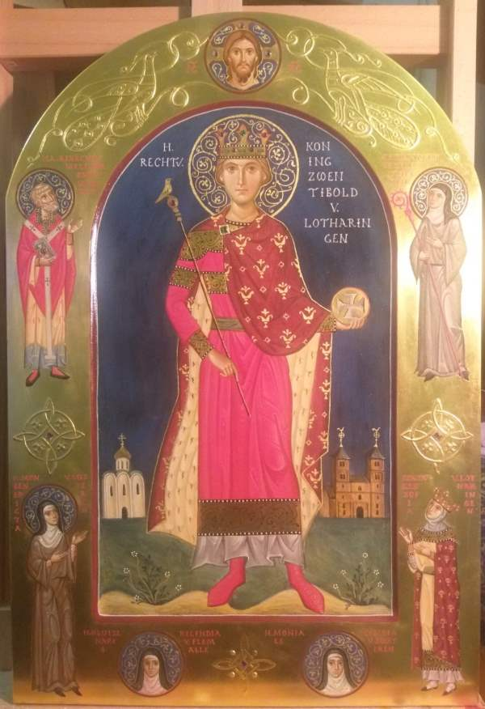
Часть Первая
БИОГРАФИЯ
Цвентибольд прожил не долгую жизнь, о которой мы знаем совсем не много.
Родился он в 870 (по другим данным – в 871) году и был незаконнорожденным сыном Арнульфа
Каринтийского из знаменитой династии Каролингов, одного из маркграфов, правивших на территории
империи Карла Великого. В 887 г. Арнульф стал королём Восточно-Франского королевства,
а незадолго до смерти даже императором. Однако власть его была скорее номинальной:
наступил период феодальной раздробленности, когда каждый герцог и граф имели много политической
и экономической власти. К тому же и сам Арнульф был незаконнорожденным, и потому ему было сложно
утвердить свои права на королевский трон. В мае 895 года Арнульф выделил Цвентибольду область
Лотарингию – небольшую территорию в центре Европы, которая занимала часть территории современных
Франции, Германии, Бельгии и Нидерландов (приречье Мааса и провинция Лимбург). Имя Цвентибольд –
перевод со славянского на древнегерманский имени Святополк. Именно так звали его крёстного,
правителя Великоморавской державы.
|
|
Подробнее...
|
|
НАШИ МОЛИТВЕННИКИ
Чудотворная Роттердамская Икона Божией Матери "СКОРОПОСЛУШНИЦА""В благословение Православной Голландии"
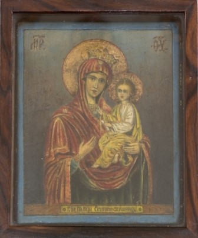
Иконописец: о. иеросхимонах Константин.
Место написания: келья русского отшельника в девственных лесах Южной Индии.
Время написания: 1937 год.
Передана в дар "В благословение Православной Голландии".
После 1937 года находилась в храме св. Марии Магдалины в Гааге.
С 1959 года - в храме в Ее часть в Роттердаме на Персяйнстраат.
С 2004 года - в храме св. блгв. кн. Александра Невского в Роттердаме.
В нашем храме находится чудотворный образ иконы Божией Матери Скоропослушницы Голландской или Роттердамской,
наша "фамильная" святыня. Ведь наш приход - детище владыки Дионисия
(Лукина), епископа Роттердамского. У прихода есть "старший брат" -
гаагский храм св. равноапостольной Марии Магдалины. Волею Божией в 1936
году иеромонах Дионисий попал на пасторское служение в Голландию и тут
ему сразу же пришлось заняться в строительством храма в Гааге. |
|
Подробнее...
|
|
Светлана Рыбакова (Москва)
НАШИ МОЛИТВЕННИКИ
Святая мученица Киранна Солунская (греч. Κυράννα, Κυρήνη)
+ 28.02.1751
Память 28 февраля и 8 января (греч.).
(Также Киранна, Кирина и Кир-Анна (мудрейшая))
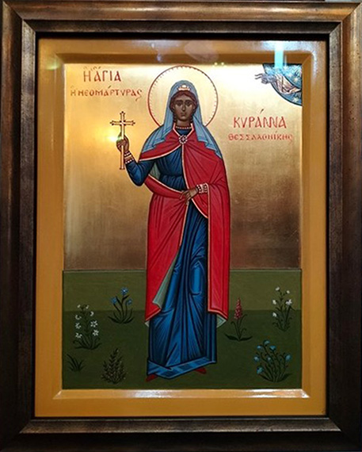
Икона святой мученицы Киранны
Иконописец Наталья Таратуева-Киранова.
Икона написана в 2021 году в Москве.
27 см x 31 см. Доска из липы. Натуральные пигменты,
яичная темпера,
сусальное золото.
Икона находится в храме св. блгв. кн. Александра Невского в Роттердаме,
Гаагская епархия на территории Нидерландского королевства. Патриарший
экзархат Западной Европы.
Преподнесена в дар.
|
|
Подробнее...
|
|
Православный Собеседник N 17
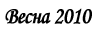 ЧИТАЙТЕ В НОМЕРЕ:
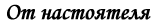
Христос Воскресе! Дорогие братья и сестры!
Мы с вами вновь встречаемся на страницах нашего периодического издания.
На протяжении 3-х лет регулярно раз в квартал вашему вниманию
предлагался новый выпуск «Приходского собеседника». За это время много
раз и я и редакция обращались к вам – нашим читателям и прихожанам - с
призывом активно участвовать в подготовке номеров приходского издания,
присылая в адрес редакции материалы, написанные вами. Эти призывы иногда
находили ваш отклик, часто редакции собирала и писала материал сама, но
издание практически всегда выходило в срок.
В прошедшем 2009 году
мы взяли небольшую передышку. Для этого были как объективные, так и
субъективные причины. Не будем на них сейчас останавливаться. Просто еще
раз скажу, что очень рад вновь встретиться с вами здесь.
Мы с
вами расстались на печальном событии – в последнем, выпущенном перед
годичным перерывом номере, было опубликовано сообщение о кончине
Предстоятеля Русской Церкви Патриарха Алексия. В этом номере мы
предлагаем личные воспоминания о почившем святителе. Печатаем этот
материал на двух языках и надеемся, что краткие заметки помогут чуть
лучше оценить труды и понять личность Патриарха Алексия.
В жизни
Русской Церкви за прошедший год произошло много важных событий.
Несомненно историческим является работа Поместного Собора и избрание на
нем 16-го Предстоятеля Патриарха Кирилла. Многие из вас имели
возможность видеть его, общаться и молиться вместе с ним, когда он в
2004 году возглавил освящение нашего храма Александра Невского.
Знаковое событие произошло и в жизни нашего прихода. В 2009 году
исполнилось 50 лет освящения храма иконы Божией Матери «Скоропослушница»
и 5 лет освящения храма святого благоверного великого князя Александра
Невского. Надеюсь, что в следующих выпусках у нас будет возможность
более подробно поговорить об этих событиях ушедшего 2009 года.
19
января 2010 года исполнилось 35 лет служения в священном сане нашего
архипастыря – Архиепископа Брюссельского и Бельгийского, управляющего
Гаагской и Нидерландской епархией. Свое поздравление по этому случаю
направил владыке Симону Святейший Патриарх Кирилл:
Ваше Высокопреосвященство!
Сердечно поздравляю Вас с 35-летием служения в священном сане, а
также с грядущим днем тезоименитства. Более двух десятилетий Вы несете
послушание вдали от России, проявляя заботу о приходах Московского
Патриархата в Бельгии и Нидерландах. Много сил Вы отдаете созиданию
епархиальной жизни, вносите свой вклад в дело укрепления церковного
единства, призываете клир и паству жизнью своей свидетельствовать о
высоком христианском звании. Сегодня, как и всегда, миссия Церкви
состоит в том, чтобы помогать людям идти по нелегкому пути спасения,
просвещать их светом Евангельской истины, научать любви и милосердию,
смирению и состраданию.
Во внимание к усердным архипастырским
трудам и в связи с 35-летием служения в священном сане полагаю
справедливым вручить Вам памятную панагию.
Надеюсь, что и в дальнейшем Вы с должным терпением и ответственностью будете возделывать вверенный Вам Виноградник Христов.
Молитвенно желаю Вам духовной радости, крепости сил и благодатной
помощи Божией в архипастырских трудах на благо Святой Церкви.
Да хранит Вас Господь в добром здравии на многая и благая лета.
С любовью во Христе
+КИРИЛЛ, ПАТРИАРХ МОСКОВСКИЙ И ВСЕЯ РУСИ
Мы присоединяемся к поздравлениям и желаем дорогому владыке еще многие годы трудиться на благо Святой Церкви.
Пасхальное
послание Святейшего Патриарха Московского и всея Руси Кирилла
архипастырям, пастырям, монашествующим и всем верным чадам Русской
Православной Церкви
3 апреля 2010 года Дорогие собратья архипастыри, всечестные отцы-пресвитеры, боголюбивые диаконы, благочестивые иноки и инокини, братья и сестры!
В светлый и мироспасительный праздник Воскресения Господня сердечно
рад приветствовать вас вдохновенными и неизменно великими словами
пасхального благовестия:
ХРИСТОС ВОСКРЕСЕ!
В эту светозарную ночь мы пребываем в жизнеутверждающем всеобщем
ликовании, ибо событие, которое произошло много веков назад близ
древнего Иерусалима, имеет прямое отношение к каждому из нас. Более
того, Воскресение Христово обладает поистине вселенским значением, ибо
через него Спаситель даровал возможность обрести благодатное единство с
Богом каждому откликнувшемуся на Его призыв: «Приидите, благословенные
Отца Моего, наследуйте Царство, уготованное вам от создания мира» (Мф.
25:34).
Посему мы ныне совосклицаем вместе со Святителем Иоанном
Златоустом: «Никто не рыдай о своем убожестве, ибо для всех настало
Царство!» Празднуя Светлое Христово Воскресение, мы свидетельствуем о
правоте этих слов, ибо каждый человек, даже самый последний грешник,
искупленный Кровью Христа, имеет надежду на спасение. За наши грехи, как
и за грехи всего человеческого рода, заплачено драгоценной Кровью
Распятого. Чтобы воспринять плоды Искупления, нужно иметь веру и
креститься (см. Мк.16:16). Большинство народа нашего крещено, но как же
мало тех, кто имеет веру, способную изменить жизнь!
Перемена
жизни во Христе не означает лишь перемену к лучшему. Это радикальное
изменение, приводящее человека к торжеству жизни и полноте бытия (ср.
Ин.10:10) как в нынешнем пребывании на земле, так и в веке грядущем.
И праздник Святой Пасхи помогает нам явственно почувствовать
неразрывную связь не только с событиями двухтысячелетней давности, но и с
грядущим торжеством «правды вечной» (ср. Дан. 9:24), когда «будет Бог
всё во всем» (1 Кор. 15:28). Мы учимся видеть в человеческой истории
осуществление замысла Творца, осознавая глубину «богатства и премудрости
и ведения Божия» (см. Рим. 11:33), которыми Всещедрый Создатель ведет
человечество ко спасению.
Умение взглянуть на историю в свете
Воскресения Христова особенно важно в нынешнюю эпоху — эпоху
преобладания новостного взгляда на мир, когда чаяния и стремления
человека ограничены сиюминутными заботами, и быстротекущее время
заставляет наших современников забывать о том, что «дни лукавы» (Еф.
5:16). Живя новостями, страхами и хлопотами одного дня, мы склонны
забывать о самом главном — о спасении души, о Промысле Божием, благом и
совершенном.
Воскресение же Христово позволяет всем нам
возвыситься над суетой житейских будней, дабы увидеть подлинное величие
Божественной любви, ради блага человека снисшедшей даже до Креста и
смерти. Поэтому нам так важно осознавать, что своим Воскресением Господь
обновляет человеческую природу, даруя укрепление внутренних сил каждому
христианину в его служении Церкви, стране, обществу, семье, ближнему.
Немалые трудности выпадают на долю и простого человека, и целых
народов: люди сегодня по всему миру страдают от вражды, войн, бедности,
болезней, одиночества, житейской неустроенности. Мир мечется в поисках
лучшей жизни, отчаявшись найти ответ на свои вопросы в людской логике,
политических технологиях или экономических рецептах. Церковь и сама
история свидетельствуют: жить надо по Слову Божьему. Тогда в свете
Христова Воскресения нам откроется смысл происходящего, и мы обретем
способность отвечать на самые опасные вызовы современности.
Пусть Воскресший Спаситель вдохнет и в наши души твердое намерение следовать Его заповедям!
Будем делиться друг с другом радостью нынешнего торжества! Согреем
теплом сердец тех, кто сегодня страдает и испытывает лишения. Обратим
пасхальное приветствие ко всем людям: и ближним, и дальним. Будем
неленостно трудиться ради процветания стран, в которых мы живем.
Возношу горячие молитвы ко Господу о даровании нам жизни мирной и
благоденственной. Да ниспошлет Он Церкви Своей помощь и силу усердно
служить духовному благу окормляемых Ею народов, дабы все мы возрастали в
вере, надежде и в любви.
Вновь обращаю к Вам из глубины сердца
своего торжественный возглас пасхальной радости о Боге, поправшем смерть
и совоскресившем с Собою все человечество:
ХРИСТОС ВОСКРЕСЕ!
ВОИСТИНУ ВОСКРЕСЕ ХРИСТОС!
+КИРИЛЛ, ПАТРИАРХ МОСКОВСКИЙ И ВСЕЯ РУСИ
Пасха Христова 2010 года, Москва
Вопрос:
Недавно
умерла моя родственница. Ее звали Майя. Она была крещена в Молдавии
перед войной, но имени, с которым ее крестили, не помнила. Когда у нее
началась тяжелая болезнь, пригласили священника. Он исповедал и
причастил ее. Через два дня она скончалась. Я обратилась в три
монастыря, но там отказались записать ее на сорокоуст. Что делать?
Ответ:
Отвечает иеромонах Иов (Гумеров), Сретенский монастырь, Москва:
«…теперь надо поминать ее с тем именем, которое есть. Это вполне
законно: она была крещена, получила напутствие святыми тайнами,
следовательно, является членом Церкви. Любой член Церкви имеет право на
поминовение. Пугаться ее имени не нужно. В первые века христианства при
крещении не давали имена в честь святых, а сохраняли языческие имена.
Никого тогда не смущали такие имена, как Меркурий, Орест и др. Со
временем эти имена вошли в святцы. Наши первые святые: равноапостольные
Ольга (в крещении – Елена) и Владимир (Василий), а также страстотерпцы
Борис (Роман) и Глеб (Давид) вошли в месяцеслов не с теми именами, с
которыми они были крещены, а с теми, которые они носили в язычестве.
Для живых и усопших молитва в Церкви является великой помощью.
Чисто формальный подход часто свидетельствует об отсутствии у нас
христианской любви. Когда мы руководствуемся только формальными
соображениями, то и христианство наше становится формальным.
«Человек умерший есть существо живое: “Бог несть Бог мертвых, но живых,
вси бо Тому живи суть” (Лк. 20: 38). Душа его невидимо витает у тела и в
местах, где любила пребывать. Ежели она умерла во грехах, то не может
помочь себе избавиться от уз их и крепко нуждается в молитвах живых
людей, особенно Церкви – святейшей Невесты Христовой. Итак, будем
молиться за умерших искренно. Это великое благодеяние им, больше, чем
благодеяние живым» (Иоанн Кронштадтский, святой. Моя жизнь во Христе.
М., 2002. С. 205).
| 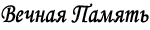 |
К годовщине со дня смерти Святейшего Патриарха Алексия
Протоиерей Григорий Красноцветов
| 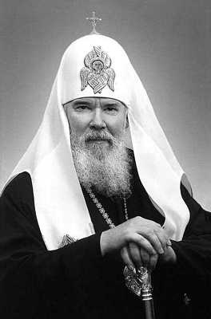5
декабря 2008 года в Москве в возрасте 79 лет скончался Святейший
Патриарх Московский и всея Руси Алексий II. Он всего два месяца не дожил
до своего 80-летия. С его блаженной кончиной закончилась целая эпоха
жизни Русской Православной Церкви. Эпоха, которая вместила в себя
столько событий, что хватило бы, наверное, на несколько поколений.
Редакция ежегодника Jaarboek,
издаваемого голландским православным обществом святителя Николая,
обратилась ко мне с просьбой написать небольшую статью в память о
почившем Первосвятителе Русской Православной Церкви. Думаю, что такое
предложение было сделано мне во многом потому, что я был в Москве на
отпевании и погребении почившего. Для меня же эти небольшие заметки –
дань памяти архиерею, от рук которого я воспринял благодать и
диаконского сана и священнического; который благословил меня, когда в
1990 году я отправлялся в долгосрочную не завершившуюся до сих пор
командировку на служение в Голландию; который и в дальнейшем играл
значительную роль в моей жизни и в моих церковных трудах.
Последний раз святейший Патриарх Алексий принял меня за месяц до своей
кончины. Дело в том, что после избрания митрополита Алексия в 1990 году
Патриархом, я практически каждый год бывал у него в резиденции в Чистом
переулке, за исключением последних пяти лет. В конце октября 2008 года
мне довелось быть участником Всемирной Конференции российских
соотечественников, которая проходила в Москве. Планируя пребывание в
столице, я оставил последний перед отлетом в Голландию день свободным.
Этот день – 3 ноября канун празднования Казанской иконы Божией Матери - я
решил попытаться использовать для того, чтобы попытаться получить
патриаршую аудиенцию. Связавшись с референтом Патриарха, попросил
благословения на встречу. Святейший довольно быстро назначил прием на 4
часа вечера 3 ноября. Бывая у него раньше, я никогда не загружал его
делами, проблемами, понимая, какой груз забот и ответственности лежит на
его плечах. Поэтому при встречах просто рассказывал о нашей приходской
жизни, о людях, о том, как мы проводим праздники. Святейший любил
вспоминать свои посещения Голландии в 60-е годы, о том, как был в
Роттердаме и общался с основателем нашего прихода епископом Дионисием
(Лукиным, † 1976). Любил рассказывать о своих многочисленных
первосвятительских пастырских визитах в многочисленные епархии. Часто
жаловался на недостаток времени, усталость. Но всегда подчеркивал, что с
детских лет усвоил простую истину – никогда никому не дает Господь
крест, который бы превосходил силы человека. И говорил он это таким
тоном и с таким чувством, что было понятно – Патриарх знает на своем
собственном опыте, что это именно так. А опыт жизненный был богатейший.
Будущий Патриарх Алексий родился 23 февраля 1929 года в столице
Эстонии городе Таллине. Это очень важно знать, потому что Эстония в то
время была независимым государством, и первоначальное воспитание и
образование он получил, проживая в свободной стране. Его родители –
благочестивые православные христиане, после революции 1917 году уехавшие
из Советской страны в Эстонию. Там они являлись активными участниками
православной церковной и общественно-религиозной жизни Таллина, были
членами религиозного кружка Русского студенческого христианского
движения (РСДХ). Здесь нелишним будет напомнить, что членами РСДХ были
известнейшие церковные деятели и богословы Русского зарубежья, и среди
них: протоиерей Сергий Булгаков, иеромонах Иоанн (Шаховской), Н. А.
Бердяев, А. В. Карташёв, В. В. Зеньковский, Г. В. Флоровский, Б. П.
Вышеславцев, С. Л. Франк. Вспоминая 20-е годы и свое участие в РСХД в
Прибалтике, святитель архиепископ Сан-Францисский Иоанн (Шаховской)
позднее писал, что тот незабываемый для него период был «религиозной
весной русской эмиграции», ее лучшим ответом на все, что происходило в
это время с Церковью в России. Церковь для русских изгнанников перестала
быть чем-то внешним, напоминающим лишь прошлое. Церковь становилась
смыслом и целью всего, центром бытия. Семья будущего Патриарха являла
собой классический пример «малой, домашней Церкви». Семейной традицией
было посещение монастырей. Именно в то время будущий Патриарх каждое
лето совершал паломничества в Псково-Печерский, Пюхтицкий и Валаамский
монастыри, которые также находились вне границ советского государства.
Он общался с монахами, с некоторыми из них у девятилетнего мальчика
завязалась настоящая переписка. Здесь можно отметить, что уже будучи
епархиальным архиереем в Эстонии во времена хрущевских гонений (начало
60-х годов) епископ Алексий приложил много сил, чтобы сохранить
Пюхтицкий монастырь от закрытия. А на Валаам он никак не мог заставить
себя поехать, потому что не мог видеть то разорение, которому монастырь
подвергся в годы коммунистического владычества. И только, когда
Валаамский монастырь был возвращен Церкви и там начались
восстановительные работы, уже будучи Патриархом каждый год совершал
паломничество к любимым с детства местам.
В 1940 году, после
того, как в Эстонию вошли советские войска, в Таллине среди местного
населения и среди русских эмигрантов начались аресты и высылки в Сибирь.
Такая судьба была уготована и семье Ридигеров, однако Промысл Божий
сохранил их. Вот как об этом впоследствии вспоминал сам Патриарх
Алексий: «Перед войной, как дамоклов меч, нам грозила высылка в Сибирь.
Только случай и чудо Божие нас избавило. После прихода советских войск к
нам в пригород Таллина приехали родственники по линии отца, и мы им
предоставили свой дом, а сами перешли жить в сарай, там у нас была
комната, где мы и жили, с нами были две собаки. Ночью за нами приехали,
обыскали дом, ходили по участку, но собаки, которые обычно вели себя
очень чутко, ни разу даже не гавкнули. Нас не нашли. После этого случая,
до самой немецкой оккупации, мы уже в доме не жили». В годы войны
Алексий сопровождал своего отца священника Михаила Ридигера, духовно
окормлявшего русских людей, которых через Эстонию вывозили на работы в
Германию. В лагерях в очень тяжелых условиях содержались тысячи
невольников, в основном из центральных областей России. Общение с этими
людьми, много пережившими и страдавшими, перенесшими на Родине гонения и
оставшимися верными Православию, навсегда оставило след в душе молодого
человека.
После войны, будучи иподиаконом, Алексий Ридигер
помогал в восстановлении церковной жизни Александро-Невского собора в
Таллине. Затем поступил в Ленинградскую семинарию. Пройдя все ступени
священства, в 60-е годы стал ближайшим помощником Патриарха Алексия I,
постоянным членом Священного Синода, Управляющим делами Московской
Патриархии, председателем Учебного комитета. В 1986 году написал письмо
тогдашнему руководителю Советского Союза М. С. Горбачеву с предложениями
о перестройке государственно-церковных отношений. Тогда же был снят со
всех церковных постов и назначен на Ленинградскую кафедру.
В 1988
году – в год празднования 1000-летия Крещения Руси - я заканчивал
обучение в Духовной академии. Будучи в то время митрополитом
Ленинградским владыка Алексий стал привлекать меня с несколькими моими
сокурсниками к лекциям в школах, на предприятиях, в больницах, к участию
в различных мероприятиях, конференциях. В том же году в праздник
Казанской иконы Божией Матери 21 июля митрополит рукоположил меня в сан
диакона и назначил штатным священником в церковь Смоленской иконы Божией
Матери. Там находится часовня блаженной Ксении Петербургской, которая
была только что канонизирована, и в храм, на кладбище и в часовню
устремились тысячи паломников. Часто там бывал и служил митрополит
Алексий, что дало мне еще одну возможность общаться с владыкой. В 1989
году на праздник Благовещения Пресвятой Богородицы митрополит Алексий
рукоположил меня в сан священника. Не обошлось и без волнения. Рано
утром перед службой он позвонил мне домой и сказал, что очень плохо себя
чувствует, и хиротонии не будет. Но все-таки он нашел в себе силы, и
служба с хиротонией состоялась! В этом тоже проявился характер владыки и
его любовь к богослужению. В 1990 году после получения назначения на
приход в Роттердам, я побывал на приеме у правящего архиерея, получил от
него благословение и напутствие на служение за границей. Он мне –
молодому священнику – долго рассказывал об особенностях и важности
служения на заграничном приходе, рассказывал о том, с чем ему самому
приходилось сталкиваться во время частых поездках заграницу.
В
этот раз – в 2008 году - как и всегда, я привез с собой из Голландии
различные сорта сыра, которые Патриарх особенно любил, и альбом с
фотографиями нашего храма и приходской жизни – праздничных богослужений,
детских праздников, приемов. Мне казалось очень важным показать жизнь
прихода в храме, к строительству которого Патриарх оказался причастным.
Дело в том, что в середине 90-х годов прошлого века, начиная труды по
строительству храма, я просил у Патриарха благословение на создание
Фонда строительства русского храма в Роттердаме. Святейший не просто
благословил создание Фонда, но и написал специальное обращение с
просьбой помочь нам в этом богоугодном деле, и в дальнейшем всегда живо
интересовался, как продвигается строительство.
Принят я был в
рабочем кабинете очень любезно и усажен за журнальный столик, что
означало, как объяснили мне позже сотрудники Патриархии, особое
расположение. Я коротко, чтобы не отнимать много времени, рассказал, как
мы служим, чем занимаемся, какие у нас планы. Святейший же рассказал об
Архиерейском соборе, о праздновании 1020-летия Крещения Руси, которые
проходили в Москве и Киеве. Рассказал о том, как было тяжело в Киеве и
из-за политической ситуации, и из-за планов раскольников, и из-за жары.
Ведь многочасовые службы проходили на открытом воздухе под палящим
солнцем. И такую непомерную физическую и психологическую нагрузку
пришлось вынести 79-летнему старцу! После этой поездки на Украину
Святейший почти целый месяц лечился. Во время разговора я все время
порывался встать и попросить благословения, потому что Святейшему надо
было собираться на всенощное бдение (уже несколько раз заходила монахиня
и строго смотрела на меня – что, мол, задерживаешь Святейшего?!). Но
было такое впечатление, что ему не хочется прекращать беседу. Когда все
же нужно было отправляться на службу, он меня благословил, одарил
подарками. Возложил на меня памятный крест с украшениями, выпущенный к
1020-летию Крещения Руси. Выходя из кабинета, я обернулся, и раньше
всегда в этот момент Святейший еще раз благословлял издали, а в этот раз
просто помахал мне рукой…как будто попрощался.
Множество
исторических событий, очень часто трагических, выпало на период служения
Патриарха Алексия II. Попытка переворота и распад государства в 1991
году, практически начало гражданской войны в октябре 1993 года, страшный
финансовый кризис 1998 года. Все эти события сказывались и на жизни
Церкви. И все это несомненно проходило через сердце Патриарха. В эти же
годы приходилось бороться с нашествием различных сектантов, наводнивших
страну, покупавших души людей и стадионы для своих собраний. На Украине
произошел раскол, на западе Украины активизировались униаты, а на
территории России - католики. Обострились отношения с Русской зарубежной
церковью, которая стала открывать приходы и целые епархии на территории
России, принимая туда священников, ушедших или изгнанных из Московского
Патриархата в основном из-за дисциплинарных проблем. Но в эти же самые
годы шло бурное строительство и восстановление храмов и монастырей,
открытие семинарий, духовных училищ, воскресных школ, православных
гимназий и православных детских садов. Начинается давно забытое
социальное служение – священники идут в тюрьмы, больницы, воинские
части. Вот немного статистики. К концу патриаршества Патриарха Алексия в
Русской Церкви было более 29 тысяч приходов (в начале патриаршества -
около 6 тысяч), 5 духовных академий (было 2), 3 православных
университета (не было ни одного), 38 духовных семинарии (было 3), более
800 монастырей (был 21), более 11 тысяч воскресных школ (не было ни
одной), 157 епархий (было 67 епархий). За неполный 2008 год им было
совершено почти 100 богослужений! Эти службы – патриаршие службы –
длятся не по часу-полтора, как на обычном приходе, а по три-четыре часа
со всевозможными протокольными речами и поздравлениями после службы. При
этом надо учесть, что речь идет о почти 80-летнем старце, последние
годы страдавшем серьезным сердечным недугом. После тяжелейшей поездки на
Украину на празднование 1020-летия Крещения Руси Святейшему пришлось
долго лечиться и восстанавливать силы. И в такой тяжелый год – сто
богослужений! В этой любви к церковным службам – я бы назвал это
молитвенным стоянием – проявилось все его церковное воспитание, его
церковность, его вера.
В конце ноября Святейший, заканчивая
лечение в Германии, совершил литургию в храме Русской Зарубежной церкви в
честь Новомучеников российских. Разве это не символично? Ведь
практически его трудами за год до этого в праздник Вознесения Господня
17 мая 2007 года совершилось долгожданное воссоединение двух частей
Русской Церкви. При его святительстве началась канонизация новомучеников
и исповедников Российских. В последний день жизни 4 декабря в праздник
Введения во храм Пресвятой Богородицы он совершил литургию в храме
московского Кремля (в 1997 году он впервые за почти 300 лет взошел на
Патриаршее место в Успенском соборе Кремля), а днем - в Донском
монастыре у мощей святителя Тихона Патриарха Московского и всея Руси,
Патриарх Алексий совершил молебен, обратившись к молящимся с последней
своей проповедью. В этот день отмечался день интронизации святителя
Тихона, которая произошла в 1917 году. К лику святых Патриарх Тихон был
причислен при Патриархе Алексии. И это тоже символично! Скончался
Патриарх Алексий 5 декабря утром в своей резиденции. В этот же день
только в далеком 1932 году в Москве был взорван Храм Христа Спасителя,
восстановленный при Патриархе Алексии! Не бывает у Господа таких
совпадений!
Получив благословение нашего правящего архиерея
архиепископа Брюссельского и Бельгийского Симона, я вылетел в Москву на
похороны почившего Первосвятителя. Из аэропорта приехал в храм Христа
Спасителя, где заканчивалась вечерняя заупокойная панихида. Невозможно
было не обратить внимания на огромную - в несколько километров - очередь
людей с цветами, которые стояли вокруг собора. Очередь уходила далеко
за поворот куда-то к центру Москвы. На улице - холод, дождь, ветер. А
люди стояли по 5-8 часов, в надежде подойти, поклониться гробу, положить
цветы. Я тоже привез с собой голландские тюльпаны и положил их к ногам
почившего Предстоятеля. Постоял, помолился. На следующий день –
заупокойная служба, отпевание и погребение. В заупокойном богослужении
приняли участие Предстоятели Поместных Православных Церквей: Патриархи
Константинопольский Варфоломей, Грузинский Илия, Румынский Даниил,
Архиепископ Афинский и всей Эллады Иероним, Архиепископ Тиранский и всея
Албании Анастасий, Митрополит Чешских земель и Словакии Христофор,
представители других Православных Церквей, множество церковных,
общественных и государственных деятелей со всего мира. Весь день шел
дождь. Службу возглавил Патриарший Местоблюститель (ныне Патриарх)
митрополит Кирилл. Весь гроб утопал в белых розах, которые почивший
Патриарх очень любил при жизни. После отпевания гроб обнесли вокруг
храма и через Москву отвезли в Богоявленский собор, где в 1990 году
состоялась его патриаршая интронизация, и где теперь он обрел свое
последнее пристанище. В этот день по телевидению не показывали
развлекательных передач, а показывали документальные фильмы о жизни
почившего Патриарха, о жизни Русской Церкви. И это – дань уважения и
благодарность за все его труды. И в этом тоже – его несомненная заслуга!
После возвращения в Голландию, я сорок дней служил панихиды в нашем храме.
Вечная память и вечный покой усопшему рабу Твоему Святейшему Патриарху Московскому и всея Руси Алексию!
Over Patriarch Alexiy
Aartspiester Grigoriy Krasnotsvetov Op
5 december 2008 is in Moskou op 79-jarige leeftijd de Patriarch van
Moskou en geheel Rusland Alexiy II overleden. Hij was minder dan 2
maanden van zijn tachtigste verjaardag verwijderd. Met zijn overlijden
eindigde een heel era in het leven van de Russisch-orthodoxe Kerk. Een
periode die genoeg gebeurtenissen omvat heeft voor een aantal
generaties.
De redactie van Jaarboek heeft zich tot mij gewend
met het verzoek om een kort artikel over de overleden Patriarch te
schrijven. Waarschijnlijk werd dit mij verzocht omdat ik aanwezig ben
geweest bij de kerkelijke begrafenis van de overleden Patriarch in
Moskou. Voor mij betekent het schrijven van dit artikel ook het bewijzen
van een eerbetoon aan en het herinneren van de persoon door wie ik
eerst tot diaken en later tot priester ben geweid, van wie ik de zegen
heb gekregen om naar Nederland te komen, en die ook in latere jaren een
grote rol in mijn leven en mijn dienen heeft gespeeld.
De laatste
keer dat ik op audiëntie bij Patriarch Alexiy II ben geweest was een
maand voor zijn overlijden. Eind oktober 2008 ben ik in Moskou geweest
om deel te nemen aan de Wereldwijde Conferentie van Russische
landgenoten, en op de laatste dag van mijn verblijf in Moskou had ik
niets gepland. De laatste dag was 3 november, net voor het feest van
Moeder Gods van Kazan. Vanaf 1990 toen Metropoliet Alexiy tot Patriarch
gekozen werd, ben ik elk jaar bij hem op bezoek geweest in
Tsjistiyzijstraat, met uitzondering van de laatste vijf jaar. Ik wilde
dus gebruik maken van deze mogelijkheid om Patriarch Alexiy te bezoeken.
Ik heb contact gezocht met de assistent van de Patriarch om een zegen
te krijgen voor een bezoek. Om 4 uur ’s middags op 3 november mocht ik
komen. Toen ik vroeger bij de Patriarch kwam wist ik al te goed om hem
niet met mijn eigen problemen en zorgen te overladen, hij had namelijk
altijd al genoeg zorgen en verantwoordelijkheid op zijn schouders. Juist
daarom vertelde ik hem toen ik bij hem mocht komen gewoon over ons
parochieleven, over de mensen in onze kerk en over hoe wij onze
kerkelijke feesten vieren.
De Patriarch herinnerde zich graag aan
zijn bezoeken naar Nederland in de jaren 60, aan hoe hij in Rotterdam
is geweest en aan zijn gesprekken met Bisschop Dionysios. Hij vertelde
graag over zijn bezoeken aan andere diocesen. Soms zei hij dat er niet
genoeg tijd of kracht is om alles te kunnen doen, maar voegde daar
altijd heel duidelijk aan toe dat hij vanaf zijn jeugd een simpele
waarheid geleerd heeft: niemand krijgt van de Heer een kruis, dat hij
niet kan dragen. Uit de manier, waarop hij dat zei, was duidelijk dat
hij uit ervaring sprak. En de ervaring had de Patriarch wel.
De
toekomstige patriarch werd geboren op 23 februari 1929 in de hoofdstad
van Estland – Tallinn. Dit is een belangrijk feit, want Estland was toen
een onafhankelijke staat. Zijn opvoeding en opleiding heeft hij
gekregen in een nog vrij land. Zij ouders waren gelovigen orthodoxe
christenen, die na de revolutie van 1917 uit de Sovjetstaat naar Estland
geïmmigreerd zijn. Daar namen zijn actief deel aan het kerkelijke en
maatschappelijk-religieuze leven in Tallinn. Het is zinvol om op te
merken dat ze toen leden waren van de Russisch christelijk
studentenkring samen met onder anderen aartspriester Sergiy Boulgakov,
hieromonnik Ioann (Shakhovskoy), N. Berdyaev, A. Kartashev, V.
Zenkovskiy, G. Florovskiy, et al. Toen Aartsbisschop Ioann (Shakhovskoy)
later terugdacht aan zijn deelname aan de Russisch christelijk
studentenkring schreef hij dat die periode "een lente van de Russische
emigratie is geweest”, het beste antwoord op alles wat destijds met de
Kerk in Rusland gebeurde. De Kerk voor Russische immigranten had toen
een ware betekenis en was niet alleen maar iets dat hen terug aan de
oude tijden deed denken. De kerk was de zin en het doel van het leven,
het centrum van het bestaan. En het gezin van de toekomstige patriarch
was een klassiek voorbeeld van een "kleine Kerk". Tot de tradities van
zijn gezin behoorden bedelvaarten aan kloosters en heilige plaatsen: elk
jaar gingen ze naar het Holenklooster van Pskov, het Piukhtizy klooster
en het Valaam klooster die allen buiten de grenzen van de Sovjetstaat
lagen. Hij had de mogelijkheid om met monniken te spreken en later bleef
hij sommigen een tijdje schrijven. Toen bisschop Alexiy later in de
Khroeschiov-tijd (begin jaren 60) aan het Tallinn diocees verbonden was,
heeft hij geen moeite gespaard om het Piukhtizy klooster open te kunnen
houden. En hij heeft zichzelf lange tijd niet kunnen dwingen om naar
Valaam te gaan omdat hij de staat in welke het klooster verkeerde na de
Sovjet periode niet kon aanzien. Pas toen het Valaam klooster aan de
Kerk teruggegeven werd en daar de herstel- en verbouwingswerkzaamheden
begonnen waren keerde hij terug. Als patriarch keerde hij elk jaar terug
naar de bekende en geliefde plaatsen van zijn jeugd.
In 1940
toen het Russische leger Estland binnenkwam begonnen er mensen - onder
anderen de Russische emigranten - gearresteerd te worden, en sommigen
werden naar Siberië gestuurd. Hetzelfde had de familie Ridiger kunnen
verwachten, maar met Gods hulp hebben ze dat kunnen vermijden.
Tijdens de oorlogsjaren reisde Alexiy mee met zijn vader priester
Mikhail, die mensen die naar Duitsland gestuurd werden geestelijk
verzorgde. In deze kampen werden in hele zware condities duizenden
mensen gehouden. De meesten van hen kwamen uit de centrale regio’s van
Rusland. Het communiceren met deze mensen die veel hadden gezien, veel
hadden meegemaakt en doorstaan en trouw aan de Orthodoxie waren gebleven
hebben een grote indruk gemaakt op de jonge Alexiy.
Na de oorlog
toen Alexiy Ridiger hipodiaken was, hielp hij met het herstel van het
kerkelijke leven van de Alexander Nevsky-Cathedraal in Tallinn. Daarna
werd hij toegelaten tot het geestelijke seminarie in Leningrad. Hij is
diaken en priester geweest en als bisschop begin jaren 60 werd hij
permanent lid van de Heilige Synode en voorzitter van het Opleidingen
Comité. Hij was één van de naaste helpers van Patriarch Alexiy I. In
1986 heeft hij een brief aan de toenmalige leider van de staat M.
Gorbatsjev geschreven met een voorstel betreffende 'perestroika' in
staats-kerkelijke betrekkingen. Op hetzelfde moment is hij al zijn
functies kwijtgeraakt en werd verplaatst naar het Diocees van Leningrad.
In het jaar 1988 – het jaar van de viering van 1000 jaar
Christendom in Rusland was ik mijn studie aan de Geestelijke Academie in
Leningrad aan het voltooien. Toen werd ik samen met een aantal
medestudenten door Metropoliet Alexiy bij lezingen op scholen, op
werkplekken, in ziekenhuizen en tijdens verschillende conferenties
betrokken. In hetzelfde jaar tijdens het feest van Moeder Gods van Kazan
op 21 juli werd ik door Metropoliet Alexiy geweid tot diaken en
geplaatst bij de kerk van de Moeder Gods van Smolensk. Bij deze kerk is
een kapelletje van de heilige Xenia van Sint-Petersburg, die destijds
net tot heilige gecanoniseerd was. De kerk, het kapelletje en het
kerkhof waren een trekpleister voor duizenden gelovigen en pelgrims.
Daar is Metropoliet Alexiy ook vaak geweest. Ook daar werd ik op het
feest van de Annunciatie in 1989 door Metropoliet Alexiy tot priester
geweid. De weiding is niet zonder spanning verlopen: vroeg in de ochtend
op de dag van de weiding heeft de Metropoliet mij gebeld om te
vertellen dat hij zich niet goed voelde en dat de weiding niet door kon
gaan. Maar toch heeft hij krachten opgezocht en is gekomen om de weiding
door laten gaan! Dat laat nogmaals het karakter van vladyka en zijn
liefde voor het kerkelijk dienen zien. In 1990 toen ik wist dat ik naar
Rotterdam zou gaan ben ik bij de regerende bisschop van het diocees
geweest, en heb hem om zijn zegen gevraagd voor het dienen in het
buitenland. En hij vertelde uitgebreid aan mij – een jonge priester –
hoe belangrijk en bijzonder het dienen bij een buitenlandse parochie is
en ook wat hij zelf heeft meegemaakt tijdens zijn regelmatige reizen
naar en in het buitenland.
Deze keer, zoals ook andere keren, had
ik verschillende kazen uit Nederland meegenomen, die de Patriarch
lekker vond, en een album met een groot aantal foto's van onze kerk en
kerkelijk leven - kinderfeesten, parochiefeesten, plechtige diensten.
(In het midden van de jaren 90, toen wij net begonnen waren met de
werkzaamheden voor het bouwen van de kerk, heb ik bij de Patriarch de
zegen gevraagd om een stichting voor het bouwen van een
Russisch-orthodoxe kerk in Rotterdam op te richten. En de Patriarch
heeft niet alleen zijn zegen om een Stichting op te richten gegeven,
maar ook een speciale petitie geschreven en ondertekent met een verzoek
om ons bij dezen te helpen.)
Ik werd heel vriendelijke ontvangen
in zijn kabinet bij een klein tafeltje, wat volgens de medewerkers van
de Patriarchie een bijzondere affectie betekende. Ik vertelde in het
kort, om maar niet teveel tijd te nemen, hoe wij dienen, waar wij mee
bezig zijn en welke plannen wij hebben. De Patriarch vertelde over de
Bisschoppelijke Concilie, de viering van het 1020-jarige jubileum van
het Christendom in Rusland, die in Moskou en Kiev plaats heeft gevonden.
Hij vertelde dat het heel zwaar was geweest in Kiev vanwege de
politieke situatie, vanwege de plannen van sommigen om een schisma te
creëren en ook vanwege de hitte. Alle vele uren durende diensten vonden
buiten plaats onder de gloeiende zon. Wat een emotionele en fysieke druk
had een 79-jarige starets moeten doorstaan! Na deze reis moest de
Patriarch nog een maand bijkomen en herstellen. Ik had de hele tijd de
neiging om op te staan en om een zegen te vragen omdat Patriarch al naar
de Vigilie door moest (al een paar keer was een non naar binnen gekomen
en streng naar mij gekeken alsof zij wou zeggen, waarom houd je de
Patriarch zo lang bezig?!). Maar ik had de indruk dat hij zelf ook geen
zin had om dit gesprek te beëindigen. Toen het al tijd was om naar de
Vigilie te gaan heeft de Patriarch mij zijn zegen gegeven en met cadeaus
begiftigd. De Patriarch heeft op mij een kruis gelegd dat uitgebracht
was voor de gelegenheid van de 1020-jarige jubileum van het Christendom
in Rusland. Toen ik zijn kabinet verliet, keek ik terug en vroeger
maakte de Patriarch dan nog een teken van zegen van ver af, maar deze
keer zwaaide hij gewoon naar mij toe... alsof vaarwel zeggend.
Vele gebeurtenissen, ook tragische en van historisch belang, heeft
Patriarch Alexiy II meegemaakt gedurende zijn patriarchaat. Een poging
tot een staatsgreep en de instorting van de Sovjet Unie in 1991, bijna
een burgeroorlog in oktober 1993 en een ernstige financiële crisis in
1998. Al die gebeurtenissen hebben hun invloed op het kerkelijke leven
gehad. En dezelfde gebeurtenissen zijn ook door het hart van de
Patriarch gegaan. In dezelfde jaren moet er gestreden worden tegen
verschillen sekten, die het land hebben overstroomd, en hele stadionen
voor hun bijeenkomsten en de zielen van gelovigen kochten. In Oekraïne
vond een schisma plaats, in het westen zijn uniaten bijzonder actief
geworden. De relaties met de Russisch-orthodoxe kerk in het Buitenland
werden moeilijk: er werden een aantal parochies en hele diocesen in
Rusland geopend, waar priesters werden toegelaten die om disciplinaire
redenen uit de Russisch-orthodoxe Kerk gezet waren. Maar tegelijkertijd
werden veel kerken en kloosters gebouwd en hersteld. Geestelijke
seminaries, zondagsscholen, orthodoxe gymnasiums en orthodoxe
kindertuinen werden geopend. Hersteld werd het lang vergeten kerkelijk
sociaal dienen – priesters komen weer naar gevangenissen, ziekenhuizen
en het leger. Hier volgen een paar statistieken. Aan het einde van het
patriarchaat van Patriarch Alexiy II telde Rusland meer dan 29,000
parochies (aan het begin van zijn patriarchaat waren er maar 6,000), 5
geestelijke academies (eerder 2), 3 orthodoxe universiteiten (eerder
niet één), 38 geestelijke seminaries (eerder 3), meer dan 800 kloosters
(eerder 21), meer dan 11,000 zondagsscholen (eerder niet één) en 157
diocesen (eerder 67). Tijdens het jaar 2008 heeft hij bijna 100 diensten
geleid! En de diensten geleid door Patriarch duren geen 1-1½ uur zoals
gewoonlijk, maar vaak 3-4 uur met een aantal toespraken en felicitaties
na afloop van de dienst. En vergeet daarbij niet dat het steeds om een
bijna 80-jarige starets gaat die ook aan ernstige hartproblemen leidt.
Na de reis naar Oekraïne om het 1020-jarige jubileum van de Doop van
Rusland (Christendom) te vieren heeft de Patriarch bijna 2 maanden
moeten herstellen en de verloren krachten weer moeten verzamelen. En
binnen zo’n jaar 100 diensten! In deze liefde voor de kerkelijke
diensten - ik zou het ook het staan in gebed willen noemen - hebben zijn
kerkelijke opvoeding, zijn kerkelijkheid en zijn geloof zich getoond.
Eind november aan het eind van zijn behandeling in Duitsland heeft de
Patriarch een liturgie in de kerk van Heilige nieuwe martelaren van
Rusland van de Russisch-orthodoxe Kerk in het Buitenland geleid. Is dat
niet symbolisch?! Het is grotendeels door zijn inspanningen dat op de
dag van het feest van de Hemelvaart des Heren op 17 mei 2008 de twee
delen van de Russische Kerk weer één zijn geworden. Tijdens zijn
patriarchaat is het proces van canonisatie van nieuwe martelaren en
belijders van Rusland begonnen. Op zijn laatste levensdag, 4 december,
op de dag van het feest van de Tempelgang van de Moeder Gods heeft hij
een liturgie in één van de kathedralen van het Kremlin geleid, en
overdag op dezelfde dag een moleben voor de relieken van de heilige
Tikhon, Patriarch van Moskou en geheel Rusland in het Donskoy klooster
en richtte zich daarbij tot de gelovigen met zijn laatste preek. Op die
dag werd de intronisatie van de Heilige Tikhon gevierd die plaats vond
in 1917. Patriarch Tikhon is gecanoniseerd tijdens het patriarchaat van
Patriarch Alexiy II. En ook dat is heel symbolisch! Patriarch Alexiy II
overleed in de ochtend van 5 december in zijn residentie. Op dezelfde
dag maar dan in 1932 werd de kathedraal van Christus de Verlosser in
Moskou vernietigd, die op initiatief van Patriarch Alexiy II opnieuw
werd gebouwd. Zulke gebeurtenissen zijn niet bij de Heer toevallig!
Nadat ik de zegen van Aartsbisschop Simon heb gekregen, ben ik naar
Moskou gevlogen om tijdens de begrafenis van de overleden Patriarch
Alexiy aanwezig te zijn. Van het vliegveld ging ik meteen naar de
kathedraal van Christus de Verlosser, waar de panachida eindigde. Er
stonden werkelijk kilometers mensen, iedereen met bloemen, rondom de
kathedraal en er was geen eind aan deze rij te zien. Mensen stonden uren
lang - soms 5-8 uren - om de mogelijkheid te hebben om naar de kist te
komen en hun bloemen neer te leggen. Ik heb witte Nederlandse tulpen
meegenomen en ze aan de voeten van de Patriarch neergelegd. En daar
stond ik nog even te bidden. De dag daarop volgde de begrafenis met de
bijbehorende diensten. Aan de begrafenisdiensten namen hoofden van
Plaatselijke Orthodoxe kerken deel: Bartholomeus, Patriarch van
Konstantinopel; Ilia, Patriarch van Georgië; Daniil, Patriarch van
Roemenie; Hieronim, Patriarch van Athene en geheel Griekenland;
Anastasiy, Aartsbisschop van Tirana en geheel Albanië; Christophor,
Metropoliet van Tsjechische landen en Slowakije en vertegenwoordigers
van andere Plaatselijke kerken, evenals vele kerkelijke, publieke- en
staatsfiguren uit de hele wereld. De dienst werd geleid door de
Patriarchaal plaatsvervangende (huidige Patriarch) Metropoliet Kirill.
De kist was vol met grote witte rozen die Patriarch Alexiy mooi vond. Na
de begrafenisdienst werd de kist werd met handen rond de kathedraal
gedragen en daarna door het centrum van Moskou naar de
Theofanie-kathedraal gebracht. In 1990 vond daar de intronisatie van
Patriarch Alexiy plaats en nu heeft hij daar zijn eeuwige rust gevonden.
Die dag zijn er op de televisie geen amusementsprogramma’s uitgezonden –
alleen maar documentaires over het leven van de Patriarch en het leven
van de Russische Kerk.
Na mijn terugkomst in Nederland heb ik veertig dagen panachida’s in onze kerk in Rotterdam gediend. Het eeuwige leven en de eeuwige rust aan de overleden dienaar Gods Patriarch van Moskou en geheel Rusland Alexiy! Vertaling: Ioulia Essenberg
Перевод: Юлия Эссенберг
Вторая
часть всенощного бдения - утреня напоминает нам времена новозаветные:
явление Господа нашего Иисуса Христа в мир, для нашего спасения, и Его
славное Воскресение.
Начало утрени прямо указывает нам на Рождество Христово. Она начинается славословием ангелов, явившихся вифлеемским пастырям: "Слава в вышних Богу, и на земли мир, в человецех благоволение".
Затем читается шестопсалмие, т. е. шесть избранных псалмов царя
Давида (3, 37, 62, 87, 102 и 142), в которых изображается греховное
состояние людей, исполненное бед и напастей, и горячо выражается
ожидающаяся людьми единственная надежда на милосердие Божие.
Шестопсалмию молящиеся внимают с особым сосредоточенным благоговением.
После шестопсалмия, диакон произносит великую ектению.
Затем громко и радостно поется краткая, со стихами, песнь о явлении Иисуса Христа в мир людям: "Бог Господь и явися нам, благословен грядый во имя Господне!" т. е. Бог - Господь, и явился нам, и достоин прославления идущий во славу Господа.
После этого поется тропарь, т. е. песнь в честь праздника или
празднуемого святого, и читаются кафизмы, т. е. отдельные части
Псалтири, состоящая из нескольких последовательных псалмов. Чтение
кафизм, так же как и чтение шестопсалмия, призывает нас помыслить о
нашем бедственном греховном состоянии и возложить всю надежду на милость
и помощь Божию. Кафизма значит сидение, так как во время чтения кафизм
можно сидеть.
По окончании кафизм, диакон произносит малую
ектению, и затем совершается полиелей. Полиелей слово греческое и
означает: "многомилостие" или "многое освещение".
Полиелей
есть самая торжественная часть всенощной и выражает собою прославление
милости Божией, явленной нам в пришествии Сына Божия на землю и
совершении Им дела нашего спасения от власти диавола и смерти.
Полиелей начинается торжественным пением хвалебных стихов: Хвалите имя Господне, хвалите раби Господа. Аллилуия!
Благословен Господь от Сиона, живый во Иерусалиме. Аллилуия!
Исповедайтеся Господеви, яко благ, яко в век милость Его. Аллилуиа!
т. е. прославляйте Господа, потому что Он благ, потому что милость Его
(к людям) во век - всегда.
Исповедайтесь Богу небесному, яко в век милость Его. Аллилуия! При
пении этих стихов в храме возжигаются все светильники, царские врата
открываются, и священник, предшествуемый диаконом со свечою, выходит из
алтаря и совершает каждение по всему храму в знак благоговения к Богу и
святым Его.
После пения этих стихов поются в воскресные дни
особые воскресные тропари; т. е. радостные песни в честь Воскресения
Христова, в которых говорится, как ангелы явились мироносицам, пришедшим
ко гробу Спасителя, и возвестили им о воскресении Иисуса Христа.
В другие же великие праздники, вместо воскресных тропарей, поется
перед иконою праздника величание, т. е. краткий хвалебный стих в честь
праздника или святого.
После воскресных тропарей, или после
величания, диакон произносит малую ектению, затем прокимен, и священник
читает Евангелие.
На воскресной службе читается Евангелие о
Воскресении Христа и о явлениях воскресшего Христа Своим ученикам, а в
другие праздники читается Евангелие, относящееся к празднуемому событию
или к прославлению святого.
По прочтении Евангелия, в воскресной службе поется торжественная песнь в честь воскресшего Господа: "Воскресение Христово видевше, поклонимся святому Господу Иисусу..."
Евангелие выносится на средину храма, и верующие прикладываются к
нему. В другие праздники верующие прикладываются к праздничной иконе.
Священник их помазывает благословенным елеем и раздает освященный хлеб.
После пения: «Воскресение Христово» поется еще несколько кратких
молитвословий. Затем диакон читает молитву: "Спаси, Боже, люди Твоя..." и
после возгласа священника: "Милостью и щедротами..." начинается пение
канона.
Каноном на утрени называется собрание песней,
составленное по определенному правилу. "Канон" слово греческое и значит
"правило".
Канон разделяется на девять частей (песней). Первый
стих каждой песни, который поется, называется ирмос, что значит связь.
Этими ирмосами как бы связывается весь состав канона в одно целое.
Остальные стихи каждой части (песни), большею частью читаются и
называются тропарями. Вторая песнь канона, как покаянная исполняется
только в Великом посту.
В составлении этих песней в особенности
потрудились: св. Иоанн Дамаскин, Косма Маюмский, Андрей Критский
(великий покаянный канон) и многие другие. При этом они неизменно
руководствовались определенными песнопениями и молитвами священных лиц, а
именно: пророка Моисея (для 1 и 2 ирмосов), пророчицы Анны, матери
Самуила (для 3-го ирмоса), пророка Аввакума (для 4 ирмоса), пророка
Исаии (для 5 ирмоса), пророка Ионы (для 6 ирмоса), трех отроков (для
7-го и 8-го ирмосов) и священника Захарии, отца Иоанна Предтечи (для
9-го ирмоса).
Перед девятым ирмосом диакон возглашает: «Богородицу и Матерь Света в песнех возвеличим!» и совершает каждение храма.
Хор в это время поет песнь Богородицы: «Величит душа Моя Господа и возрадовася дух Мой о Бозе Спасе Моем...» К каждому стиху присоединяется припев: "Честнейшую херувим и славнейшую без сравнения серафим, без истления Бога Слова рождшую, сущую Богородицу, Тя величаем".
По окончании песни Богородицы, хор продолжает пение канона (9-ой песни).
Об общем содержании канона можно сказать следующее. Ирмосы напоминают
верующим ветхозаветные времена и события из истории нашего спасения и
постепенно приближают мысль нашу к событию Рождества Христова. Тропари
же канона посвящены новозаветным событиям и представляют собою ряд
стихов или песнопений во славу Господа и Божией Матери, а также в честь
празднуемого события, или же святого, прославляемого в этот день.
После канона поются хвалительные псалмы - стихиры на хвалитех - в
которых все творения Божии призываются к прославлению Господа: "Всякое дыхание да хвалит Господа..."
После пения хвалительных псалмов следует великое славословие. Царские
врата открываются при пении последней стихиры (в воскресение
богородична) и священник возглашает: "Слава Тебе, показавшему нам свет!" (В древности этот возглас предварял появление солнечной зари).
Хор поет великое славословие, которое начинается словами: "Слава
в вышних Богу, и на земли мир, в человецех благоволение. Хвалим Тя,
благословим Тя, кланяемтися, славословим Тя, благодарим Тя, великия ради
славы Твоея...»
В "великом славословии" мы благодарим Бога
за дневной свет и за дарование духовного Света, т. е. Христа Спасителя,
просветившего людей Своим учением - светом истины.
"Великое славословие" заканчивается пением трисвятого: «Святый Боже...» и тропарем праздника.
После этого диакон произносит подряд две ектении: сугубую и просительную.
Утреня на всенощном бдении заканчивается отпустом - священник, обращаясь к молящимся, говорит: "Христос истинный Бог наш (а в воскресную службу: Воскресый из мертвых, Христос истинный Бог наш...), молитвами пречистыя Своея Матере, святых славных апостол... и всех святых, помилует и спасет нас, яко благ и человеколюбец".
В заключение хор поет молитву, чтобы Господь сохранил на многие лета
Патриарха, Православное Епископство, правящего архиерея и всех
православных христиан.
Сразу же, после этого, начинается последняя часть всенощного бдения - первый час.
Служба первого часа состоит из чтения псалмов и молитв, в которых мы
просим Бога, чтобы Он заутра услышал глас наш и исправил дела рук наших в
продолжении дня. Оканчивается служба 1-го часа победною песнью в честь
Божией Матери: «Взбранной Воеводе победительная...» В этой
песни Божию Матерь мы называем "победоносным вождем против зла". Затем
священник произносит отпуст 1-го часа. На этом заканчивается всенощное
бдение.
| 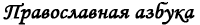 |
Памятка для желающего заказать поминовение | 1.
Поминальные записки лучше всего подать заранее: вечером или утром, по
возможности, до начала службы. Записки с просфорами принимаются до
Херувимской песни. После Херувимской можно подать записки на молебен,
панихиду или на следующую Литургию.
2. Вписывая имена, поминайте своих близких - это уже молитва.
3. В записке не принято писать более десяти имен. Если имен намного больше - подайте несколько записок.
4. Имена положено писать в родительном падеже (о здравии "кого?").
5. Первыми обычно пишут имена священнослужителей, указывая их сан,
например: "о здравии" епископа Тихона, игумена Георгия, иерея Павла;
затем свое имя и имена православных (крещеных) родных и близких. То же
относится и к запискам "о упокоении".
6. Все имена должны быть
даны в церковном написании (Иоанна, а не Ивана) и полностью (Александра,
Николая, но не Саши, Коли).
7. В записках не указываются фамилии, отчества, звания и титулы, степени родства.
8. Ребенок до 7 лет в записке упоминается как младенец - младенца Иоанна.
9. В записках «о здравии» перед именем можно упомянуть: "болящего",
"воина", "путешествующего", "заключенного". Не пишут в записках -
"страждущего", "озлобленного", "нуждающегося", "заблудшего".
10. В
записках "о упокоении" усопший в течение 40 дней по кончине именуется
"новопреставленный". В записках "о упокоении" перед именем, если
применимо, можно написать "убиенный", "воин", "приснопамятный" (в день
смерти или другой памятный день).
Записки бывают простые -
их священник читает при совершении проскомидии (подготовительная часть
Литургии), и заказные, когда имена ваших родственников поминаются
священником еще раз уже на самой Литургии.
Записки на молебен или
панихиду подаются отдельно. Время совершения молебна или другой требы
желательно согласовать со священником.
Молебен – это сугубая
молитва, совершаемая обычно после Литургии и посвящаемая Господу Иисусу
Христу, Богородице или святым угодникам Божиим. Молебны бывают о
здравии, перед началом дела, благодарственный и другие. Усопшие на
молебнах не поминаются, для сугубого поминовения усопших существует
панихида.
В храме можно заказать длительное поминание живых и усопших: сорокоуст (на 40 дней), полугодовое, годовое.
Одно поминание не исключает другого: можно одновременно подать
записку на совершаемую в этот день службу, заказать молебен и длительное
поминание.
Храм нуждается в пожертвованиях прихожан, в
том числе и за совершение треб. Сомневаясь в размере пожертвования за
длительное поминание или требу, спросите совета в свечной лавочке.
Братья и сестры! Помните, что храм и священнослужители существуют на ваши пожертвования. Образец написания записок
Voorbeeld gedenkinsgbriefjes Informatie betreffende gedenkingsbriefjes 1. Er zijn twee typen briefjes, die voor de levenden (rood) en die voor de overledenen (zwart).
2. Lever de briefjes van tevoren in, bij voorkeur voor het begin van
de dienst. Briefjes met prosforas worden tot het Cherubijnenlied
aangenomen. Na het Cherubijnenlied kunt u briefjes voor een moleben,
panachida of voor de volgende Liturgie indienen.
3. Gedenkt tijdens het schrijven van de namen diegenen die u wilt herdenken - ook dat is een gebed.
4. Het is niet gebruikelijk om meer dan 10 namen op één briefje te schrijven. U kunt beter een paar briefjes indienen.
5. Schrijf eerst de geestelijken met vermelding van hun rang op
(bijv. Bisshop Viktor, hegoemen Georgi, priester Tichon, diaken Antoni)
daarna uw eigen naam en de namen van uw orthodoxe vrienden en naasten.
Hetzelfde geldt voor briefje voor levenden en overledenen.
6. U
dient alleen de volledige voornamen (Elisabeth, niet Els; Petrus, niet
Piet) te schrijven, geen achternamen, graad van verwantschap of
titulatuur.
7. Voor de naam van een kind jonger dan 7 jaar schrijft men ‘kind’ (bijv. kind Johannes).
8. Op briefjes voor de overledenen wordt de persoon tijdens de eerste
40 dagen na zijn dood de “pasoverledene” genoemd. Op de
herdenkingsdagen (verjaardag, naamdag, dag van het overlijden) van de
overleden persoon kunt u vóór de naam “eeuwig herdachte” schrijven.
Er zijn ‘gewone’ briefjes, die tijdens het bereiden van de Offergaven
– Proskomidie (nog vóór de Liturgie) door de priester worden gelezen en
zogenaamde briefjes ‘op verzoek’, de namen op briefjes ‘op verzoek’
worden nogmaals gelezen tijdens de Heilige Liturgie.
Briefjes
voor moleben en panachida worden apart ingediend. Het tijdstip van de
moleben of panachida wordt besproken met de priester.
Moleben –
is een korte gebedsdienst, die na de Liturgie of op een andere dag
plaats vindt en gewijd is aan onze Heer Jezus Christus, de Moeder Gods
of andere Heilige(n). Tijdens een moleben herdenkt men alleen levenden.
De panachida is een dienst uitsluitend voor overledenen.
In de
kerk kunt u ook een herdenkingsbriefje ‘op verzoek’ voor een langere
tijd indienen: voor 40 dagen, een halfjaar, één jaar.
U kunt meerdere briefjes tegelijkertijd indienen: ‘gewone’ briefjes en die voor de moleben en/of panachida.
De kerk leeft van de donaties van kerkgangers en parochianen, onder
anderen voor het dienen van persoonlijke diensten zoals moleben of
panachida. Als u twijfelt hoeveel u kunt offeren voor het langdurige
herdenken van uw naasten, kunt u terecht bij de kaarsenkiosk.
Broeders en zusters, de kerk en haar geestelijke zijn in hoge mate afhankelijk van uw bijdragen! | 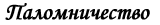 |
Удивительное это дело - Великий пост
Анатолий Бабюк
| Началось это два года назад после нашей паломнической поездки на Валаам.
Хотя если честно, то для меня всё началось ещё в том далёком забытом теперь детстве в Твери, в тогдашнем Калинине.
Поехали мы из любопытства ну и ещё из-за детского ожидания - а вдруг в
этом что-то есть? Ведь должно же быть что-то ощутимое и для нас,
простых смертных в том, что подвигало славноименитых иноков на
монашеский подвиг. Что-то ёкало глубоко-глубоко в сердце.
В
поездку на Валаам нас вовлекла наша родственница Марина. Марина часто
рассказывала нам о своей поездке в Дивеево, в Задонский монастырь и по
другим православным местам, вызывая наш искренний интерес и белую
зависть. Мы собирались в очередной отпуск к родственникам в Россию, но
как только Марина сообщила нам о том, что едет паломничать с
Солнечногорской группой на Валаам и по храмам Санкт-Петербурга, мы тут
же поменяли планы и уговорили её вписать и нас в список участников.
Поездка на 10 дней, большую часть нашего уже запланированного отпуска.
Смущенно переглядываемся... родственники нам не простят. Потом, немного
поразмыслив, мы успокоились. Родственники поймут, к тому же в оставшееся
от каникул время мы интенсивно посетим всех. Поделимся впечатлениями о
Валааме. В этот раз обойдёмся без многодневных застолий. К тому же
Марина сообщила, что один родственник – мой старший брат Александр -
составит нам компанию. Мы давно были наслышаны о Валааме, и тут всё
вдруг встало на свои места. Урррааа! Едем!
В назначенный
день вечером мы стояли на окраине Твери, на обочине трассы Москва -
Санкт-Петербург и ждали автобуса. Нас было трое – я, Светлана и старший
брат Александр. Марина ехала вместе с группой из самого Солнечногорска.
Александр как всегда балагурил, развлекая нас последними «свежими»
анекдотами. Он любил и умел рассказывать всяческую несуразицу забавно и
увлеченно. Вот и автобус. Большой и высокий туристический болид с
московскими номерами. Кидаем вещи в багажное отделение и заходим в
салон. К нам сразу поворачивается молодой человек и живо представляется –
«Иван. Наслышан о вас от Марины». Иван едет вместе с мамой Еленой,
подругой Марины.
Понемногу осваиваемся и входим в ритм
дороги. Дорога – любимое наше увлечение. Путешествовать спонтанно и
непредсказуемо, что может быть интереснее – автобус к тому же один из
наших любимых видов транспорта. Дух российской жизни незаметно
возвращает нас в другую для нас жизнь, в нашу жизнь «до». До нашего
отъезда в Голландию. Автобус мерно гудит, за окном понемногу темнеет.
Мимо пролетают знакомые сёла – Поддубки, Медное, Думаново. Микрофон
оживает привычным потрескиванием и лидер нашей группы Ирина, говорит –
"братья и сестры, давайте помолимся". Начинаются путевые молитвы:
Господу нашему Иисусу Христу, Пресвятой Богородице, святителю Николаю,
псалмы и многое другое, нам пока незнакомое и малопонятное. Где знаем -
читаем вместе, где не знаем - слушаем.
То ли от непрерывного
покачивания, то ли от мерного звука автобуса и негромкой молитвы вслух в
душе вдруг начинают оживать давно забытые ощущения. «... иже везде Сый и
вся исполняяй, сокровище Благих и жизни Подателю...» «Отче Наш, иже еси
на небеси, да святится имя Твое...» « ... радуйся Николае, Пречудный
Чудотворче...»...вдруг вспоминаю себя мелким непоседой, сидящим на
ступеньках солеи в храме Белая Троица, куда мама водила нас на службу.
Запах ладана, позвякивание кадила, густой бас дьякона читающего ектению,
молитвы Божественной Литургии. Забытое далекое детство возвращалось
властно и неотвратимо. Отворачиваюсь к окну, чтобы скрыть нахлынувшие на
меня эмоции.
Едем всю ночь, в полудрёме за окном видим огни
городов, сёл, деревень. В голове смещение пространства и времени.
Вспоминается всё подряд: школьные поездки, туристические походы с
палатками, летние каникулы в деревне и многое другое. Всё это проплывает
как в дремотном видеофильме.
Пункт нашего автобусного назначения –
Приозерск, что на берегу Ладоги. Оттуда теплоходом на Валаам. От сна
восстаём, уже проехав Санкт-Петербург, который мы так и не увидели.
Приозерск, маленький неприметный городок, постсоветская
индустриально-рыболовецкая окраина. На берегу, огороженном ржавым
забором – пристань. Вокруг горы строительного мусора – страна в
движении. Здесь выгружаемся, забираем дорожные вещички. Стоим гурьбой и
понемногу просыпаемся. Ирина - руководитель группы - сообщает последние
организационные новости. Настраиваемся на неопределенное ожидание. Когда
придёт теплоход никто не знает, да и узнать негде. На причале
информации ноль, а на воде следов нет. Бродим по лесу, судачим о том – о
сём. Александр нашёл благодарных слушателей и повёл своё бесконечное
one-man-show, мы улыбаемся – этим скучно уже не будет.
Теплоход
подкатил неожиданно и споро - неожиданно для нашего долговременного
прогноза ожидания и споро для такого маленького и хлипкого причала.
Привычный «Метеор» с синими буквами имени славного Валаамского игумена
неспешно пришвартовался. Имя Валаамского игумена, к сожалению, в памяти
стерлось. К моменту прибытия теплохода на берегу уже сформировалось
несколько паломнических групп. Кроме нас были православные с Украины и,
по-моему, откуда-то из Тулы. Ирина-гидесса спешит к капитану теплохода
со списком нашей группы в руках, краткий обмен «паролями-явками», и мы
можем проходить на посадку. С каким-то новым трепетным чувством идём по
шаткому трапу на привычный советский «метеор». Посадка прошла быстро и
без задержек. На теплоходе мы нашли местечко, оставили вещи и вышли на
палубу посмотреть, как будем отправляться. Через несколько минут мотор
теплохода заурчал, и мы почувствовали привычную дрожь под ногами. Из
серо-пасмурного Приозерска отплывали как в неведомую страну – отсюда и
навсегда. Тогда мы ещё не знали, что так всё и будет.
Стремительный бег «метеора», брызги и шелест воды из-под крыльев
теплохода, растворяющийся вдали берег - мы опять в дороге. На теплоходе
начинается православная молитвенная жизнь. Тут и там слышаться голоса
молитвы, псалмов. Начинаем ощущать себя православными и настроение от
этого радостно приподнимается. Приглядываемся друг к другу, улыбаемся,
заговариваем с братьями и сестрами из других групп. Понемногу
знакомимся, обмениваемся «путевыми заметками», расспрашиваем, кто где
уже был и какие сложились впечатления. Украинцы достали припасы,
зашуршали обертками снеди. Мы улыбаемся – сейчас начнут соблазнять
украинским «наркотиком»- салом. Украинцы хлебосольно предлагают нам
попробовать домашние яства. Кто-то пробует и нахваливает....
Наше уютное путешествие на теплоходе длилось не очень долго. Мы ещё
беседовали с попутчиками и обменивались дорожными рассказами, когда наш
водный пассаж уже прерывается возгласами – «смотрите, смотрите –
Никольский скит!» Мы прибываем! Выходим на палубу «метеора» и, держась
за поручни, смотрим на величественный храм Никольского скита, остающийся
по левому борту теплохода. Белый архитектурный узор церкви венчается
золотым куполом и православным крестом. Чуть дальше видим приближающийся
монастырский ансамбль Валаамской обители. Через какое-то время мы были
уже в бухте Валаамского монастыря. Теплоход причаливает, и мы спешим на
выход. Радостное нетерпение подгоняет паломников. Оглядевшись, и найдя
друг друга, растянувшейся колонной поднимаемся по дороге в гору. Сквозь
деревья, окружающие центральную усадьбу, видны бело-голубые башенки
Спасо-Преображенского собора Валаамского монастыря. Красота! Дух
захватывает! Девушка-послушница в платке и с приколотой на блузке
этикеткой-именем - бэйджиком - встретила нас на причале и коротко
рассказала, что нас ожидает во время нашего пребывания в обители.
Хорошая новость в том, что жить мы будем в монастырской гостинице, о
которой послушница рассказывала с видимой гордостью. Затем девушка
перечислила основные пункты нашего двухдневного пребывания на Валааме:
служба в соборе, потом скит Александра Свирского, Никольский скит, скит
Во имя всех святых, монастырское кладбище и, конечно же, службы – утреня
начинается в 6 утра!!! Кормить обещали в монастырской трапезной.
Заманчиво!
Поднимаемся в горку, проходим между густыми
многолетними деревьями. Входим в серо-мрачное здание бывшего санатория
для раненых военнослужащих, лишившихся рук и ног, который был размещен в
Валаамской обители советской властью. Здесь ещё общежитие, в котором
живут люди никак не относящиеся к монастырю. Проходим через здание и
выходим во двор, дверь слева ведёт в гостиничные покои. Повсюду
строительство. Здание справа в лесах и интенсивных строительных звуках –
визжит электропила, стучат молотки, громыхает оцинковка. Поднимаемся на
самый верх. Серьёзная входная дверь в гостиничный комплекс. Нас быстро
распределяют по комнатам. Мужчины и женщины отдельно. Комнаты
просторные, заставлены одно и двухъярусными кроватями. Красивые
деревянно-резные двери, уютный свет и добротная отделка располагают к
длительному здесь пребыванию. В коридоре нас собирает священник
монастыря и произносит приветственную речь. Говорит тепло и дружелюбно,
сразу проникаешься какой-то особой братской атмосферой. Запомнились
слова батюшки: «Кто-то из вас приехал поклониться святыням, кто-то из
любопытства, кто-то с туристическим интересом - оставьте это на время.
Господь собрал вас всех под всеми этими перечисленными предлогами с
одной только целью - напомнить вам о спасении вашей души, о том
единственном и главном деле жизни каждого человека на Земле. Разбудить в
вас ту сердечную негасимую искру Божественного присутствия, задёрнутую
тяжелой шторой повседневной суеты. Не огорчайте Его, используйте каждое
мгновение отпущенного вам здесь времени, Он любит вас всех такими, какие
вы есть. Завтра вы пойдёте в скит Во имя всех святых, там и ваш святой
ждёт встречи с вами. Он уже давно молит Господа нашего Иисуса Христа об
этой встрече. В скиту не спешите, постойте в храме. Дайте вашему святому
пообщаться с вашей измученной душой. Дайте ему прикоснуться к вашему
застывшему сердцу теплом его любви. Вот увидите - перемены в вашей жизни
не заставят себя ждать. Ни один из вас не вернётся обратно таким же,
как вошёл в скит».
...Новое незнакомое это чувство – чувство, что в
мире есть Кто-то, Кто любит тебя несмотря ни на что. Именно тебя, того,
кого ты и сам не всегда жалуешь за все приобретенные за земную жизнь
житейские свои «прелести». Дрожь прошла по всему телу... Так любила
только мама, которой давно уже нет рядом, которая давно уже в мире ином.
«В половине шестого утра вас разбудят на службу – продолжал батюшка.
Обычно будят колоколом, но в связи с разными ремонтными работами и
послушаниями, чем получиться, тем и разбудят, так что не обессудьте».
В половине шестого мы с братом Александром поднялись по нашему
«внутреннему» колоколу. Быстро собрались и отправились в собор
Спаса-Преображения. По дороге возле храма увидели дюжего инока, который
взяв в руку длинную строительную доску колотил в неё каким-то отпилком.
Мы заулыбались. Инок дружелюбно поприветствовал нас и продолжал
невозмутимо стучать в свой импровизированный «колокол» громогласно
приговаривая – Пора люди добрые, пора на службу! В храме ещё темно,
горят только лампады у икон и свечи по одной-две на подсвечниках тут и
там. Пришедшие на службу целуют иконы, ставят свечи и неслышно
передвигаются по храму. Инок на клиросе негромко читает часы.
Прикладываемся с братом к иконам Спасителя и Божьей Матери и выбираем
место, где будем стоять во время службы. Вслушиваемся в чтение часов,
которые как бы отмеряют неторопливое течение времени. Вдруг тихо
растворяются двери храма и один за другим входят монахи в черных
одеждах, в полном молчании вереницей проходят к иконам и выстраиваются в
два ряда напротив амвона, лицом друг к другу. Начинается братская
служба. Монахи чистыми ровными голосами один за другим читают молитвы.
Храм понемногу наполняется. Братия, завершив службу и шелестя одеждами,
удаляется. Откуда-то из глубины храма раздаётся негромкое пение. Мужской
голос удивительными неповторимыми переливами на церковно-славянском
языке исполняет молитвенные песнопения. Голос его словно сам по себе
плывёт по церкви, поднимается на внутренний балкон храма, плывёт над
нашими головами. Этот теплый, какой-то солнечный голос катится, словно
ручей по нашим душам, касается сердца, трогает невидимые струны, от
которых из глаз непроизвольно катятся слезы. Плечи начинают сотрясать
рыдания, что-то застарелое рвется наружу, сдерживаться больше нет сил.
После службы спешим на завтрак в трапезную. Помолившись, все вместе
садимся на длинные лавки за такой же длинный стол. Трапезная полна
паломников. Одни только что пришли, другие, уже встав со своих мест,
распевно благодарят Господа за блага земной и духовной жизни. Вкусно всё
просто неописуемо. Простая и понятная еда – хлеб, каша, рыба, чай с
плюшками. Кто-то из паломников спрашивает послушницу, накрывающую на
стол – «А что, рыбу-то разве можно?» Послушница поворачивается и
ответствует, снисходительно поглядывая – «Кушайте-кушайте, не
тревожьтесь. Вы что ж думаете, мы вам что - положим без благословения
Владыки? Вы ж в монастыре, не в Интуристе». Улыбаемся и уписываем еду за
обе щёки.
После завтрака по плану - скит Александра Свирского.
Имя этого святого нам неизвестно. До скита восемь километров, пойдем
туда на катере. Быстро собравшись, спускаемся на пристань. По дороге
замечаем степенно идущего батюшку, подходим за благословением. Батюшка
добродушно поглядывая на нас, благословляет всех, оглядывая каждого
как-то поверх головы. Поневоле оглядываюсь назад. Никого.
В скит
Александра Свирского отправляемся двумя маленькими катерами. Вся наша
группа и те, кто к нам примкнули, едва помещаемся на двух небольших
суденышках. Шумит и фыркает мотор, и мы опять огибаем остров Никольский,
направляясь к месту нашего назначения. С нами на катере оказался
священник из паломников. Он как-то отрешенно сидел на своём месте и
смотрел в тёмную воду, словно творил благостную непрерывную молитву. По
дороге девушка-послушница рассказывает нам о житии Александра Свирского.
Удивлению нашему нет предела. До нашей поездки мы даже и не слышали об
этом чудодейственном подвижнике и молитвеннике.
На острове
разбредаемся маленькими группками. Бродим по тропинкам с указателями,
пока не набредаем на келлию Александра Свирского, вырубленную в скале.
Слева - поклонный крест, по скале бежит маленький ручеёк. По одному,
сгибаясь, входим в келлию, становимся на колени и припадаем к камню,
освященному молитвенным подвигом святого. На стенке кельи на небольшом
выступе перед иконой Спасителя горят свечи. Непостижимо! В этом убогом
помещении, в котором находиться можно было разве только согнувшись в три
погибели или стоя на коленях, монах подвизался 29 лет! Для человека,
привыкшего к благам современной цивилизации просто непостижимо....
Когда все из тех, кто стоял рядом с кельей, побывали в ней, несколько
человек обратились к батюшке, что приехал с нами вместе на катере, с
просьбой отслужить молебен Александру Свирскому. Все встали на колени и
молебен начался. Батюшка читал молитвы внятно и распевно. Поклонный
крест перед нами, шум ветра в деревьях над головой и мы
коленопреклоненно внимаем словам молитвы. «... И помоги нам слабым,
немощным и малодушным, потерявшимся в волнах мирской суеты. Отче
Александре, угодниче Божий, умоли Господа нашего Иисуса Христа, дабы не
оставил нас своею Благодатию, да даст нам ум противостоять натиску
бесовскому, заполонившему всю нашу страну, всю нашу жизнь своею тёмной
силою. Трудно нам, благий отче. Сам видишь - Государя у нас нет, некому
заступиться за нас, а те правители что есть, позабыли Бога. Не остави
нас, святый отче Александре своею молитвою и заступлением...»
По
окончании молебна мы как в полусне поднялись с колен и двинулись вглубь
острова. По пути нам встретилась небольшая деревянная скитская церковь.
Зайдя в церковь, мы поставили свечи и приложились к образам Спасителя,
Божьей Матери и Александра Свирского. На выходе из храма в свечной лавке
увидели икону Александра Невского. Купили. Икона оказалась последняя.
Мы радостно переглянулись – ведь это нас ждал святой благоверный князь
Александр.
Добравшись до пристани острова Святой к назначенному
для отправления часу, мы обнаружили, что нас только половина группы.
Другая половина прибывших на катере паломников вместе со священником
осталась в келье Александра Свирского, и оставшийся богомольный народ
явно не торопился к причалу. Капитан дал несколько предупреждающих
гудков, потом один прощальный, и мы отправились обратно в центральную
усадьбу. Капитан катера проворчал что-то невнятное, потом громко
добавил, что оставшихся подберёт другой катер через полтора часа, а он
не может больше медлить, потому что его ждут паломники с другого
острова. Оставшиеся на острове Святом вернулись поздно вечером.
Спокойные и умиротворенные. Они говорили, что очень благодарны Господу
за то, что у них была возможность в тишине помолиться в келье Александра
Свирского.
В скит Во имя всех святых или Белый скит пошли одни
мужчины. Женщинам туда по уставу монастыря вход закрыт. Женщины остались
за оградой, в ожидании мужчин, которых они попросили принести им воды
из колодца, что находится на территории скита. По рассказам
осведомленных паломниц вода эта обладает особым целебным свойством.
Молча зайдя в церковь Белого Скита, мы встали, обращаясь с молитвой
каждый к своему святому. В тишине и молчании текло время. Потом глубоко
вздохнув, каждый крестился и тихо выходил во двор. Во дворе мужчины
образовали живую очередь доставки колодезной воды. Одни опускали ведро,
другие подставляли бутылки, флаконы и другие ёмкости. Вся вода из
источника была с благодарностью воспринята женской частью группы.
Валаамские дни пролетели быстро и легко. Последующие события: посещение
игуменского кладбища, могилы игумена Дамаскина, Никольского скита и
пешая прогулка на остров Никольский по небольшому мостику, всенощное
бдение в Спасо-Преображенском храме - сменяли друг друга плавно и
естественно. Днём последнего дня пребывания на Валааме мы поблагодарили
нашего экскурсовода-послушницу. Высказали ей все теплые слова
признательности.
После полудня перед нашим отъездом небо начало
хмуриться. Свинцовые облака нависли над куполами монастыря. Кто-то
проговорил - "рано ещё, не надо бы нам уезжать, да и Господь вон
хмурится". Уезжать явно не хотелось, но, увы, вариантов у нас на тот
момент не было. Дни паломнической жизни в монастыре расписаны по часам.
Гостиница готовилась к приёму следующих групп. Пора отправляться. С
дорожными сумками мы стоим на монастырской пристани, дождь хлещет нас
упругими струями. Мы прячемся и жмёмся к разным строениям, к часовенке
неподалёку от пристани, к навесам торговых рядов, хозяева которых
обеспокоенно сворачивали свою торговлю. Наконец нам дали сигнал к
посадке. Наш проверенный «метеор» подрагивал возле пристани. Ветер
крепчал и рвал пожитки из наших рук. Загораживаясь от потоков воды с
небес кто чем может, мы прорывались внутрь теплохода. Капитан показался
из рубки корабля, озабоченно поглядывая на небо, на горизонт, что-то
проговорил, показывая рукой на тяжелые дождевые облака стоящей рядом с
рубкой старшей нашей группы Ирине. Ирина согласно и как-то испуганно
покивала головой. Через несколько минут мы отчалили. Капитан обратился к
пассажирам по громкой связи. Сказал, что погода очень сложная и вдали
от берега может быть опасно. «Будем прорываться», - сказал он
напоследок. Паломный народ, сидящий в салоне теплохода, состоящий в
основном из женщин, испуганно приуныл.
Жестокий шторм обрушился
на наш «метеор» сразу, как только мы вышли из-под прикрытия берегов.
Теплоход, набрав скорость, поднялся на водные крылья и волна била в
днище так, что сотрясались мы все, вместе с подпрыгивающими вещами.
Кто-то истерически ойкал, кому-то их женщин стало дурно и вокруг неё
забегали побелевшие от страха подруги. «Метеор» надрывно завывал,
выскакивая из волны, удары в днище стали ещё сильнее. Чувство было
такое, что какой-то огромный разухабистый молот бухал снизу, как нам
тогда казалось прямо под нашими ногами. Корпус корабля трещал и
вздрагивал как огромное рассерженное животное. Понемногу нами начал
овладевать страх. В такой переплёт стихий мы не попадали ещё ни разу.
Перекрикивая рёв волн, капитан прокричал по громкой связи, что сил
теплохода не хватает, чтобы прорваться через штормовой фронт, и мы
возвращаемся обратно. Нос корабля стал поворачивать вправо. Всё быстрее и
быстрее и вдруг весь теплоход вздыбился своим левым бортом и начал
заваливаться направо. Побелевший капитан судорожно крутил штурвал, мы,
не отрываясь, смотрели на него, ожидая развязки.
Команда
теплохода в мокрых прорезиненных костюмах носилась по судну, выкрикивая
какие-то отрывистые команды. Как нам показалось, капитан корабля в
последний момент переломил фатальное заваливание судна, и мы
развернулись левым бортом. Ещё несколько тревожных минут и мы опять под
защитой берегов острова. Причалив к монастырской пристани, паломники
стремительно выскакивали из теплохода. Казалось, что всего в несколько
секунд все стояли на пристани с вещами и готовые бежать куда угодно,
подальше от перенесенного кошмара. Капитан вышел из рубки и развёл
руками. Мы понимающе покивали головами. Слава Богу! Слава Богу! Слава
Богу!
Мы все понимали, что перевернись мы даже в километре от
острова, у нас просто не было бы шансов вплавь выбраться из этой
катавасии стихий. Я вдруг вспомнил сцену из недавно просмотренного
фильма – «Иисус». Перепуганные апостолы панически борются с парусами и
рулём рыбацкой лодки, пытаясь преодолеть удары разбушевавшейся стихии.
Тогда я скептически улыбался, снисходительно поглядывая на испуганных
учеников Господа. Теперь мой скепсис и улыбку как волной смыло.
Апостолов вызволил Господь, нам же по нашим грехам остается только
надеяться на Его всепрощающее милосердие.
Немного придя в себя от
пережитых волнений, начинаем размышлять, где будем ночевать и как быть
дальше. Вся наша последующая программа трещала по швам. Ирина горестно
вздыхала, сжимая в руках малополезный теперь мобильный телефон. Нашу
поездку на остров Коневец она уже отменила. Куда теперь? Несколько минут
спустя узнаем, что продолжение нашей штормовой эпопеи следует. Нас
пересаживают на другой теплоход, без водных крыльев, который может
пройти сквозь штормовой фронт.
Опасливо пересаживаемся в другой теплоход, обреченно смотрим на удаляющийся берег – «Господи, прости и помилуй»!
Эта попытка почти повторила предыдущую. Неутихающий шторм ударил, как
только мы вышли из-под берегов Валаама. На том самом опасном пятачке
нашего предыдущего разворота корабль как бы застывает на месте. Ни
вперёд, ни назад. Мотор надрывно гудит, и всё судно судорожно
сотрясается от напора волн. Через несколько минут становится ясно – нам
не прорваться. Капитан по громкой связи подтверждает наш диагноз и
сообщает, что он поворачивает судно на Сортавала - городок на карельском
берегу Ладоги недалеко от Финляндии.
Повернув на Сортавала, мы
не ощутили облегчения. Шторм набрасывался на теплоход то с кормы, то
сбоку, играя нами как игрушкой. Волны с пугающим шумом били в окна
салона. Вдруг кто-то из паломниц предложил – давайте читать акафист
Николе Чудотворцу. Сначала тихо и испуганно, затем всё громче увереннее
начали раздаваться знакомые строки славословия в честь любимого в народе
святого. Всё громче и громче звучала молитва, лица прояснялись, глаза
веселели. Страх начал отступать. После неистовой и казавшейся
бесконечной вакханалии природы начал отступать и шторм. Спустя какое-то
время мы уже шли по спокойным ленивым волнам Ладоги. Перенесенные
штормовые мгновения казались нам выдумкой напуганных путешественников.
Причалив в Сортавала, мы с изумлением поглядывали друг на друга. Было ли
это все с нами на самом деле или всё это какое-то мрачное наваждение.
Водители нашего автобуса отказались ехать из Приозёрска в Сортавала,
сославшись на плохую дорогу. Ирина дозвонилась до них, как только мы
сошли на берег. За нашими украинскими попутчиками автобус пришёл,
украинцы созвонились со своими водителями ещё по дороге в Сортавала.
Стало ясно, что наши водители отказались приехать за нами по какой-то
другой причине. Собравшись вместе стали думать и гадать, как добираться
до Приозерска. Ирина узнала номер телефона таксопарка и выяснила, что
нас могут отвезти таксисты. По цене договорись оптом. Такси подъезжали
быстро, мы садились в них по четыре человека и машины уезжали в ночь.
Водитель нашей машины оказался человеком немногословным, но
супермузыкальным и совершенно непробиваемым. Музыка ревела, выплёвывая
попсовый текст в духе молодёжного рэп-ритма. Автомобиль нёсся по
петляющему в лесу полотну дороги в полной темноте. Ни столбов освещения,
ни признаков жилья. На наши просьбы ехать чуть тише водитель никак не
реагировал. Промчавшись на полной скорости по одному из многочисленных
ухабов, мы услышали металлический лязг и два хлопка, машина запетляла. К
нашему великому облегчению водитель сумел остановиться. Выбравшись
наружу, мы увидели, что оба колеса с правой стороны автомобиля спущены.
Мы переглянулись - похоже, что наша ладожская «штормовая вакханалия» не
отпускала нас и тут.
В машине не оказалось ни одного запасного
колеса. Наш водитель связался по рации со своими коллегами и спустя
несколько минут примчались две машины и наши пробитые колеса поменяли.
Дальше ехали в тишине. Радио водитель выключил. Часам к пяти утра
подъехали к Приозерску. В центре городка на площади возле нашего
автобуса ужа собралась вся группа. Ирина пошла будить водителей, но
процесс этот оказался непростой. Хмурые, раздраженные они прошли в
кабину и через несколько мгновений открылись двери. В автобус заходили
как в старый добрый дом. Ирина пересчитала всех присутствующих по
головам, и мы отправились. Впереди - Санкт-Петербург.
После всех
переживаний предыдущего дня все сразу провалились в дорожный сон. Спали
до самого Питера. Просыпаться начали тогда, когда автобус остановился на
стоянке справа и позади собора иконы Казанской Божией Матери. Из
автобуса выходили как-то неуверенно, трогая ногами асфальт.
Посещение кафедрального собора не входило в нашу паломническую
программу, но Ирина очень хотела, чтобы мы поклонились Казанской иконе
Божией Матери. Она рассказала нам о судьбе этой замечательной
православной святыни, обретенной после пожара 1579 года в Казани, и о её
дальнейшей загадочной судьбе. Мы с радостью согласились. Было рано,
служба ещё не началась. В огромном храме тишина, горят свечи и лампады.
Неслышно подходим к иконе, потом стоим, обращаясь в молитве к
Богородице.
И тут я вдруг понимаю, что тогда в Приозерске, когда
мы на теплоходе отправлялись на Валаам, мы действительно отчалили
навсегда. Навсегда от той нашей запутанной и смутной жизни блуждания в
потёмках. От отчаяния и безнадежности, душевной пустоты и повседневной
всеразрушающей суеты, от бессонных мучительных ночей.
Мы причалили к другому берегу. К берегу Веры, Надежды и Любви, к берегу Спасения.
Молча возвращаемся к автобусу.
В автобусе нас уже ждут. Едем в Александро-Невскую лавру на службу.
Александро-Невская лавра встретила нас многолюдьем. Православный
народ спешил к началу Литургии. Из открытых дверей магазинчика, что у
ворот лавры, благоухает монастырским хлебом. Спешим внутрь вместе со
всеми. Служба ещё не началась, и мы успеваем к исповеди. Литургия в
Александро-Невской лавре начинается торжественно и степенно. Возгласы
служащего священника сменяются пением хором антифонов. Храм наполняется
благозвучием православного Богослужения. Звучит ектения, благоухает
ладан. Торжественно раскрываются царские врата. От всей этой красоты и
благолепия мы просто почувствовали, как что-то раскрывается у нас в
душах.
После службы мы зашли в хлебную лавку у ворот лавры и
купили мягкий, душистый монастырский хлеб. Вкусныыыый! Просто объеденье!
У Александро-Невской лавры в автобусе нас уже ждал наш гид Олег.
Старшая нашей группы Ирина рассказывала нам о том, как Олег сопровождал
предыдущую группу и как все были довольны его рассказами об истории
Санкт-Петербургских храмов, святых, подвизавшихся в земле петербургской,
истории города, знаменитых петербуржцах и многом другом.
Наши дни в Санкт-Петербурге пролетели просто как один миг.
Подворье Леушинского монастыря и трагичный рассказ о затопленной
православной святыне. Затем - служба в храме женского монастыря Иоанна
Кронштадтского, собор Николо-Богоявленский Морской и икона Николая
Чудотворца, подаренная храму Николаем Вторым, Новодевичий монастырь и
монастырское кладбище.
Мы были просто ошеломлены. Вся эта
красота, вся эта величественно - трагичная православная жизнь была здесь
и тогда, когда мы ещё жили в Советском Союзе. Эта наша земная
православная жизнь держалась на плечах удивительных людей, проявлявших
истинное мужество и героизм, вдохновляемые глубокой и трепетной верой в
Господа.
Мы словно заново открывали страну, в которой мы, как нам тогда казалось, жили.
Сколько же времени нашей бесценной жизни и тяжелых испытаний нам
понадобилось, чтобы мы наконец проснулись к этой истинной, православной
жизни.
Воистину терпение Господа безмерно!
На ночлег мы
приехали в церковь Святого Илии Пророка. Маленькая старинная церковь,
рядом подворье. Общая трапезная, неприхотливые спартанские условия, нас
всё это уже не волновало. Мы жадно впитывали эту пропущенную нами и
такую близкую нам жизнь. Наш автобус прилично задержался пробираясь по
насыщенному движением городу, и когда мы вошли в трапезную подворья
оказалось, что предыдущая группа уже умяла весь наш ужин. Разочарование
было написано на наших лицах. От голода и усталости мы почти падали. У
дальней стены трапезной стоял накрытый стол, за которым сидел настоятель
храма с гостями. Настоятель храма поднялся и сказал, что еду нам сейчас
приготовят, а чтобы нам было веселее ждать ужина его гостья, солистка
Мариинского театра, споёт для нас что-то красивое. Яркая молодая женщина
поднялась из-за стола, подошла к пианино и легко и просто исполнила
произведение Алябьева «Соловей», потом что-то лиричное и ещё что-то
веселое. Настроение наше видимо улучшилось, и когда мы начали
аплодировать и просить продолжить концерт, принесли наш ужин. Настоятель
храма поблагодарил от всех нас свою гостью и благословил нашу трапезу.
На следующий день наш ожидала поездка в храм Казанской иконы Божией
Матери в Вырице. К мощам Серафима Вырицкого, духовника
Александро-Невской лавры.
Разные и сложные ощущения от совместного
следования к местам паломничества. Незнакомые люди. Малознакомый образ
паломнической жизни. Акафисты в автобусе, молитва перед едой. Утреннее и
вечернее молитвенное последование. Непонимание и недоумение сменялось
благоговением и внутренней тишиной, естественность и простота молитвы и
благостная соборность службы сменяли неудобство и скованность пребывания
в этом новом для нас качестве – паломников.
К концу поездки мы
из "номинальных" христиан плавно и естественно превратились в
православных христиан. Это чудо для меня необъяснимо.
Это всё
равно, что сидеть всю жизнь на берегу реки и рассуждать о её значении и
вдруг в один момент решиться и войти в реку и поплыть и ощутить её
прохладу и утоление. Всё равно как праздно сидеть на камне мечтательно
размышляя о небе, о полётах и вдруг взмыть ввысь и ощутить рокот горнего
мира и упругость вышнего ветра.
Вспомнил притчу:
" На
берегу стоят люди и рассуждают о плавании. Те, кто плавал, говорят - "О,
это такое наслаждение, парить в воде, уходить на глубину и взмывать к
поверхности, качаться на волнах и рассекать их руками". Другие, кто
никогда не решался войти в воду, говорят - Ну нет. Это неправда. Вода
холодная и неприятная, да и чувствуешь себя в ней неуклюжим бегемотом.
Ничего хорошего.
Пока вдруг кто-то из никогда не плававших не
решается и не входит в воду и плывёт. Фыркает, барахтается, но плывёт.
Потом измученный своим первым опытом выходит он на берег и говорит -
"Это не то, что говорили первые и не то что, говорили другие". Это
что-то совсем другое... но теперь я знаю, ЧТО это такое и что я с этим
буду делать"
Первый наш Великий пост мы прошли "номинально", не
имея никакого опыта в этом удивительном восхождении по Лествице.
Остались только впечатления о каноне Андрея Критского, Страстной Седмице
и Благословенной Пасхе, празднике Воскресения Господня.
Небольшая уютная роттердамская церковь, заполнена верующими как никогда.
В церкви горят только свечи. Читается книга Деяний святых апостолов.
Сменяя друг друга, прихожане читают священный текст о сошествии Святого
Духа на апостолов в день Пятидесятницы, о Церкви Христовой; неспешно
звучит рассказ о Великом Чуде - пришествии Господа во плоти на нашу
землю, о Его доброте и кротости, великодушии и безграничной Любви. В
церкви - тишина и скорбь. Скорбь о Великой Жертве Господа за нас, за
всех людей, за всё человечество. Нарастает движение службы. Всё громче
звучат песнопения, священники и прислужники переоблачаются в праздничные
одежды и вдруг, как взрыв, как раскрытие небес звучит – «Христос
Воскресе!» И радостный мощный ответ: «Воистину Воскресе!»
Всё
громче и громче звучит радостный возглас, в котором весь смысл спасения
рода человеческого - Христос Воскресе! Christos Anesti! Christ is Risen!
Christus is opgestaan!
Трудно передать все чувства и ощущения,
проносящиеся в ошеломленном сознании. Невозможно рассказать скептичному
уму, что это значит - Великий пост, путь Покаяния, уготованный нам
Спасителем.
Есть только одно средство почувствовать, что это
значит - оставить бесцельное сидение на берегу Реки Жизни и войти в
Живую Воду Спасения.
30
мая в Неделю Всех святых Литургию в нашем храме совершит архиепископ
Брюссельский и Бельгийский, управляющий Гаагской и Нидерландской
епархией Симон. Начало богослужения в 10.30. В этот же день, если
позволит погода, состоится ежегодный приходской праздник под открытым
небом - приходской пикник. Билеты можно приобрести в нашей свечной
лавке. Подробную информацию о пикнике можно найти на нашем сайте
www.ruskerk.nl Настоятель
Редакция благодарит Анатолия Бабюка, предоставившего свой материал для этого номера «Православного собеседника».
С нетерпением ждем от прихожан и читателей новых рассказов, а также вопросов, комментариев и предложений.
Материалы принимаются в электронном формате.
Рукописи не рецензируются и не возвращаются.
Мнение редакции может не всегда полностью совпадать с мнением авторов материалов.
При использовании авторских материалов нашего издания просьба ссылаться на «Православный собеседник».
Редакционная коллегия:
Протоиерей Григорий Красноцветов
(главный редактор)
Алевтина Захарова
(детский редактор)
Виктория Черепнина
Юлия Эссенберг
(выпускающий редактор)
| |
|
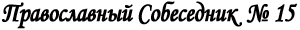
Осень 2008 г. ЧИТАЙТЕ В НОМЕРЕ: Вы можете скачать Приходской Листок
в формате "pdf" для последующей печати.
Этот
выпуск «Православного собеседника» был уже готов, когда пришла скорбная
весть о кончине Святейшего Патриарха Московского и Всея Руси Алексия
II. Светлой памяти почившего Патриарха мы посвятим специальный выпуск
нашего издания. Просим всех прихожан молиться о упокоении раба Божиего
новопреставленного Святейшего Патриарха Алексия.
Упокой Господи душу его в селениях праведных!
5 сентября исполнилось 30 лет со дня смерти митрополита Ленинградского и
Новгородского Никодима. Владыка был моим крестным. Память, несмотря на
прошедшие годы, живо сохраняет минуты общения. К сожалению, я не смог в
эти дни быть в Санкт-Петербурге, где состоялись заупокойные службы и
Конференция памяти митрополита Никодима. В ней приняли участие ближайшие
сподвижники, ученики владыки. Среди них митрополит Крутицкий и
Коломенский Ювеналий, митрополит Смоленский и Калининградский Кирилл, и
многие другие архипастыри, пастыри и миряне. Святейший Патриарх Алексий
прислал участникам Конференции свое приветствие:
Преосвященные архипастыри, боголюбивые пастыри, дорогие братья и
сестры, прибывшие молитвенно почтить память Высокопреосвященного
митрополита Ленинградского и Новгородского Никодима!
Сегодня исполнилось 30 лет со дня кончины выдающегося русского
иерарха, годы служения которого выпали на один из самых драматических
периодов церковной истории. Во время гонений, имевших целью истребить
веру, Церковь и само знание о них в нашем народе, Владыка Никодим
проявил себя ревностным окормителем стада Христова, жертвенно любившим
своих пасомых.
В заботе о подготовке
образованного, преданного пастырскому долгу духовенства почивший
архипастырь много внимания и сил отдавал Ленинградским духовным школам.
Благодаря его трудам они были спасены от закрытия. Владыка часто
выступал перед учащимися с лекциями по различным вопросам современной
церковной жизни. Он оставил множество учеников и духовных
последователей, среди которых мы ныне видим маститых иерархов,
ревностных пастырей, глубоких богословов и церковно-общественных
деятелей.
Находясь на посту председателя Отдела
внешних церковных сношений и возглавляя комиссию Священного Синода по
вопросам христианского единства, митрополит Никодим добился заметного
углубления межправославных связей. Его личной заслугой является
сохранение русского монашества на Афоне. Он придал творческий динамизм
отношениям Русской Православной Церкви с инославными конфессиями и
нехристианскими религиями. В своих дискуссиях с их представителями он
всегда проявлял открытость к диалогу любви и одновременно — православную
принципиальность. Во многом именно международные связи, привлекавшие
внимание верующих всего мира к гонениям на Церковь в Советском Союзе,
помогли ей выстоять в трудные времена.
Своим
служением Владыка Никодим во многом положил начало
церковно-государственному и церковно-общественному диалогу в
послереволюционной России, который ныне получил развитие во многом
благодаря созданной им школе пастырства и православной общественной
мысли.
Митрополит Никодим явил вдохновляющий
пример жертвенного служения делу Божию. Он не щадил себя даже во время
болезни, которая привела к его кончине в возрасте 48 лет. Прожив
короткую, но яркую жизнь приснопоминаемый Владыка все свои силы посвятил
укреплению Русской Православной Церкви. Его труды во многом определили
ее жизнь не только в прошлом, но и в наши дни. Многие его мысли и
устремления сохраняют актуальность и сегодня. Среди них — особая забота о
единстве Церкви, о защите ее свободы и духовной самобытности. Верю, что
Господь принял Своего верного раба и упокоил его в селениях праведных.
Вечная ему память.
+АЛЕКСИЙ, ПАТРИАРХ МОСКОВСКИЙ И ВСЕЯ РУСИ
Советуем посмотреть видеозапись конференции в интернете по ссылке http://orthomedia.ru/index.php?option=com_content&task=blogsection&id=26&Itemid=108
или
http://sobornoedelo.ru/browseVideo.php?&page=2&per_page=10&albumID=102
Памяти митрополита Никодима был посвящен
сентябрьский выпуск журнала Санкт-Петербургской епархии «Вода живая».
Материалы журнала на сайте http://journal.aquaviva.ru/2008/09/voda_09.html
28 ноября по новому стилю (15 ноября по старому) начался Рождественский пост.
Заговенье на Рождественский пост приходится на день памяти святого
апостола Филиппа (27 (14) ноября), поэтому его еще называют Филипповым.
Рождество Христово — одно из величайших событий
Священной истории, совершенно особенный праздник. Чтобы понять,
почувствовать это, необходимо отвлечься по возможности от всего
житейского, суетного, дать духу, душе, хотя бы в какой-то мере
освободиться от давления плоти. К духовному торжеству необходимо
подготовиться. И такой подготовкой становится пост — время воздержания в
пище, удаления от развлечений, земных удовольствий, время покаяния.
Благодаря посту в воспрянувшей душе высвобождаются силы для общения с
Богом.
Рождественский пост менее строгий, чем
Великий, поэтому, по уставу, положена рыба и в субботу, и воскресенье, и
все большие праздники. Меру поста верующие определяют со священником,
ослабляется пост для больных, беременных, детей.
Но главный смысл поста – не в голодании. “Истинный пост есть удаление
зла, обуздание языка, отложение гнева, прекращение клеветы, лжи и
клятвопреступления", - напоминает святитель Иоанн Златоуст. Цель его -
помочь людям стать хоть немного более хорошими или хоть немного менее
плохими.
Когда к одному старцу пришла женщина,
работавшая в системе общепита, и пожаловалась, что по долгу службы ей
нужно пробовать все блюда, в том числе и скоромные. На это старец
ответил ей: «Все ешьте. Только людей не ешьте».
Простить застарелую обиду и примириться с обидчиком, подавить в себе
раздражение, еще раз удержаться и не сказать о ком-то плохо, перебороть
себя и все-таки не обсудить коллегу, уделить побольше времени родителям,
посмотреть по телевизору только программу новостей - вот такими
маленькими шажками и проходится весь путь поста, а когда оступится
человек, ведь без Бога душу не очистишь - значит - на исповедь, каяться
перед Ним за все ошибки, чтобы потом было легче исполнить все
невыполнимое.
Рождественский пост отличается от
Великого поста, он не омрачен воспоминанием о трагических событиях из
жизни Спасителя - он весь как восходящая и возрастающая радость.
По правилам воздержания Рождественский пост приближается к посту апостольскому (Петрову).
Уважаемые прихожане!
Русская школа «Матрешка» в г. Роттердаме продолжает
набор (взрослых) желающих изучать русский язык как иностранный. В этом
(2008-09) учебном году работают две группы: начального и среднего
уровня. Занятия проходят по субботам. Начало в 11.00. Запись в группы по
телефону: 06 27407856
Первое место в числе богослужебных книг занимают: Евангелие, Апостол и Псалтирь. Эти книги взяты из Священного Писания - Библии, - потому называются священно-богослужебные.
Затем следуют книги: Служебник, Часослов, Требник,
Книга молебных пений, Октоих, Минея месячная, Минея общая, Минея
праздничная. Триодь постная, Триодь цветная, Типикон или Устав,
Ирмологий и Каноник. Эти книги составлены на основании Св. Писания и Св.
Предания, отцами и учителями Церкви. Их называются
церковно-богослужебные.
Евангелие
- это Слово Божие. Оно состоит из четырех первых книг Нового Завета,
написанных евангелистами Матфеем, Марком, Лукой и Иоанном. Евангелие
содержит в себе описание земной жизни Господа нашего Иисуса Христа: Его
учение, чудеса, крестные страдания, смерть, славное воскресение и
вознесение Его на небо. Богослужебное Евангелие имеет ту особенность,
что кроме обыкновенного деления на главы и стихи, делится еще на особые
отделы, называемые "зачалами". В конце книги помещается указатель: когда
читать то или другое зачало.
Апостол
- так называется на церковном языке книга, содержащая следующие книги
Нового Завета: Деяния Святых Апостолов, соборные послания и послания
апостола Павла. Книга Апостол так же, как и Евангелие, разделена, кроме
глав и стихов, на "зачала", с указанием в конце книги, когда и какое
читать "зачало".
Псалтирь -
книга пророка и царя Давида. Так называется она потому, что большинство
псалмов в ней написаны святым пророком. Давидом. В этих псалмах святой
пророк открывает перед Богом свою душу, все свои радости, печали, кается
в содеянных грехах, прославляет бесконечные Божие совершенства,
благодарит Его за все Его милости, благодеяния, просит помощи во всех
своих начинаниях. Вот почему Псалтирь и употребляется при богослужении
чаще всех других богослужебных книг.
Книга
Псалтирь для употребления при богослужении разделена на двадцать частей,
называемых "кафизмами", а каждая "кафизма" делится на три части -
"славы".
Кроме простой Псалтири есть еще
Псалтирь "следованная". Она содержит в себе три приложения: Часослов,
тропари и кондаки, выбранные из всех богослужебных книг, и все
молитвословия, которые должны читаться приступающими к святому Таинству
Причащения.
Служебник - книга
для священника и диакона. Она содержит в себе порядок совершения
вечерни, утрени и Литургии. В конце служебника помещены: отпусты,
прокимны, величания и месяцеслов, т. е. список святых, ежедневно
воспоминаемых Церковью.
Архиерейский служебник
(или как он называется - "Архиерейский чиновник") отличается тем, что
содержит в себе еще чин освящения антиминса и чины посвящения в чтеца,
диакона, священника и др.
Часослов
- книга, служащая руководством для чтецов и певцов на клиросе. Часослов
содержит в себе порядок всех повседневных служб, кроме Литургии.
Требник
- книга, заключающая в себе порядок совершения святых Таинств (кроме
таинств Причащения и Священства) и других треб - чин отпевания и
погребения усопших, чин освящения воды, молитвы по рождении младенца,
при наречении имени младенца и воцерковлении его и др.
Книга молебных пений содержит чинопоследования молебнов (молебных пений) на разные случаи жизни.
Октоих или Осмогласник
заключает в себе песнопения (тропари, кондаки, каноны и проч.),
разделенные на восемь напевов или "гласов". Каждый глас, в свою очередь,
содержит в себе песнопения на всю седмицу (неделю), так что службы
Октоиха повторяются раз в восемь недель. Разделение церковного пения на
гласы совершено было знаменитым песнопевцем греческой Церкви св. Иоанном
Дамаскиным (VIII в.). Ему приписывается и составление Октоиха, хотя
надо заметить, что в составлении Октоиха принимали участие св. Митрофан,
епископ Смирнский, св. Иосиф песнописец и другие.
Минея Месячная
содержит в себе молитвы в честь святых на каждый день года и
торжественные службы на праздники Господские и Богородичные,
приходящиеся на определенный день месяца. По числу 12 месяцев она
разделяется на 12 отдельных книг.
Минея Общая
заключает в себе песнопения общие целому лику святых, например, в честь
пророков, апостолов, мучеников, преподобных и проч. Она употребляется
при богослужении в том случае, если какому-либо святому не составлено
отдельной службы в Минее Месячной.
Минея Праздничная содержит в себе службы великих праздников, извлеченные из Минеи Месячной.
Триодь Постная
содержит в себе молитвословия на дни Великого Поста и на
приготовительные недели к нему, начиная с недели Мытаря и Фарисея и до
Пасхи. Слово: "Триодь" греческое и означает трипеснец. Такое название
эта книга и следующая за ней "Триодь Цветная" получили потому, что в них
имеются неполные каноны, состоящие всего из трех песней, вместо обычных
девяти песней канона.
Триодь Цветная заключает в себе песнопения со дня Св. Пасхи до недели Всех Святых (т. е. до 9-го Воскресения, считая со дня Пасхи).
Типикон или Устав
содержит в себе подробные указания в какие дни и часы, при каких
богослужениях и в каком порядке нужно читать или петь молитвословия,
содержащиеся в служебнике, часослове, октоихе и других богослужебных
книгах.
Ирмологий содержит в
себе избранные из различных канонов песнопения, называемые ирмосами
(ирмос - это начальное песнопение каждой песни канона).
ЕКТЕНИИ
Во время богослужения мы часто слышим ряд молитвенных прошений,
произносимых протяжно, медленно, возглашаемых диаконом или священником
от лица всех молящихся. После каждого прошения хор поет: "Господи,
помилуй!" или "Подай, Господи". Это так называемые ектении". Ектения
слово греческое и означает "прилежное моление".
Наиболее употребительных ектений пять:
1. Великая или мирная ектения, которая начинается словами: "Миром
Господу помолимся". Она имеет много молений и прошений, и после каждого
из них поется: "Господи, помилуй!"
2. Малая ектения есть сокращение великой. Она начинается словами: "Паки
и паки (т. е. еще и еще) миром Господу помолимся!" и имеет всего два
прошения. 3. Сугубая
ектения начинается словами: "Помилуй нас, Боже, по велицей милости
Твоей, молимтися, услыши и помилуй". На каждое прошение сугубой ектении,
хор отвечает троекратным "Господи, помилуй!" Поэтому и сама ектения
называется сугубой, что значит усиленной.
4. Просительная ектения начинается словами: "Исполним (доведем до
полноты, принесем во всей полноте) утреннюю (или вечернюю) молитву нашу
Господеви" (Господу). После каждого прошения просительной ектении, кроме
первых двух, хор поет: "Подай, Господи!"
5. Заупокойная ектения состоит из прошений ко Господу о том, чтобы Он
упокоил в Царстве Небесном души умерших, простив им все согрешения.
Каждая ектения оканчивается возгласом священника, прославляющим Пресвятую Троицу.
ВСЕНОЩНОЕ БДЕНИЕ
Вечернее богослужение, совершаемое накануне воскресных дней и больших
праздников, называется всенощным бдением (От слов "всю ночь", потому что
в некоторых монастырях так она и совершается - с вечера до утра).
Всенощные состоят из трех богослужений: Вечерни, Утрени и Первого часа.
На всенощных, больше чем на литургиях, чувствуется дух данного
праздника, потому что большинство молитв посвящены именно ему. В то
время как гражданский день начинается после полуночи, церковный день
начинается накануне, с вечера. В обычае с вечера начинать новый день
сказывается библейская традиция, согласно которой творение мира началось
с вечера: "И был вечер, и было утро, день один" (Быт. 1:5).
Молитва всегда занимала важное место в жизни верующего
человека. Жизнь древних праведников протекала в атмосфере богослужений
ветхозаветного храма. Естественно, поэтому, что многие христианские
традиции, связанные с общественной молитвой, как то - устройство храма,
священнические облачения и принадлежности храма, псалмы и молитвы,
читаемые на богослужениях - восходят к дохристианским временам. От
апостолов мы унаследовали традицию посвящать молитве известные часы дня,
в особенности вечером и утром. С веками, общественные молитвы,
совершаемые в определенное время, приняли богослужебную структуру и
стали именоваться Вечерней, Утреней, Часами, Повечерием, Полунощницей и
т.д.
Порядок Всенощной, как и других
богослужений (описанных в книге "Типикон"), начал принимать свою
современную форму еще в 6-м веке в обители св. Саввы Освященного
(находящейся в 20-ти километрах на юго-восток от Иерусалима). Дальнейшее
свое развитие Всенощная получила в Студийской обители (около
Константинополя) в 8-м веке, будучи усовершенствованна трудами
нескольких константинопольских патриархов к концу 11-го столетия. С
принятием христианства, устав Всенощной и других богослужений из
Византии перешел на Русь.
1. Вечерня
Всенощная впитала в себя как ветхозаветные, так и
новозаветные элементы. На первой части Всенощной - Вечерне, вспоминаются
важнейшие события ветхозаветного времени: сотворение мира и жизнь
первых людей в раю, их грехопадение и раскаяние; затем - надежда людей,
согласно обещанию Божию, на пришествие Спасителя. Вторая часть Всенощной
– Утреня - напоминает преимущественно о новозаветных временах: о
Рождении Спасителя, явлении Его в мир на проповедь, о Его славном
Воскресении и о других событиях в жизни Церкви.
Всенощная начинается открытием царских врат.
Священник с дьяконом молча кадят престол и весь алтарь, и клубы дыма
кадильного наполняют алтарь. Это каждение знаменует начало творения
Богом мира: «В начале сотворил Бог небо и землю. Земля же была безвидна и
пуста». И Дух Божий носился над первозданным веществом, вдыхая в него
живоносную силу (смотри 1-ю главу книги Бытия).
Священник становится перед престолом и прославляет Создателя словами:
"Слава Святей и Единосущней, и Животворящей, и нераздельней Троице,
всегда, ныне и присно, и во веки веков". На ответное "Аминь"
(по-еврейски: Истинно так!) поется: "Приидите,
поклонимся Цареви нашему Богу. Приидите, поклонимся и припадем Христу,
Цареви нашему Богу. Приидите, поклонимся и припадем Самому Христу,
Цареви и Богу нашему. Придите, поклонимся и припадем Ему"
Ибо, по слову апостола, именно через Сына Божия все начало существовать
и жить (Иоан. 1,3). Хор подхватывает этот призыв священника
торжественным пением 103-го псалма, прославляющего Творца: Благослови душе моя, Господа! Благословен еси, Господи!
Господи, Боже мой, возвеличился еси зело (весьма).
Благословен еси, Господи.
Во исповедание и в велелепоту облеклся еси (Ты облекся в славу и великолепие). Благословен еси, Господи.
Посреде гор пройдут воды (Среди гор текут воды). Дивна дела Твоя, Господи.
Вся премудростию сотворил еси. Слава Ти, Господи, сотворившему вся.
Во время пения священник совершает каждение всего храма, дьякон же
предшествует ему со свечей в руке. Этот момент напоминает молящимся
блаженную райскую жизнь первых людей, Адама и Евы, когда Сам Бог являлся
им и беседовал с ними. Открытые царские врата символизируют свободный
доступ к райскому блаженству всем потомкам еще безгрешных тогда
прародителей.
Но вот люди, соблазненные
дьяволом, согрешили и лишились райской жизни. "Врата" Эдема для них
закрылись (Быт. 3,24). Напоминая об этом, царские врата закрываются
после каждения. Дьякон же, выйдя из алтаря, становится перед
затворенными вратами, как некогда Адам перед вратами рая, и молится Богу
в серии коротких прошений, называемых "великой ектенией" (Ектения
по-гречески - "протяжность" в ответ на прошения дьякона молящиеся
отвечают: "Господи, помилуй"). В этой ектение сконцентрированы наши
важнейшие духовные и материальные нужды.
Великая (мирная) ектения Миром (с умиротворенным настроением и всем миром, т. е. все вместе) Господу помолимся.
О свышнем мире (о мире душевном, подаваемом Богом) и спасении душ наших Господу помолимся.
О мире всего мира, (спокойствии во всем мире)
благостоянии (благополучии) святых Божиих церквей и соединении всех (в
одной вере) Господу помолимся.
О святем храме сем и с верою, благоговением и страхом Божиим входящих в онь (в него) Господу помолимся.
О граде сем (об этом городе), всяком граде, стране и верою живущих в них Господу помолимся.
О благорастворении воздухов (благоприятной погоде,
природе, экологии), о изобилии плодов земных и временех мирных (о мирных
временах) Господу помолимся.
О плавающих,
путешествующих, недугующих (болящих), страждущих (страдающих), плененных
и о спасении их Господу помолимся.
О избавитися нам от всякия скорби, гнева и нужды Господу помолимся.
Заступи (защити), спаси, помилуй и сохрани нас, Боже, Твоею благодатию.
Пресвятую, пречистую, преблагословенную, славную
Владычицу нашу Богородицу и Приснодеву Марию, со всеми святыми помянувше
(молитвенно упомянув), сами себе и друг друга (себя и других) и весь
живот (всю жизнь нашу) Христу Богу предадим (посвятим Богу). Хор: Тебе, Господи.
Священник: Яко (потому что) подобает Тебе всякая
слава, честь и поклонение, Отцу и Сыну, и Святому Духу, ныне и присно
(теперь и всегда) и во веки веков.
Хор: Аминь. В следующем песнопении "Блажен муж",
состоящем из избранных стихов первых трех псалмов, слышится тяготение
человека к Богу, его стремление вернуться на праведный путь.
По-церковно-славянски Блажен муж, иже не иде на совет нечестивых. Аллилуия.
Яко весть Господь путь праведных и путь нечестивых погибнет. Аллилуия.
Работайте Господеви со страхом и радуйтеся Ему с трепетом. Аллилуия.
Блажени вси надеющиеся нань. Аллилуия.
Воскресни, Господи, спаси мя, Боже мой. Аллилуия.
Господне есть спасение и на людех Твоих благословение Твое. Аллилуия (Перевод на русский язык) Блажен человек, который не ходит на собрания грешников.
Ибо знает Господь путь праведных, а путь нечестивых погибнет.
Служите Господу со страхом и радуйтесь о Нем с трепетом.
Блаженны все надеющиеся на Него.
Восстань, Господи! Спаси меня, Боже мой.
От Господа спасение и на людях Его благословение Его. Дьякон
возглашает Малую ектению: "Паки и паки (снова и снова) миром Господу
помолимся", после которой хор поет следующие стихи псалмов, в которых
раздается вопль верующей души, просящей прощения и помощи (стихи из
псалмов 140 и 141).
Господи,
воззвах к Тебе, услыши мя. Услыши мя, Господи, Господи, воззвах к Тебе,
услыши мя, вонми гласу моления моего, внегда воззвати ми к Тебе. Услыши
мя, Господи. Да исправится молитва моя, яко кадило пред Тобою; воздеяние
руку моею, жертва вечерняя. Услыши мя, Господи. По-русски: Господи,
к Тебе взываю, поспеши ко мне, внемли моей молитве, когда я взываю к
Тебе. Услышь меня, Господи! Пусть направится молитва моя к Тебе, как
фимиам кадила; поднятие же рук моих - как вечерняя жертва. Услышь меня,
Господи. Во время
пения этих стихов дьякон совершает каждение храма, которое символизирует
ветхозаветные жертвоприношения, а также и жертву нашей усердной
молитвы. К пению избранных стихов из псалмов присоединяются «стихиры на
Господи воззвах» - новозаветные песни, посвященные Воскресению Христову
или данному празднику. Последняя
стихира называется богородичен или догматик. Она посвящается Божией
Матери и содержит в себе догмат (точное учение) о воплощении Сына Божия -
Иисуса Христа. В праздники же здесь поется особая стихира в честь
праздника.
При пении догматика, царские врата
открываются, и совершается вечерний вход: из алтаря северными дверями
выходит прислужник со свечей, за ним - дьякон с кадилом и священник.
Священник становится на амвоне лицом к царским вратам, благословляет
крестообразно вход и, по произнесении диаконом слов "Премудрость,
прoсти!" (Внимайте, стойте "просто", т.е. - прямо, внимательно!), входит
в алтарь. Вынос свечи символизирует ветхозаветные пророчества о
пришествии Сына Божия в мир. Хор в это время поет замечательный гимн
Господу Иисусу Христу – Свете Тихий. Появление гимна восходит к
апостольским временам: Свете тихий
святыя славы, безсмертнаго Отца Небеснаго, святаго блаженнаго, Иисусе
Христе: пришедши на запад солнца, видевше свет вечерний, поем Отца, Сына
и Святаго Духа, Бога. Достоин еси во вся времена петь быти гласы
преподобными, Сыне Божий, живот даяй, темже мир Тя славит.
Русский перевод:
Иисус Христос - Тихое сияние святой славы
бессмертного, небесного, святого и блаженного Отца! Мы, дожив до заката
солнца и видя вечернюю зарю, воспеваем Бога - Отца, Сына и Святого Духа.
Ты, Сын Божий, дающий жизнь, достоин быть воспеваемым во все времена
благоговейными устами. Потому мир и прославляет Тебя. Здесь
Сын Божий именуется тихим (кротким) светом Небесного Отца, ибо Ему
предстояло придти на землю не в полной Божественной славе, а лишь ее
отблеском. В этой молитве говорится, что именно устами "преподобных", -
старающихся жить праведно - следует прославлять Его.
Вся эта часть Всенощной - каждение, чинное шествие
священнослужителей с преднесением свечи и пение гимна - отображает
богослужение в небесном Храме, как оно описано ап. Иоанном Богословом:
"И двадцать четыре старца пали перед Агнцем (Христом), имея каждый
гусли, арфы и золотые чаши, полные фимиама, которые суть молитвы святых
... и я видел и слышал голос многих ангелов вокруг престола и животных и
старцев ... которые говорили громким голосом: Достоин Агнец закланный
принять силу, и богатство, и премудрость, и крепость, и честь, и славу, и
благословение" (Откровение 5,8 12).
После "Свете тихий" поется прокимен - краткий стих из
Священного Писания. Чаще других мы слышим прокимен под воскресенье:
"Господь воцарися (Господь воцарился над миром, Псл. 92,1), в лепоту
облечеся" (облекся в благолепие). Затем в большие праздники читаются
паремии. Так называются избранные места Священного Писания, в которых
содержатся пророчества или указываются прообразы, относящиеся к
празднуемому событию. Дьякон возглашает сугубую (усиленную, прилежную)
ектению, на которой хор поет "Господи, помилуй" трижды:
Рцем (скажем) вси от всея души, и от всего помышления нашего рцем.
Господи Вседержителю, Боже отец наших, молим Ти ся, услыши и помилуй.
Помилуй нас, Боже, по велицей милости Твоей, молим Ти ся, услыши и помилуй.
Еще молимся о братиях наших священницех, священномонасех и о всем во Христе братстве нашем.
Еще молимся о блаженных и приснопамятных (всегда
поминаемых) святейших патриарсех православных, и создателех святаго
храма сего, и о всех преждепочивших (уже умерших) отцех и братиях наших,
зде лежащих и повсюду православных.
Еще молимся
о плодоносящих и добродеющих (приносящих пользу и делающих добро) во
святем и всечестнем храме сем, труждающихся, поющих и предстоящих людех,
ожидающих от Тебя великия и богатыя милости. Священник:
Яко милостив и Человеколюбец Бог еси, и Тебе славу возсылаем, Отцу и
Сыну, и Святому Духу, ныне и присно, и во веки веков. Хор поет молитву: Сподоби
Господи (удостой, дай возможность Господи), в вечер сей без греха
сохранитися нам. Благословен еси, Господи Боже Отец наших, и хвально и
прославлено имя Твое во веки. Аминь. Буди (пусть будет, Господи),
милость Твоя на нас, якоже (так как) уповахом (надеемся) на Тя.
Благословен еси, Господи, научи мя оправданием (законам) Твоим.
Благословен еси, Владыко, вразуми мя оправданием Твоим. Благословен еси,
Святый, просвети мя оправдании Твоими. Господи, милость Твоя во век,
дел руку Твоею не презри (не презирай меня, дело Твоих рук) Тебе
подобает хвала, Тебе подобает пение, Тебе слава подобает, Отцу, и Сыну, и
Святому Духу, ныне и присно, и во веки веков. Аминь. Дьякон
произносит просительную ектению. Во время возгласа "Главы ваша
Господеви приклоните" и ответного "Тебе, Господи" священник просит Бога
сохранить всех молящихся от всякого врага, от искушений дьявольских и от
непотребных мыслей, а также простить всех чем-либо согрешивших. Конец
Вечерни переносит нашу мысль к началу Нового Завета, когда праведный
Симеон, увидев Божественного Младенца, возблагодарил Бога словами: "Ныне
отпущаеши (теперь отпускаешь) раба Твоего, Владыко, по глаголу
(согласно Твоему слову, обещанию) Твоему с миром: яко видеста очи
(потому что увидели глаза мои) мои спасение Твое, еже еси уготовал пред
лицем всех людей, свет во откровение языков (просвещению язычников), и
славу людей Твоих, Израиля" (Лк. 2,29-32). После молитв: "Трисвятое"
(тройного "Святый Боже") и "Отче наш", в субботу поется ангельское
приветствие Богородице: "Богородице Дево, радуйся" (Лк. 1,28). Под
праздники же поется тропарь праздника (главная песнь праздника).
Заканчивается первая часть Всенощной троекратным "Буди имя Господне
благословенно отныне и до века" и словами священника: "Благословение
Господне на вас Того благодатию и человеколюбием (ради Его благодати и
человеколюбия) - всегда, ныне и присно, и во веки веков".
Дорогие читатели,
приветствую вас в этом зимнем номере и с радостью
спешу рассказать вам о замечательных новинках, которые вы можете найти
на полках нашей библиотеки. Недавно
наша библиотека пополнилась замечательной книгой "Жития святых для
детей" в двух томах, изданной по благословлению Святейшего Патриарха
Московского и всея Руси Алексия II.. Издание Сретенского монастыря
содержит яркие иллюстрации и иконы, оживляющие повествование. Известный
вологодский писатель Роберт Балакшин изложил жития наиболее почитаемых
святых - от преподобной Марии Египетской до святителя Николая Японского,
от великомученицы Екатерины до преподобного Серафима Саровского,
ориентируясь на подростков. Наша постоянная читательница София
поделилась, с каким интересом слушали жития святых её двое детей – как
раз подросткового возраста. Книга даёт прекрасную возможность родителям с
пользой провести некоторое время с детьми, вместе с ними размышляя над
прочитанным о хорошо известном или совсем новом святом. Современный
детский белорусский писатель Борис Ганаго пишет удивительно тёплые и
жизненные рассказы о внимании к словам, о благодарности и милосердии, о
силе молитвы и о чтении Евангелия, об отношении к каждому человеку как к
образу Божьему, об испытаниях подростковой жизни. Книги этого автора
известны далеко за пределами Беларуси. Уже 20 лет он занимается
воспитанием подрастающего поколения в традициях добра и нравственности.
Борис Ганаго является автором и составителем шестнадцати книг (часть из
них есть в нашей библиотеке), предназначенных для детей и юношества, но
которые, несомненно, будут интересны и поучительны родителям. Не
пройдите мимо таких книг как: "Детям о слове", "Детям о молитве", "Детям
о душе", "Свеча в огне", "Об образе Божием", "Цветы для Спасителя",
"Чудик" и "Будем как дети". О книге "Мысли о добре и зле" святителя Николая Сербского (Велимировича)
Некоторое время назад мне попал в руки православный журнал, в котором
был напечатан труд святителя Николая Сербского, епископа Охридского и
Жичского. А потом в нашей библиотеке я обнаружила другие произведения –
«Кассиана», «Беседы под горой» - этого замечательного богослова.
Практически неизвестный до последнего времени русскому читателю, владыка
Николай - самая крупная фигура в сербской духовной литературе XX
столетия. Да и не только двадцатого. Со времен святого Саввы не было в
сербском народе столь вдохновенного и глубокого проповедника и духовного
автора. Святитель
Николай, собрав мудрость евангельскую, изложил ее в виде дневника,
который впервые был издан в 1923 году под названием "Мысли о добре и
зле". Вот, что написал об
этой книге епископ Шабацко-Валевский Лаврентий: "Эти размышления о сути
вещей, о том, каким должно быть отношение человека к Богу, к себе
самому, к ближним, к природе; о том, что все окружающее нас окутано
тайной, проникнуть в которую человеческому разуму не под силу. Не зная
об этой истине, люди блуждают по жизни, как по пустыне, не имея
ориентиров и постоянно сбиваясь с пути. Когда
же глаза наши закроются навсегда, и из мира земного мы перенесемся в
мир небесный, многие тайны откроются нам, но тогда уже будет поздно.
Потому владыка Николай, будучи тонким, подобно святому Савве Сербскому,
знатоком человеческой души и евангельской истины, постарался собрать в
одной книге и предложить нам для нашего спасения эти ориентиры на пути к
Богу. Все, что написано владыкой Николаем, написано по вдохновению Духа
Святаго, каждая мысль представляет собой духовное сокровище. Мысли эти
должно запоминать, "слагать в сердце своем" и следовать им каждый день -
только так они смогут послужить нашему спасению". Вот некоторые мысли святителя Николая Сербского о добре и зле: Молчание
О трех предметах не спеши рассуждать: о Боге, пока
не утвердишься в вере; о чужих грехах, пока не вспомнишь о своих, и о
грядущем дне, пока не увидишь рассвета. Злословие
О каком зле люди говорят с особенным удовольствием? - О чужих грехах и своих победах. Дистанция
Все держи на дистанции, а душу приближай к Богу.
Если прольешь в огонь воду, не будешь иметь ни огня, ни воды.
Если пожелаешь чужого, возненавидишь свое, потеряешь и то, и другое.
Если приблизишься к служанке, как к жене, не будешь иметь ни служанки, ни жены.
Если часто пьешь за чужое здоровье, потеряешь свое.
Если постоянно считаешь чужие деньги, все меньше будет своих.
Если постоянно считаешь чужие грехи, будешь множить свои.
Если, преследуя лисицу, настигнешь ее, - вернешь
петуха; если, преследуя медведя, настигнешь его, петуха не вернешь и
себя погубишь. Вера - основа любви
Вера - основа любви. Непрестанно храни веру,
непрестанно храни семя любви, которое несет в себе вера, чтобы оно могло
прорасти и принести радость. Потому что вера сама по себе, без любви
холодна и безрадостна.
Но если любовь в тебе охладеет, не принесет плода радости, храни веру и жди.
Храни веру любой ценой. И жди, жди, пока любовь не
прорастет из веры. Если потеряешь любовь, потеряешь плод с дерева;
потеряешь веру - погубишь само дерево. Сделай и забудь
Не записывай своих добрых дел: если запишешь,
написанное быстро сотрется; если забудешь, они будут записаны в
вечности.
Не записывай грехов соседа: если
запишешь, половина ляжет на тебя. Забудь о них, и Господь предаст
забвению твои согрешения. Исповедь
Исповедь - требование Церкви, чтобы помочь человеку увидеть свою тень.
Исповедь - требование Церкви, чтобы помочь человеку
открыть душевные раны, которые он прикрывает видимостью здоровья.
Исповедь - требование Церкви, чтобы помочь человеку
открыть свою немощь, которую он скрывает под маской силы.
Исповедь - требование Церкви, чтобы помочь человеку вскрыть
зловонный гнойник своей души, который он искусно заглушает внешним
благоуханием.
Исповедь - требование Церкви,
чтобы человек, вообразивший себя прекрасным рыцарем, увидел себя тем
карликом-горбуном, каким он предстает наедине с Богом.
Никто не идет к врачу, чтобы похвалиться своим здоровьем, но чтобы показать свои язвы.
Никто не идет к духовнику, чтобы похвалиться своей
праведностью, но, чтобы показать опасную трещину на своей праведности.
Человек, идущий в лечебницу, оставляет гордыню за
ее порогом; человек, приходящий на исповедь, оставляет гордыню за
порогом церкви. Счастье для него, если, возвращаясь обратно, он забудет о
ней. Дай Боже, чтобы, выходя, он вместо костыля гордыни оперся бы на
костыль смирения. Начало календаря
Каждый день грешить и каждый день каяться - значит
топтаться на месте, вместо того чтобы идти вперед. До тех пор пока
покаяние не пересилит и грех не уменьшится, дни наши будут наполнены
строительством и разрушением одной и той же башни.
Должно потрудиться, чтобы однажды сохранилось хоть что-нибудь
неразрушенное со вчерашнего дня. Этот день будет первым днем твоей
жизни. Подражай святым
Нелегко сразу подражать Христу. Подражай сначала
своим добрым соседям. Пусть это будет первой ступенью. Подражай добрым
людям твоего народа. Пусть это будет вторая ступень. Потом подражай
великим святым Церкви. Это будет третья ступень. И, наконец, подражай
Христу. Это - вершина, на которую невозможно подняться одним рывком.
Непрестанно трудись над своей душой, как трудишься над плодоносным
садом, который легче всего зарастает сорняками именно потому, что
плодоносный. Ключ к тайне
Христос воскресе - значит, воистину есть Бог.
Христос воскресе - значит, воистину существует духовный мир, мир реальный и бессмертный.
Христос воскресе - значит, жизнь сильнее смерти.
Христос воскресе - значит, добро сильнее зла.
Христос воскресе - значит, все упования христиан оправданы.
Христос воскресе - значит, все жизненные трудности разрешены.
Все трудности разрешены, главные и мучительные
тайны раскрыты, цепи тьмы и страданий разорваны, ибо Христос воскресе!
| 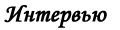 |
Митрополит Кирилл ответил на вопросы корреспондента журнала «Нескучный сад» |
Председатель Отдела внешних церковных связей Московского Патриархата
митрополит Смоленский и Калининградский Кирилл дал интервью журналу
«Нескучный сад», которое было опубликовано 19 ноября 2008 года на сайте
«Милосердие.ru». –
Современный экономический кризис многие эксперты называют глобальным. Он
затрагивает жизнь многих стран, многих людей. Кризис – это осмысление
старого и поиск нового: какие новые мировоззренческие вопросы он ставит,
в чем духовный смысл кризиса? –
Мировой финансово-экономический кризис, с которым столкнулось
человечество, начался не сегодня. Ситуация, которую мы наблюдаем сейчас,
лишь подтвердила кризисные тенденции, о наличии которых неоднократно
высказывались как светские эксперты, так и церковные мыслители на
протяжении последних лет.
Несомненно, нынешний
кризис носит не только глобальный, но и системный характер. Это прежде
всего кризис ценностей, кризис мировоззрения. Неправы те, кто привык
думать в вульгарно понятых марксистских категориях, считая, что ход
истории определяется исключительно производительными силами и
производственными отношениями. Исторический опыт решительно опроверг эти
отвлеченные схемы. Пути разрешения политических, экономических,
гуманитарных проблем следует искать не столько в плоскости
перераспределения материальных ресурсов или улучшения управленческих
технологий, сколько в сфере духовности.
Русская
Православная Церковь неоднократно напоминала, что экономика не является
сферой исключительно материальных интересов, а безнравственная
экономика – это уже не экономика в изначальном смысле слова, так как
служит она не созиданию, а разрушению. Примеров тому в современном мире
немало: налицо нищета миллионов людей, отупляющий культ потребления,
экологический кризис. Все это результаты бездуховного хозяйствования,
«экономики» эгоистической наживы, достигаемой любой ценой.
Так что кризис был в известном смысле неизбежен. Его
первопричина мне видится в деградации нравственной мотивации
хозяйствования, в нивелировании высшей цели экономики – построения
процветающего, гармоничного и справедливого общества. В сентябре 2007
года делегация Русской Православной Церкви приняла участие в работе III
Европейской межхристианской ассамблеи. В ее итоговом послании особо
отмечается, что «по всему миру, даже в Европе, современный процесс
радикальной рыночной глобализации углубляет в человеческом обществе
разделения между успешными и неудачниками, умаляет ценность многих
людей, имеет катастрофические экологические последствия и, особенно,
ввиду изменения климата, становится несовместимым с устойчивым будущим
планеты».
В то же время, с христианской
позиции, кризис – это всегда шанс начать с чистого листа, нравственно
очиститься, вернуться к более глубокому, одухотворенному пониманию жизни
и труда. – В послании
Предстоятелей Православных Церквей, участвовавших в Константинопольском
совещании в октябре этого года, говорится о том, что «жизнеспособна лишь
такая экономика, которая сочетает эффективность со справедливостью и
общественной солидарностью». Возможно ли сочетание справедливости и
солидарности с такими принципами современной экономики как конкуренция и
стремление к прибыли? Не мечтательность ли это? Что может в этом случае
быть гарантом, играть роль сдерживающего фактора? Мир знает подобные
примеры? – Доминирующая в
современном мире экономическая доктрина подчас идеализирует общество
конкуренции и равных возможностей. Однако равные возможности далеко не
всегда означают равенство доступа к социальным благам. Идеи всеобщего
равенства, также как и всеобщего материального благоденствия, утопичны,
но это вовсе не умаляет важности создания достойных условий жизни для
всех без исключения членов общества.
Экономика
не может быть эффективной, если она не строится на принципах социальной
справедливости и ответственности. В противном случае ни о какой
свободной конкуренции и о законной стабильной прибыли говорить не
приходится. Конечно, первым и важнейшим мотивом развития экономики
является материальная заинтересованность человека. И Церковь не отрицает
этот мотив, поскольку в основе его лежит стремление человека улучшить
условия жизни для себя и своей семьи. Но стремление приумножить личное
благосостояние ? это не единственный мотив, который должен двигать
экономическими отношениями. С точки зрения православной этики, другим
таким мотивом является стремление помочь ближнему, желание видеть, что
результаты труда приносят пользу не только конкретному человеку, но и
стране, обществу, в котором этот человек живет. Если один из упомянутых
мотивов перестает работать, кризис неизбежен. Именно это мы сейчас и
наблюдаем.
Могут ли сочетаться эти мотивации на
практике? Примеров немало. Взять хотя бы «новый курс» президента
Соединенных Штатов Америки Франклина Рузвельта, позволивший в кратчайшие
сроки вывести страну из «великой депрессии». В своей политике Рузвельт
опирался на массовую поддержку простых людей, которым государство
создало достойные и справедливые возможности трудиться и зарабатывать.
Само общество выступило гарантом такой модернизации, и Рузвельт
четырежды переизбирался в президенты. –
Во всем мире сегодня наблюдается возросший спрос на «Капитал» Карла
Маркса. Это разочарование в капиталистической системе, попытка вернуться
в прошлое и почерпнуть что-либо ценное из марксизма? Вновь актуальны
социалистические ценности? –
На мой взгляд, потерпели крах не только классическая концепция
социализма, но и «капиталистический фундаментализм». Сначала нам
говорили о саморегулирующемся рынке, который всегда эффективен, теперь
же происходит массированное государственное вмешательство в экономику.
На мой взгляд, нынешняя эпоха требует новых методов управления мировым
хозяйством, сочетающих в себе эффективное государственное регулирование с
поощрением частной инициативы.
В качестве
примера можно привести опыт Китая, по этому же пути движутся и некоторые
страны Латинской Америки. Ведущие государства Запада проводят
антикризисную политику национализации жизненно важных для общества
корпораций. Означает ли это реанимацию идеологии социализма образца
прошлого века? Не думаю. Скорее речь идет о поиске новых форм
хозяйствования, отвечающих реалиям нашего времени. В этом смысле интерес
к Марксу обоснован. Он достаточно точно описал природу
капиталистического способа производства и причины его кризиса. Но
актуальны скорее не идеологические постулаты Маркса, а его экономическая
аналитика.
Для того, чтобы успешно преодолеть
начавшийся глобальный кризис, необходима серьезная трансформация всей
существующей социально-экономической модели в сторону усиления акцента
на справедливости проводимой политики, на необходимости корректировки ее
в интересах всего общества.
Христианская
экономическая мысль исходит из того, что высшее благо – это спасение
человеческой души, а также построение гармоничного и справедливого
общества, стремящегося к созданию достойных условий жизни для всех
людей, независимо от их социального положения или политических взглядов.
В этом главное отличие православной социально-экономической этики от
классического социализма и капитализма.
– Философы называют западного человека человеком-потребителем. Может ли
изменить такого человека глобальный кризис? В сложные времена раздаются
призывы к аскетизму. Насколько актуальны подобные призывы для нашего
народа, во многом продолжающего жить в бедности? Полезно ли это ему?
Нравственно ли радоваться проблемам, с которыми сталкиваются богатые
люди в ситуации кризиса? –
Гедонизм и культ потребления, несомненно, относятся к числу главных
пороков постиндустриального общества. Будем надеяться, что кризис
заставит людей по-новому взглянуть на действительность. Впрочем,
напомню, что для подавляющего большинства жителей Земли призыв к
материальному самоограничению не совсем актуален, для них главное сейчас
– элементарно выжить и заработать себе на хлеб. Тем более нельзя
смешивать гедонизм с естественным желанием человека жить достойно и
обеспечить всем необходимым свою семью. Русский народ никогда за всю
свою многовековую историю не жил в материальном смысле на должном
уровне. Мы привыкли терпеть лишения, жертвовать подчас всем ради высшей
цели – блага своего Отечества. Но стоит ли спекулировать на этих
чувствах? Разве это нравственно? Наш народ заслуживает достойной жизни, в
том числе материального достатка. Причем в русской ментальности важное
место занимает именно стремление к умеренному достатку, а не к
обогащению любой ценой.
Бытует ошибочное
представление, что сами по себе материальные блага и процесс их создания
отвергаются Православием как грех и недостойное занятие. При этом
делаются ссылки на аскетическую традицию Православия и его
сосредоточенность на духовном мире.
Действительно, в культурном коде России заложен приоритет духовных
ценностей над материальными. Но эта аскетическая традиция уживается с
другой мощной традицией – бережным и благодарным отношением к имуществу,
которое дает совершать добрые дела. Установление этих двух архетипов
восходит еще к XVI веку, к знаменитому спору между «иосифлянами» и
«нестяжателями» – учениками преподобных Иосифа Волоцкого и Нила
Сорского. Последующая канонизация Церковью их обоих говорит о том, что
обе традиции соответствуют духу Православия.
Синтез этих двух подходов открыл широкие горизонты для созидания
национального богатства и использования его на благо человека и народа. В
результате наша история знает немало богатых людей, в том числе
успешных предпринимателей, которые вели умеренный, а нередко и
аскетический образ жизни.
– Пострадают ли в результате кризиса не только «виртуальные офисы», но и
вполне реальные благотворительные проекты? Какова будет позиция Церкви?
Раньше именно в голодные годы монастыри кормили голодающих…
– Вы совершенно правы: опасность текущего кризиса в том, что он
способен затронуть всю социально-экономическую сферу. При этом
наибольший ущерб могут понести средний класс и малообеспеченные люди. В
этой ситуации Церковь не может стоять в стороне. Традиции церковной и
общественной благотворительности должны активно возрождаться. В то же
время важно понимать, что материальные возможности Церкви в наше время,
увы, несравнимы с теми, что были у нее даже сто лет назад. Социальное
служение и благотворительность должны войти в число национальных
приоритетов и осуществляться общими усилиями, всем миром – государством,
предпринимателями, религиозными общинами.
– Совместимы ли мораль и современная рыночная экономика? Сейчас во
многих странах говорят об исламской финансовой модели, в основу которой
положены законы шариата, как о единственном возможном способе защиты от
глобального финансового кризиса. Какие выводы можно сделать из урока,
который преподносит миру христианскому мир исламский? Следует ли из
этого, что положенные в основу «исламской экономики» нравственные
принципы придают ей устойчивость, обеспечивают ее стабильность? Следует
ли из этого, что у христианского мира есть шанс использовать свой
собственный духовный опыт для выхода из экономического кризиса, не
применяя законы шариата? –
Исламская финансовая модель очень интересна с точки зрения
приспособления религиозной практики к реалиям рыночной экономики. Однако
не стоит забывать, что корни европейской цивилизации – христианские.
Другой вопрос, насколько далеко взгляды современного западного человека и
его экономическая деятельность оторвались от христианского
мировоззрения, от нравственной ответственности перед Богом и людьми за
свои поступки. Это выражается, в частности, в превалировании
спекулятивного капитала над реальным сектором экономики, а также в
других негативных явлениях. В православном богословии, равно как и в
исламском, ростовщичество воспринимается как морально сомнительный род
занятий. Речь, конечно, не идет об осуждении банковской системы в
принципе. Морально неприемлемы именно те действия финансистов, которые
влекут за собой отклонение от главной задачи банков – накопления и
перераспределения денежных потоков для более эффективного развития
реального производства товаров и услуг. Если же деньги делаются из
воздуха и происходит непонятная для абсолютного большинства людей
таинственная игра с понижением и повышением акций, в результате которой
одни теряют свое состояние, а другие в одночасье становятся сказочно
богатыми людьми, если подобные игры становятся основой экономики, то
происходит то, что мы сейчас наблюдаем, – кризис. Поэтому без связи
экономики с нравственностью, без отказа от доминирования спекулятивного
капитала невозможно говорить об исцелении хронических болезней
современной экономической системы.
Необходимо
вновь обратиться к первоначальному социальному измерению экономической
политики, смысл которой во многом нивелирован за последнее столетие ради
примитивного повышения уровня благосостояния, причем далеко не всех
слоев общества, как это декларируется.
Русская
Православная Церковь инициировала процесс открытого диалога между
властью, предпринимателями и обществом по этой значимой проблеме. В 2004
году Всемирным Русским Народным Собором принят Свод нравственных
принципов и правил в хозяйствовании. В марте этого года создан
Экспертный совет «Экономика и этика» при Отделе внешних церковных связей
Московского Патриархата, объединивший известных православных
священнослужителей, ученых-экономистов, политиков, предпринимателей. Его
цель – разработка отвечающих православной системе ценностей императивов
ведения современного рыночного хозяйства.
| |
ПЕРВЫЕ ХРИСТИАНЕ РИМА: СВЯТАЯ КИКИЛИЯ (ЦЕЦИЛИЯ)
Наталья Дудникова
|
Не спешно прохожу по вымощенной булыжником мостовой, между двух-трёх
этажными зданиями бурого или красно-кирпичного цвета, стараясь
насытиться колоритом жилого района вечного города Рима. Первые этажи
зданий заняты под магазинчики и кофейни. И вот передо мной раскрывается
небольшая площадь, справа очерченная ажурной чугунной оградой, а за ней
дивный садик с фонтаном и - церковь. Церковь святой Кикилии или, в
латинском произношении святой Цецилии. Обращаясь к житию святой
мученицы, находим трогательную и удивительную историю жизни молодой
девушки, такой же трогательной и звучной, как и её имя. Недаром святую
Цецилию стали почитать на Западе как покровительницу музыкантов, а в
житии упоминается что, когда на свадьбе ее играла языческая музыка,
девушка “в сердце своем” пела Богу. «Святая мученица Кикилия (родилась
около 230 года по Р.Х.) была римлянкой из богатого и знатного рода.
Родители решили выдать Кикилию замуж за знатного язычника Валериана.
Святая не осмелилась перечить воле родителей, но со слезами молилась
Богу, чтобы ее жених уверовал во Христа, а она сохранила бы девство.
Святая уговорила жениха пойти с ней к епископу Урбану, скрывавшемуся от
гонений в пещере у Аппиевой дороги. Наставления мудрого старца проникли в
душу Валериана, и он уверовал во Христа и обратил в христианство и
своего брата Тивуртия. Братья роздали часть своего имения бедным,
ухаживали за больными, хоронили христиан, замученных гонителями. Настала
и их очередь мученичества, а затем и кончины - они были обезглавлены.
Правитель хотел завладеть имением казненных, но, узнав, что святая
Кикилия уже раздала все оставшееся имущество нищим и своей проповедью
обращает язычников в христианство, приказал казнить и ее. Три дня
Кикилию морили жаром и дымом в раскаленной бане, но благодать Божия
хранила ее. Тогда ее решили обезглавить. Палач ударил мечом святую, но
лишь ранил ее. Святая мученица страдала еще три дня в полном сознании,
утверждая в вере окружающих, и скончалась с молитвой на устах».
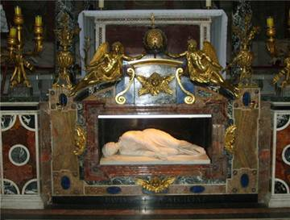
Церковь святой мученицы Кикилии основана папой
Пасхалием I в 817-824 годах на месте её мученичества. Под алтарём храма
изящная фигурка молодой женщины из белого мрамора. На одной руке разжаты
два пальца - указательный и средний, а на другой только указательный.
Святая этим показывает на символ Святой Троицы. Неестественно повернутая
голова святой обвёрнутая платом и виден глубокий рубец, проходящий
через всю шею.
Она была похоронена в катакомбе
Каллиста. В 1599 году, когда мощи были открыты, тело выглядело
совершенно как живое. Скульптор Мадерна вырубил из мрамора статую,
которая и находится в церкви св. Кикилии (Цецилии). Копию статуи
поставили в катакомбе Каллиста. В этой же катакомбе на стене находится
фреска с изображением святой Кикилии. Уже вскоре после своей кончины
святая мученица стала почитаться среди христиан. Её изображали
иконографически и обращали к ней свои молитвы.
Находясь в катакомбе или церкви святой, мысли и внимание обращаются к
временам гонений первых христиан. К временам, в которые проявлялась их
необыкновенная стойкость и верность. Рассуждениями это невозможно
объять. Разум не может этого постигнуть. Это чудо веры, и оно открывает
нам Божественное через личность святого. Это личная встреча святого с
Божественным откровением. Личность святого смогла воспринять и
преобразиться Божественною истиной. Святые, как искры Божии в нашем
мире, которые долетают и до нас через века, преодолевая времена и
пространства, находя отклик и в наших сердцах. Пробуждая и смягчая наши
сердца, помогая поддержать пламя, а может и просто разжечь лучину нашей
веры.
Память святой отмечается 22 ноября по новому стилю. Святая мученица Кикилия, моли Бога о нас!
Адрес церкви святой мученицы Кикилии в Риме.
Santa Cecilia
Piazza San Cecilia, 22 tel. 06.58.99.289
Храм открыт: 07.45-12.30, 14.30-19.00.
| |
ВОЗВРАЩЕНИЕ К ЖИЗНИ
Из книги Бориса Ганаго "Детям о вере"
| Обычно
кровати братьев стояли рядом. Но когда Серёжа заболел воспалением
легких, Сашу переселили в другую комнату и запретили тревожить малыша.
Только просили молиться за братишку, которому становилось всё хуже и
хуже.
Как-то вечером Саша заглянул в комнату
больного. Серёжа лежал с открытыми, ничего не видящими глазами и едва
дышал. Испугавшись, мальчик кинулся к кабинету, из которого доносились
голоса родителей. Дверь была приоткрыта, и Саша услышал, как мама,
плача, сказала, что Серёжа умирает. Папа с болью в голосе ответил:
- Что ж теперь плакать? Его уже не спасти...
В ужасе Саша бросился в комнату сестрёнки. Там
никого не было, и он с рыданиями упал на колени перед иконой Божией
Матери, висевшей на стене. Сквозь всхлипывания прорывались слова:
- Господи... Господи, сделай так, чтобы Серёжа не умер.
Лицо Саши было залито слезами. Вокруг всё
расплылось, как в тумане. Мальчик видел перед собой лик Божией Матери.
Чувство времени исчезло.
- Господи, Ты всё можешь, спаси Серёжу!
Уже совсем стемнело. Обессиленный, Саша с трудом
встал и зажёг настольную лампу. Перед ней лежало Евангелие. Мальчик
перевернул несколько страниц, и вдруг взгляд его упал на строку: «Иди, и
как ты веровал, да будет тебе...»
Словно
услышав приказ, он пошёл к Серёже. У постели любимого брата молча сидела
мама. Она подала знак: «Не шуми, Серёжа уснул».
Слова не были произнесены, но этот знак был, как луч надежды. Уснул - значит, жив, значит, будет жить!
Через три дня Серёжа уже мог сидеть в постели, и
детям разрешили бывать у него. Они принесли любимые игрушки брата,
крепость и домики, которые он до болезни вырезал и склеивал, - всё, чем
можно было порадовать малыша. Сестрёнка с большой куклой встала около
Серёжи, а Саша, ликуя, сфотографировал их.
Это были мгновения настоящего счастья. Если поверим
Договорились ребятишки играть в «жмурки». Одному
завязали глаза полотенцем. Убедились, что подсматривать не может,
закружили его и разбежались кто куда. Стали звать, хлопать в ладошки,
чтобы он на звук их поймал. Мальчуган с завязанными глазами пытался их
схватить, бросался на каждый шорох. А ребята вдруг притихли - и ни
звука, как будто никого нет. Но мальчик уверен, что они рядом. Не видит,
но верит, что они здесь.
Вера и есть уверенность в невидимом, как в видимом.
Мама уложила младенца спать, спела ему колыбельную,
перекрестила, поцеловала и вышла в соседнюю комнату. Малыш не видит её,
но верит, что мама рядом. Стоит её позвать, и она придет.
Так и Бога, и Заступницу нашу Богородицу мы не видим, но Они
рядом. Лишь только позовём - будут с нами, хотя мы их и не увидим.
Придут к тем, кто верит в Них. И придут, и помогут, и защитят.
Если поверим. Выбор
Зима. Снегу намело - не пройти. Вечером после
первого занятия в воскресной школе группа детей с родителями
возвращалась домой. Впереди через сугробы пробирались дедушка и внучка.
Девочка была совсем маленькая, чуть повыше его колена. Дедушка старался
идти по освещённой дорожке, а она всё время тянула его в темноту. Даже
сделала замечание:
- Вечно ты меня не слушаешь! Педагог, который шёл за ними, спросил:
- А кто кого должен слушать - дедушка внучку, или наоборот?
Девчушке эта мысль показалась неожиданной, и она ничего не ответила.
Педагог сказал:
- Мы только что говорили, что все человеческие беды
начались из-за непослушания. Адам ослушался Бога Отца. Поступил, как
самому захотелось...
И тут девочка высказалась:
- Так это Адам. Это к нам не относится. Прозрение
В одной московской школе перестал ходить на занятия мальчик. Неделю не ходит, две...
Телефона у Лёвы не было, и одноклассники по совету учительницы решили сходить к нему домой.
Дверь открыла Левина мама. Лицо у неё было очень грустное.
Ребята поздоровались и робко спросили:
- Почему Лёва не ходит в школу? Мама печально ответила:
- Он больше не будет учиться с вами. Ему сделали операцию. Неудачно. Лёва ослеп и сам ходить не может...
Ребята помолчали, переглянулись, и тут кто-то из них предложил:
- А мы его по очереди в школу водить будем.
- И домой провожать.
- И уроки поможем делать, - перебивая друг друга, защебетали одноклассники.
У мамы на глаза навернулись слезы. Она провела
друзей в комнату. Немного погодя, ощупывая путь рукой, к ним вышел Лёва с
повязкой на глазах.
Ребята замерли. Только
теперь они по-настоящему поняли, какое несчастье произошло с их другом.
Лёва с трудом сказал: - Здравствуйте.
И тут со всех сторон посыпалось: - Я завтра зайду за тобой и провожу в школу.
- А я расскажу, что мы проходили по алгебре.
- А я по истории.
- А я...
Лёва не знал, кого слушать, и только растерянно кивал головой. По лицу мамы градом катились слезы.
После ухода ребята составили план - кто когда
заходит, кто какие предметы объясняет, кто будет гулять с Лёвой и водить
его в школу.
В школе мальчик, который сидел с
Лёвой за одной партой, тихонько рассказывал ему во время урока то, что
учитель пишет на доске.
А как замирал класс, когда Лёва отвечал! Как все радовались его пятеркам, даже больше, чем своим!
Учился Лёва прекрасно. Лучше учиться стал и весь
класс. Для того, чтобы объяснить урок другу, попавшему в беду, нужно
самому его знать. И ребята старались. Мало того, зимой они стали водить
Лёву на каток. Мальчик очень любил классическую музыку, и одноклассники
ходили с ним на симфонические концерты...
Школу
Лёва окончил с золотой медалью, затем поступил в институт. И там
нашлись друзья, которые стали его глазами.
После института Лёва продолжал учиться и, в конце концов, стал всемирно
известным математиком, академиком Понтрягиным.
Не счесть людей, прозревших для добра. Душа-христианка
Семья была неверующей. Как-то проходили они мимо
храма. Зазвонили колокола. Сынишка лет шести неожиданно встал на колени
прямо на улице и стал креститься. Никто его этому не учил. Может, видел
где? Вдруг - сам!
Окружающие стали оглядываться на них. Мать возмутилась:
- Встань сейчас же! Не позорь нас! А малыш ей в ответ:
- Что ты, мама?! Это же Церковь!
Но ни мать, ни отец не поняли его. Взяли мальчика
за руки и увели. Христос же говорил: "Пустите детей и не препятствуйте
им приходить ко Мне, ибо таковых есть Царство Небесное". Увы, родители
не ведали этих слов и увели младенца от Христа.
Неужели навсегда? Подарок
В аэропорту перед полётом пассажиров пропускают
через особые ворота. Если кто-то захочет пронести в самолёт бомбу или
гранату, раздастся предупреждающий звонок. Охрана схватит человека,
замыслившего недоброе, и не даст ему взлететь в небо.
Так и в Царство Небесное, где ожидают каждую чистую душу, не
пропустят того, кто затаил зло в своём сердце.
Чтобы нас не задержала небесная охрана и не запретила полёт нашей душе,
заглянем в неё сами и посмотрим, какими желаниями и мыслями мы живём?
Как-то одну девочку спросили:
- Что ты больше всего любишь делать? Не задумываясь она ответила:
- Дарить!
Всё время, свободное от уроков и домашних дел, она
старается дарить людям радость. То какому-нибудь малышу игрушку
смастерит или варежки свяжет, то старушке-соседке продукты из магазина
принесёт.
Она и сама, как подарок. Смотришь на
неё, и мир светлей становится. Таких охрана в Небесное Царство охотно
пропустит: других радовала - теперь лети, сама радуйся.
Дари людям радость, милая!
|  |
РАВНОДУШИЕ (КУХОННАЯ СКАЗКА)
Протоиерей Николай Агафонов
|
Жила-была одна семья. И жил в этой семье чайник. Пузатый такой,
эмалированный. Чайник в семье занимал особое положение, так как все
любили пить чай. Чайник понимал свое значение, но не важничал, и не
гордился перед другой кухонной посудой. Он был радушным, добрым
трудягой. Большая хрустальная салатница, которая любила красоваться на
столе исключительно только по большим праздникам, всегда посмеивалась
над чайником, называя его трудоголиком.
А
чайник действительно был великим тружеником. Папа утром встает на работу
и первым делом сразу наливает в чайник воду и ставит на газ. Дети
встают в школу и тоже ставят чайник на газ. Мама, перед тем как
проводить в садик младшего сынишку, тоже без чайника не обходится. Но
вот все ушли: кто на работу, кто в школу, кто в детский сад, и тут
чайник без дела не остается. Бабушка приберет за всеми посуду и сидит,
чаи с бубликами гоняет. Вечером собирается вся семья за чайком –
беседуют.
Все бы хорошо, да одно плохо:
чайник-то всем нужен, а вот к нему должного внимания в семье нет.
Нередко бывает так: поставят его на газ, а вовремя отключить забывают.
Так и стоит чайник, кипит от возмущения, а крышка на нем трясется от
пара в негодовании. Воды становится все меньше и меньше. Чайник
переживает, что вот-вот вода закончится и тогда страшно подумать, что
может случиться. Наконец кто-нибудь войдет нечаянно на кухню, или так,
вдруг вспомнят о чайнике и отключат. Чайник вздохнет облегченно: «на
этот раз вроде пронесло». Но один раз забыли про чайник, и на кухню
никто случайно не зашел, и случилась беда. Вся вода выкипела, и чайник
стал корежиться от огня, но не мог никого позвать на помощь, голоса-то
он не имел. Так молча и погибал. Посуда в ужасе наблюдала гибель старого
трудяги, но что она могла поделать? Хрустальная салатница, хотя и
относилась к чайнику свысока, но тут и она не могла остаться
равнодушной. «Я готова грохнуться на пол, и разлететься на тысячи мелких
хрустальных осколков, лишь бы спасти этого беднягу!» - кричала она в
благородном негодовании. Когда уже гарь проникла в комнату, так что даже
папа, дремавший у телевизора с газетой в руках, проснулся, все кинулись
на кухню, но было поздно. Семья погоревала, погоревала о такой потере,
да делать нечего, снесли чайник в мусорный контейнер. А на следующий
день папа торжественно принес в дом новый, блестящий, никелированный
чайник со свистком. Все были просто в восторге от этого чайника. На него
не могли налюбоваться. Когда чайник закипал и начинал весело
посвистывать, буквально вся семья бежала чтобы отключить его. Но скоро к
новому чайнику привыкли. И теперь, когда чайник призывно свистел, к
нему уже не спешили. Бывало папа крикнет детям: «Вы что, не слышите,
чайник свистит? Идите кто-нибудь и отключите». «Ладно, - отвечали дети, -
сейчас досмотрим мультик, пусть пока немного посвистит». Бывали дни
когда чайнику приходилось свистеть так долго, что он начинал
беспокоиться, как бы не осип от горячего пара его голос. Хрустальная
ваза недовольно ворчала: «Рассвистелся тут, голова уже от твоего свиста
болит. Дедушка наш, труженик великий, тот никого не тревожил. Все
трудился, трудился молча, так и сгорел на работе, бедняга». «Потому и
свищу, - оправдывался чайник, - что не хочу сгореть». И продолжал
отчаянно свистеть, пока кто-нибудь не приходил и не отключал его.
Опасения чайника подтвердились, вскоре он
действительно лишился своего голоса, свисток вышел из строя. Этого даже
никто в семье не заметил, и никелированного красавца постигла ужасная
участь его собрата. Он так же молча сгорал, не уронив при этом ни одной
слезинки, ибо все, что могло в нем плакать испарилось горячим паром
через его надорванное горло. А расстроенная салатница всхлипывала,
причитая: «Да, что ж это творится у нас в доме. Так и знайте, если
подобное произойдет в третий раз, я просто не выдержу такой трагедии».
Третьего раза не случилось, потому что после гибели поющего чайника на
кухню прибыл электрический иностранец. Из белого пластика, с горделиво
задранным носиком, наподобие птичьего клюва, он очень важничал. И было
от чего. Чайник, едва закипев, сразу же мог отключить самого себя, без
всякой посторонней помощи. Хрустальная ваза в восторге шептала своей
подруге фарфоровой конфетнице: «Ты посмотри только, дорогая, каков
красавец. А какой умный, какой обходительный, сразу видно - заграничное
воспитание».
О двух сгоревших чайниках в семье
не вспоминали. Да и зачем? Ведь никому не хотелось признаться, что
равнодушие и невнимание убивает.
| 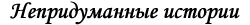 |
Валентина Папандопул
|
Это случилось со мной по милости Божьей. В 1995 году я уже проживала в
Греции и приехала в Алма-Ату за моей дочерью Марией, чтобы помочь ей
переехать в Грецию. Но не смогла осуществить это. A всё по промыслу
Божьему. Дело в том, что я очень сильно заболела и не смогла
сопровождать дочь. Я ей оставила мой паспорт, по которому она должна
была пройти регистрацию в греческом посольстве в Москве. А я по
выздоровлению должна была поехать после неё.
Но так Господь распорядился, что я задержалась в Казахстане на долгое
время. Однажды мне позвонили из Греции и сказали, что моя мама очень
сильно нуждается в моей помощи. Я не знала, что мне делать. Тогда я
обратилась за советом к моему духовному отцу - протоиерею Валентину
Сазонову: рассказала ему, что у меня нет паспорта, чтобы вернуться в
Грецию. А в те времена без паспорта было невозможно купить даже билет на
самолёт. Но отец Валентин меня благословил и сказал, чтобы я срочно
вылетала. А у меня даже денег не хватало на эту поездку, да и физически я
ещё не окрепла после болезни.
Я говорю батюшке:
-Как же я могу лететь без паспорта, который находится в Москве?
А он мне так спокойно и говорит:
- Вот и лети, Валентина! Бери свой паспорт и лети к маме, она тебя очень ждёт.
Посадили меня родственники в самолёт через
депутатскую комнату без документов. По прилёте в Москву при посадке
объявили, чтобы все подготовили документы для проверки. Я, конечно,
испугалась, ведь при мне не было абсолютно никаких документов.
Я буквально вдавила себя в сиденье и только молила
святителя Николая Чудотворца, чтобы помог мне пройти незамеченной:
"Господи, помоги мне! Батюшка Николай, помолись обо мне!"
С трепетом, но с надеждой на помощь Божью и святого Николая я
пошла за багажом в хвостовой отсек самолёта, взяла свой багаж и прошла
мимо людей, которые проверяли документы пассажиров. Как будто они меня и
не видели.
Я села в автобус и выехала с поля
посадки. Потом меня часто спрашивали, как мне удалось пройти. Это для
меня остаётся до сих пор загадкой.
Знаю только одно - Господь Бог по молитвам святых может сделать всё невозможное!
Этот случай ещё больше укрепил меня в вере
православной. Думаю, что мой духовный отец неспроста меня отправил, он
тоже знал, что Бог во всём помогает. Дай Бог, чтобы эта вера была во
всех нас православных до скончания века.
Август 2008 года, Лейден – Афины.
Редакция благодарит наших корреспондентов,
предоставивших свои материалы для этого номера «Православного
собеседника»:
Наталью Дудникову, Валентину Папандопул, Марию Ван Дер Клут-Рзаеву
С нетерпением ждем от прихожан и читателей новых рассказов, а также вопросов, комментариев и предложений.
Материалы принимают в электронном формате.
Рукописи не рецензируются и не возвращаются.
Мнение редакции может не всегда полностью совпадать с мнением авторов материалов.
При использовании авторских материалов нашего издания просьба ссылаться на «Православный собеседник»
Редакционная коллегия:
Протоиерей Григорий Красноцветов
(главный редактор)
Алевтина Захарова
(детский редактор)
Виктория Черепнина
Юлия Эссенберг
(выпускающий редактор)
| | |
|
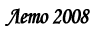
ЧИТАЙТЕ В НОМЕРЕ:
Дорогие братья и сестры!
Рад снова с вами встретиться на страницах нашего
приходского издания. Наступает период каникул и летних отпусков. Хочу
всем пожелать полноценного отдыха, хороших впечатлений, посещения святых
мест и возвращения на роттердамщину.
За
прошедший с последнего выпуска период в жизни нашего прихода и Русской
Православной Церкви произошло несколько знаменательных событий.
Мы все вместе встретили радостный праздник светлого
Христова Воскресения. Ему предшествовал Великий Пост, который завершала
Страстная Седмица. Особым настроением и особой сосредоточенностью
отличаются богослужения этих нескольких дней, предваряющих праздник
Пасхи Христовой. В Великую Пятницу был совершен чин выноса Плащаницы. В
этом году мы молились перед новой Плащаницей. Это дар нашему храму
Казанского кафедрального собора г. Санкт-Петербурга работы золотошвей
Новодевичьего монастыря. Прекрасная вышивка, строгое письмо украсили наш
праздник. В сам день Святой Пасхи храм был наполнен молящимися,
крестный ход растянулся на сотни метров. В этом году на пасхальном
богослужении диакон отец Павел Смейтс произнес малую ектению на девяти
языках, а Евангелие нашими прихожанами было прочитано на двенадцати
языках! В конце службы мной было роздано больше 180 пасхальных яиц, и
это в начале четвертого часа утра! После ночной службы в приходском зале
актив прихода организовал застолье - пасхальное разговенье, в котором
приняли участие более 120 человек. Как всегда, детям, клиру, активу
прихода, регенту, певцам хора были вручены пасхальные подарки. В
радостной непринужденной домашней обстановке отметили мы все вместе
пасхальное торжество. Днем в воскресенье было совершено пасхальное
богослужение и освящение пасхальной снеди для тех, кто не смог по тем
или иным причинам присутствовать на ночном богослужении. Таких собралось
свыше 500 человек.
В
среду Светлой седмицы большая группа наших прихожан, к которым
присоединились несколько человек из Амстердама, Антверпена и Брюсселя, и
которых возглавил архиепископ Симон, отправилась в паломническую
поездку во Святую Землю. Этой поездке предшествовала напряженная работа
по подготовке паломничества, которую владыка поручил осуществлять мне.
За неделю пребывания группы в Израиле, нам посчастливилось побывать и
поклониться святыням, как новозаветным, так и ветхозаветным, во святом
граде Иерусалиме, в городах Вифлееме, Иерихоне, Кане Галилейской,
Капернауме, Лидде, Яффе. Мы были на вершинах горы Фавор и Сорокодневной
горы (Искушений), купались в реке Иордан и Галилейском море, посетили
множество монастырей, среди которых знаменитая Лавра Саввы Освященного.
Везде нас встречали доброжелательно, с любовью предоставляя возможность
помолиться и приложиться к святыням. Надеюсь, что у всех паломников об
этой поездке останутся самые приятные воспоминания, а Господь сподобит
когда-нибудь посетить эти святые места еще раз. На сайте прихода мы
планируем создать специальную страничку, посвященную паломничеству, куда
мы сможем поместить фотографии, сделанные участниками поездки, и
впечатления-воспоминания. После летних каникул мы обязательно организуем
в нашем приходе встречу с паломниками, покажем фильм о путешествии и
фотографии.
В третье
воскресенье по Пасхе в приходском зале состоялся ставший уже
традиционным детский пасхальный праздник. В этом году силами детей– и
родителей–прихожан был подготовлен спектакль «Колобок» с пасхальным
сюжетом. Прекрасная игра актеров, отличные костюмы и декорации, грим,
сделанный профессиональным гримером – все это было воспринято зрителями
на «ура». После спектакля состоялись детские пасхальные хороводы, игры.
Все участники праздника получили подарки. Основной труд по организации
праздника взяла на себя, как и в прошлые годы, директор Русской школы в
Роттердаме наша постоянная прихожанка Алевтина Захарова.
Надеюсь, что в следующий раз Алевтине Юрьевне придется
заниматься только режиссерской работой, а всю
административно-организационную сторону праздника возьмет на себя кто-то
другой (или другие). Кто хочет в этом участвовать - свяжитесь,
пожалуйста, со мной или с Алевтиной (06 - 27407956).
Перед праздником Святой Троицы я с владыкой Симоном
принял участие в торжествах, посвященных 70-летию освящения
кафедрального собора города Берлина. К этому же событию была приурочена и
закладка камня в основание храма на территории организуемого в 100 км
от Берлина русского православного монастыря (интересно, что идея
строительства монастыря пришли в голову небезызвестному немецкому
журналисту, который в свое время сыграл профессора из Дании в кинофильме
«Осенний марафон»). Возглавил торжества митрополит Смоленский и
Калининградский Кирилл. В Берлин прибыли практически все епископы,
возглавляющие епархии Русской Церкви в Европе: из Бельгии, Англии,
Франции, Австрии, а также и из США. Мне было особенно приятно вновь
увидеть и служить в местах, где прошли 6 лет моего детства – с 1964 по
1970 годы, когда я маленьким мальчиком прислуживал в храмах Берлина, а
мой отец протоиерей Павел был ключарем кафедрального собора Берлина.
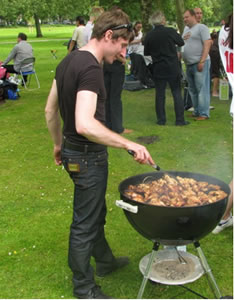В
неделю Всех святых после Литургии мы вместе с вами отпраздновали
очередную - уже четвертую!!! – годовщину освящения храма и заговенье на
Петров пост - в день, когда мы вспоминаем всех святых, предстоящих и
молящихся за нас грешных пред Престолом Господним. Спонтанно
отпраздновали мы и победу российской футбольной сборной над голландцами,
которая случилась накануне. На пикник я шел, повязавшись российским
флагом, и проезжавшие мимо автомобили гудели, приостанавливались и люди
аплодировали мне из открытых окон. Было очень приятно, и я был горд за
Россию. Правда очень хочется, чтобы нам аплодировали не только за победы
на футбольных полях, но и за успехи и достижения в деле строительства
гармоничного общества, основанного на христианских нравственных
принципах… В этом году мы отказались от «анархического» способа
организации пикника, когда каждый приносит то, что может и хочет. Когда
собирается больше ста человек, всегда есть опасность остаться с горой
картофельного салата и не вкусить шашлыка. По предложению Церковного
совета были отпечатаны и в свечном ящике распространялись специальные
билеты. На вырученные средства группой организаторов было закуплено все
необходимое (мясо, закуски, зелень, напитки, пластиковая посуда) для
проведения приходского пикника. Особое волнение всем нам доставил
прогноз погоды, который обещал в этот воскресный день дождь, грозу с
градом. Верим, что Господь услышал наши молитвы, и в день праздника была
отличная летняя погода. В этом году энтузиазмом и заботой Надежды и
Марии из Лейдена была организована и спортивно-развлекательная программа
для взрослых и детей. Участники с удовольствием бегали эстафету,
прыгали в мешках, перетягивали канат и ставили палатку. Как всегда в
таких случаях победила дружба, и участники с удовольствием разделили
приз за победу – вкусный торт Олиного приготовления. В этот день у всех
нас была возможность общения в непринужденной обстановке, была
возможность попеть любимые песни, просто полежать на травке. Все оценили
достоинства шашлыка, приготовленного стараниями Миши Продана и его
супруги Алены. Могу сказать, что им пришлось приобрести, обработать и
замариновать больше 50 кг мяса! Труд по организации пикника взял на себя
староста Димитрий Воронкин. Ему помогали Давид, Овик, Руслан, Евгений,
Миша Красноцветов. Были накормлены, напоены более ста участников
пикника. Надеюсь, что некоторые недоразумения, которые возникали во
время нашего общения под открытым небом, не испортили общего прекрасного
впечатления от ставшего уже традиционным празднования под открытым
небом дня освящения храма Александра Невского. Спасибо всем, кто внес
свою лепту в подготовку и проведение этого замечательного пикника!
С 24 по 27 июня в Москве в зале соборных заседаний Храма Христа
Спасителя проходил Архиерейский Собор Русской Православной Церкви. На
нем были приняты важные решения, касающиеся церковной жизни,
церковно-государственных отношений и многие другие решения. Подробнее о
Соборе и его решениях вы можете ознакомиться на официальном сайте РПЦ
www.mospat.ru. Здесь я хочу особо обратить ваше внимание на обсуждение
вопроса, который во многом касается всех нас, живущих на Западе. Вопрос
такой часто приходится слышать и мне от наших прихожан – можно ли
молиться в католических и протестантских храмах, как относиться к
общехристианским святыням, которые хранятся на Западе?! В своем докладе
на Соборе, отметив важность трезвой оценки существующих различий между
Православной Церковью и отдельными Церквами и общинами, необходимость
твердо придерживаться связанных с этим правил и традиций, председатель
Отдела внешних церковных связей Московского Патриархата митрополит
Смоленский и Калининградский Кирилл особо остановился на вопросе о
возможности присутствия православных на молитве христиан иных конфессий.
«Тема эта злободневна отнюдь не только в
контексте официальных межхристианских диалогов. Из года в год растет
количество верующих Русской Церкви, которые совершают паломнические
поездки к святыням, являющимся общехристианским достоянием, – в Святую
Землю, Бари, Париж, Рим, Милан, Неаполь, в другие города и страны.
Многие из этих святынь находятся в храмах инославных христиан.
Кроме того присутствие православного христианина в
культовом здании иной религиозной традиции, в том числе в момент, когда
там происходит молитва, становится неизбежным не только во время
паломничества, но и тогда, когда член Православной Церкви, занимая
государственную должность, посещает культовые места различных религий в
соответствии с протоколом и программой визита.
Отвечая на возможные в подобных случаях вопросы, следует указать на
допустимость православной молитвы перед общехристианскими святынями,
находящимися в инославных храмах, а также на возможность для
православных христиан присутствовать на инославном богослужении. Простое
посещение храма или богослужения иной конфессии не может означать
автоматического согласия православного христианина с инославным
вероучением и литургическими традициями».
Владыка Кирилл отметил, что недопустимым присутствие на молитве,
совершаемой представителями других церквей, становится тогда, когда оно
может непосредственным образом способствовать обращению христианина из
Православия в иную конфессию или раскол: «Наибольшая опасность видится
именно в ситуации с расколом или с унией, когда для простых людей
разделяющие границы не столь четки и очевидны, как в других случаях.
В свою очередь, когда речь заходит о доступе
инославных христиан или представителей иных религий в наши храмы, мы не
должны забывать, какую огромную роль храм и богослужение играют в деле
проповеди православной веры», - сказал Владыка Кирилл, напомнив о послах
князя Владимира, побывавших на богослужении в Софийском храме
Константинополя. «Если бы язычников тогда не пустили в храм, то Руси,
наверное, не суждено было бы стать православной», - подчеркнул он.
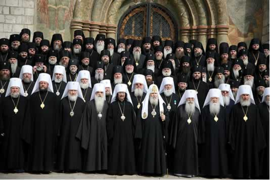
Как результат обсуждения доклада митрополита
Кирилла в своем Определении Освященный Архиерейский Собор Русской
Православной Церкви 24-29 июня 2008 года «О вопросах внутренней жизни и
внешней деятельности Русской Православной Церкви» в пункте 36 отметил: В
процессе диалога наша Церковь не приемлет попыток «смешения вер»,
совместных молитвенных действий, искусственно соединяющих
конфессиональные или религиозные традиции. Однако для православных
христиан всегда было позволительно поклоняться общехристианским
святыням, не находящимся в православных храмах. В практике Православной
Церкви не возбраняется и уважительное присутствие неправославных и
неверующих людей в православном храме во время богослужения - так,
именно возможность посещения храма Святой Софии послами великого князя
Владимира открыла Руси путь к принятию Православия.
Уважаемые прихожане!
У желающих появилась возможность приобщить детей к
культуре, обычаям и обрядам, к чудодейственной силе русской народной
песни.
Русская песня – это русская душа,
крепкая своими традициями. А традиции живут нашими стараниями. Русская
школа «Матрёшка» в Роттердаме предлагает занятия у профессионального
педагога-фольклориста Краснобаевой Марии Алексеевны.
Занятия проходят по субботам с 14.15 до 15.15 по адресу: Stationssingel 70, 3033 HJ Rotterdam
Интернет-сайт: http://www.russischeschool-rotterdam.nl
Предварительная информация и запись по телефону:
06 27407856.
Русская школа «Матрешка» в г. Роттердаме объявляет
набор (взрослых) желающих изучать русский язык как иностранный. На
предстоящий 08-09 учебный год формируются две группы: начального и
среднего уровня. Занятия будут проходить по субботам. Запись в группы по
телефону: 06 27407856.
| |
СВЯЩЕННОСЛУЖИТЕЛИ И ИХ СВЯЩЕННЫЕ ОДЕЖДЫ (ОБЛАЧЕНИЯ) | 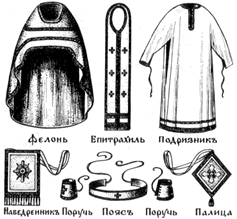
По примеру ветхозаветной церкви, где были первосвященник, священники и
левиты, святые апостолы установили и в новозаветной христианской Церкви
три степени священства: епископов, пресвитеров (т. е. священников) и
диаконов.
Все они называются
священнослужителями, потому что через таинство священства они получают
благодать Святого Духа для священного служения Церкви Христовой;
совершать богослужения, учить людей христианской вере и доброй жизни
(благочестию) и управлять церковными делами.
Епископы составляют высший чин в Церкви. Они получают высшую степень благодати. Епископы называются еще архиереями,
т. е. начальниками иереев (священников). Епископы могут совершать все
таинства и все церковные службы. Это значит, что епископам принадлежит
право не только совершать обычное богослужение, но и посвящать
(рукополагать) в священнослужители, а равно освящать миро и антиминсы,
что не дано священникам.
По степени священства
все епископы между собою равны, но старейшие и наиболее заслуженные из
епископов называются архиепископами, столичные же епископы называются митрополитами,
так как столица называется по-гречески митрополией. Епископы древних
столиц, как то: Иерусалима, Константинополя (Царьграда), Рима,
Александрии, Антиохии, а с XVI века и русской столицы Москвы, называются
патриархами.
В период с 1721 года по 1917 год, Русская Православная Церковь
управлялась Святейшим синодом. В 1917 году собравшимся в Москве
Священным Собором был избран снова для управления Русской Православной
Церковью "Святейший патриарх Московский и всея России".
В помощь епископу иногда дается другой епископ, который, в таком случае, называется викарием, т. е. наместником.
Священники, а по-гречески иереи или пресвитеры,
составляют второй священный чин после епископа. Священники могут
совершать, с благословения епископа, все таинства и церковные службы,
кроме тех, которые положено совершать только епископу, т. е. кроме
таинства священства и освящения мира и антиминсов.
Христианская община, подчиненная ведению священника, называется его приходом.
Более достойным и заслуженным священникам дается звание протоиерея, т. е. главного иерея, или первенствующего священника, а главному между ними - звание протопресвитера.
Если священник является в то же время монахом, то он называется иеромонахом,
т. е. священномонахом. Иеромонахам, по назначению их настоятелями
монастырей, а иногда и независимо от этого, как почетное отличие, дается
звание игумена или более высокое звание архимандрита. Особенно достойные из архимандритов избираются в епископы.
Диаконы составляют третий, низший, священный чин. "Диакон" слово греческое и означает: служитель.
Диаконы служат епископу или священнику при
богослужении и совершении таинств, но сами совершать их не могут.
Участие диакона в богослужении не обязательно, а потому во многих церквах служба происходит без диакона.
Некоторые диаконы удостаиваются звания протодиакона, т. е. перводиакона.
Монах, получивший сан диакона, называется иеродиаконом, а старший иеродиакон - архидиаконом.
Кроме трех священных чинов, в Церкви существуют еще
низшие служебные должности: иподиаконы, псаломщики (дьячки) и пономари.
Они, принадлежа к числу церковнослужителей, поставляются на свою
должность не через таинство Священства, а только по архиерейскому на то
благословению.
Псаломщики имеют своей
обязанностью читать и петь, как при богослужении в храме на клиросе, так
и при совершении священником духовных треб в домах прихожан.
Пономари
имеют своею обязанностью созывать верующих к богослужению колокольным
звоном, возжигать свечи в храме, подавать кадило, помогать псаломщикам в
чтении и пении и так далее.
Иподиаконы
участвуют только при архиерейском служении. Они облачают архиерея в
священные одежды, держат светильники (трикирий и дикирий) и подают их
архиерею для благословения ими молящихся.
Священнослужители, для совершения богослужений,
должны облачаться в особые священные одежды. Священные одежды
изготовляются из парчи или другой какой-либо пригодной для этого материи
и украшаются крестами.
Одежды диакона составляют: стихарь, орарь и поручи.
Стихарь
- длинная одежда без разреза спереди и сзади, с отверстием для головы и
с широкими рукавами. Стихарь полагается и для иподиаконов. Право
ношения стихаря может быть дано и псаломщикам и прислуживающим в храме
мирянам. Стихарь знаменует чистоту души, которую должны иметь лица
священного сана.
Орарь - длинная
широкая лента из той же материи, как и стихарь. Она носится диаконом на
левом плече, поверх стихаря. Орарь знаменует благодать Божию, которую
диакон получил в таинстве Священства.
Поручами
именуются узкие нарукавники, стягивающиеся шнурками. Поручи напоминают
священнослужителям, что они, совершая таинства или участвуя в совершении
таинств веры Христовой, выполняют это не собственными силами, а силою и
благодатью Божией. Поручи напоминают также узы (веревки) на руках
Спасителя во время Его страданий.
Облачение священника составляют: подризник, епитрахиль, пояс, поручи и фелонь (или риза).
Подризник
это - стихарь в несколько измененном виде. Отличается он от стихаря
тем, что делается из тонкой белой материи, и рукава у него узкие со
шнурками на концах, которыми они затягиваются на руках. Белый цвет
подризника напоминает священнику, что он должен всегда иметь чистую душу
и проводить беспорочную жизнь. Кроме того, подризник напоминает собою
еще и тот хитон (нижнюю одежду), в которой ходил на земле Сам Господь
наш Иисус Христос, и в котором Он совершил дело нашего спасения.
Епитрахиль
есть тот же орарь, но только сложенный вдвое так, что, огибая шею, он
спускается спереди вниз двумя концами, которые для удобства сшиты или
чем-нибудь соединены между собою. Епитрахиль знаменует особенную,
двойную сравнительно с диаконом, благодать, подаваемую священнику для
совершения таинств. Без епитрахили священник не может совершать ни одной
службы, как и диакон - без ораря.
Пояс
надевается поверх епитрахили и подризника и знаменует готовность
служить Господу. Пояс знаменует также Божественную силу, которая
укрепляет священнослужителей в прохождении их служения. Пояс напоминает и
то полотенце, которым препоясался Спаситель при омовении ног ученикам
Своим на Тайной Вечери.
Риза, или
фелонь, надевается священником поверх других одежд. Одежда эта длинная,
широкая, без рукавов, с отверстием для головы сверху и с большим вырезом
спереди для свободного действия рук. Своим видом риза напоминает ту
багряницу, в которую был облечен страждущий Спаситель. Ленты, нашитые на
ризе, напоминают потоки крови, которые текли по Его одеждам. Вместе с
тем, риза напоминает священникам и об одежде правды, в которую они
должны быть облечены, как служители Христовы.
Поверх ризы, на груди у священника находится наперсный крест.
За усердную, продолжительную службу священникам даются в награду набедренник,
то есть четырехугольный плат, привешиваемый на ленте через плечо за два
угла на правом бедре, означающий меч духовный, а также головные уборы -
скуфья и камилавка.
Епископ (архиерей)
облачается во все одежды священника: подризник, епитрахиль, пояс,
поручи, только риза у него заменяется саккосом, а набедренник палицею. Кроме того, епископ надевает омофор и митру.
Саккос
- верхняя одежда епископа, похожая на укороченный снизу и в рукавах
диаконский стихарь, так что из-под саккоса у епископа видны и подризник и
епитрахиль. Саккос, как и риза у священника, знаменует собой багряницу
Спасителя.
Палица, это -
четырехугольный плат, привешиваемый за один угол, сверх саккоса на
правом бедре. В награду за отлично-усердную службу право носить палицу
иногда получают и заслуженные протоиереи, носящие ее также с правой
стороны, а набедренник в таком случае помещается на левой. У
архимандритов же, как и у архиереев, палица служит необходимой
принадлежностью их облачения. Палица, как и набедренник, означает
духовный меч, т. е. слово Божие, которым должны быть вооружены духовные
лица для борьбы с неверием и нечестием.
На плечах, поверх саккоса епископы носят омофор.
Омофор есть длинный широкий лентообразный плат, украшенный крестами. Он
возлагается на плечи епископа так, что, охватывая кругом шею, одним
концом спускается спереди, а другим сзади. «Омофор» - слово греческое и
означает наплечник. Омофор принадлежит исключительно епископам. Без
омофора епископ, как священник без епитрахили, не может совершать
никакой службы. Омофор напоминает епископу, что он должен заботиться о
спасении заблуждающихся подобно евангельскому доброму пастырю, который,
отыскав пропавшую овцу, несет ее домой на своих плечах.
На груди, поверх саккоса, кроме креста, у епископа имеется еще и панагия, что значит "Всесвятая". Это - небольшой круглый образ Спасителя или Божией Матери, украшенный цветными камнями.
На голову епископу возлагается митра,
украшенная небольшими образками и цветными камнями. Митра знаменует
собой терновый венец, который был возложен на голову страждущего
Спасителя. Митру имеют также и архимандриты. В исключительных случаях
право надевать митру вместо камилавки при богослужении дается наиболее
заслуженным протоиереям.
При богослужении епископы употребляют жезл или посох, как знак высшей пастырской власти. Посох дается также архимандритам и игуменам, как начальникам монастырей.
Во время богослужения под ноги епископу подкладываются орлецы.
Это - небольшие круглые коврики с изображением орла, летящего над
городом. Орлецы означают, что епископ должен, подобно орлу, возноситься
от земного к небесному.
Повседневную одежду
епископа, священника и диакона составляют подрясник (полукафтанье) и
ряса. Поверх рясы, на груди епископ носит крест и панагию, а священник -
крест.
О ПОРЯДКЕ ЦЕРКОВНЫХ БОГОСЛУЖЕНИЙ Все церковные богослужения делятся на три круга: суточный, недельный и годовой.
Суточный круг богослужений
1. Суточным кругом богослужений называются те
богослужения, которые совершаются святой Православной Церковью на
протяжении суток. Суточных богослужений должно совершаться девять:
вечерня, повечерие, полунощница, утреня, первый час, третий час, шестой
час, девятый час и Божественная Литургия.
По
примеру Моисея, который, описывая творение Богом мира, начинает "день" с
вечера, так и в Православной Церкви день начинается с вечера -
вечерней.
Вечерня - служба, совершаемая в конце дня, вечером. Этой службой мы благодарим Бога за проходящий день.
Повечерие
- служба, состоящая из чтения ряда молитв, в которых мы просим у
Господа Бога прощения грехов, и чтобы Он дал нам, на сон грядущим
(идущим), покой тела и души и сохранил нас от козней диавола во время
сна.
Полунощница - служба
предназначена для совершения в полночь, в воспоминание ночной молитвы
Спасителя в Гефсиманском саду. Эта служба призывает верующих быть всегда
готовыми ко дню Страшного Суда, который наступит внезапно, как "жених в
полунощи" согласно притчи о десяти девах.
Утреня
- служба, совершаемая утром, перед восходом солнца. Этой службой мы
благодарим Бога за прошедшую ночь и просим у Него милостей на
наступающий день.
Первый час, соответствующий нашему седьмому часу утра, освящает молитвой уже наступивший день.
На третьем часе, соответствующем нашему девятому часу утра, вспоминается сошествие Святого Духа на апостолов.
На шестом часе, соответствующем нашему двенадцатому часу дня, вспоминается распятие Господа нашего Иисуса Христа.
На девятом часе, соответствующем нашему третьему по полудни, воспоминаем крестную смерть Господа нашего Иисуса Христа.
Божественная Литургия
есть самое главное богослужение. На ней вспоминается вся земная жизнь
Спасителя и совершается таинство св. Причащения, установленное Самим
Спасителем на Тайной Вечери. Литургия служится утром, перед обедом.
Все эти службы в древности в монастырях и у
отшельников совершались отдельно, в положенное для каждой из них время.
Но потом, для удобства верующих, были они соединены в три богослужения:
вечернее, утреннее и дневное.
Вечернее богослужение состоит из девятого часа, вечерни и повечерия.
Утреннее - из полунощницы, утрени и первого часа.
Дневное - из третьего и шестого часов и Литургии.
Накануне больших праздников и воскресных дней
совершается вечерняя служба, в которой соединяются: вечерня, утреня и
первый час. Такое богослужение называется всенощным бдением (всенощною),
потому что у древних христиан оно продолжалось всю ночь. Слово "бдение"
значит бодрствование.
Недельный круг богослужений
2. Недельным, или седмичным, кругом богослужений
называется порядок служб на протяжении семи дней недели. Каждый день
недели посвящен какому-либо важному событию или особо почитаемому
святому.
В воскресенье Церковь воспоминает и прославляет Воскресение Христово.
В понедельник (первый день после воскресенья) прославляются бесплотные силы - ангелы.
Во вторник прославляется Предтеча Иоанн Креститель, как больший из всех пророков и праведных.
В среду вспоминается предательство Господа Иудой и,
в связи с этим, совершается служба в память Креста Господня (день
постный).
В четверг прославляются святые апостолы и святитель Николай Чудотворец.
В пятницу вспоминаются крестные страдания и смерть
Спасителя, и совершается служба в честь креста Господня (день постный).
В субботу - день покоя - прославляются Божия
Матерь; праотцы, пророки, апостолы, мученики, преподобные, праведные и
все святые, достигшие упокоения в Господе. Также поминаются все усопшие в
истинной вере и надежде на воскресение и жизнь вечную.
Годовой круг богослужений
3. Годовым кругом богослужений называется порядок служб на протяжении всего года.
Каждый день в году посвящается памяти тех или
других святых, а также и особым священным событиям - праздникам и
постам.
Из всех праздников в году самым большим
является праздник Светлого Христова Воскресения (Пасха). Это
«праздников Праздник и Торжество из торжеств». Пасха бывает не раньше
22-го марта (4 апреля н. ст.) и не позже 25-го апреля (8 мая н. ст.), в
первый воскресный день после весеннего полнолуния.
Затем бывает в году двенадцать великих праздников, установленных в
честь Господа нашего Иисуса Христа и Божией Матери, которые называются
двунадесятыми.
Есть праздники и в честь великих святых и в честь бесплотных Сил небесных - ангелов.
Дорогие братья и сестры!
Наступает время отпусков. Хочется пожелать вам
хорошего проведенного с пользой для души отдыха, благодатных
паломнических поездок, теплого общения с вашими близкими. Надеюсь, что
все это даст вам сил и заряд бодрости на целый год до следующего лета.
Хочу также напомнить всем, что библиотека по-прежнему ждет от вас новых
книг. Еще раз обращаю ваше внимание, что приобретать их следует в
православных магазинах и книжных лавках и, пожалуйста, всегда обращайте
внимание на то, есть ли благословение на издание книги Святейшего
Патриарха или рекомендация Издательского совета РПЦ. Чтобы вы имели
некоторое представление о книгах, которые можете приобрести на Родине, и
не растерялись на книжном рынке, предлагаю вам несколько
примеров-ориентиров.
Все мы знаем, что самыми
необходимыми книгами в библиотеке православного христианина являются
жития святых и святоотеческая литература. Поэтому и наша приходская
библиотека ждет подобные книги от вас. Советуем обратить особое внимание
на книгу О. В. Орловой «Крестный путь Иоанна Златоуста» - трогательный
роман-хронику о мученическом пути святителя. Книга содержит также его
знаменитые проповеди. Говорят, ее уже невозможно купить ни в одном
магазине. Поэтому если кому-то повезет, то приобретите, пожалуйста,
экземпляр для нашей библиотеки.
Книга Василия
Ирзабекова (православного азербайджанца, филолога, исследователя
русского языка) «Тайна русского слова» - «признание в любви к русскому
языку. Она утверждает высокий строй души русской, связанной с
Божественным Светом Истины. Это не специальное лингвистическое
исследование, а скорее популярное, чрезвычайно живое, образное и острое
размышление о связи языка и духовности, культуры русской речи и здоровья
души. Она говорит о силе и скрытых возможностях слова. Девизом ее я бы
поставил слова: «Кто светел, тот и свят». На примере жизни и творчества
самого автора можно видеть, как благодатное слово преображает
национальные покровы сознания, делая их общечеловечными, надкровными. Во
время разговора о происхождении русских слов с иностранцем,
православным епископом, знатоком русского языка, я услышал от владыки
восторженные слова: «Вы, русские, очень счастливые люди. Слова вашего
языка творили святые. Слова эти все свидетельствуют о Боге, о вечности,
призывают ко спасению, в Царство Божие» (игумен Петр (Пиголь).
Многие спрашивают в нашей библиотеке книги по
православному воспитанию. У нас есть несколько книг из этого раздела, но
их очень мало, особенно современных. Обратите внимание на книги
известных православных психологов И.Медведевой и Т.Шишовой,
рекомендациями которых, кстати, мы также можем воспользоваться для
отбора литературы для наших детей. «Из современных православных авторов,
пишущих для детей, хочется особо выделить известного писателя Владимира
Николаевича Куприна, молодую писательницу Марину Кравцову, священника
Игоря Лепешинского и Николая Блохина», а для родителей, которые хотят
грамотно подбирать библиотеку для своего чада и «аргументировано
беседовать с детьми о душеполезности (или душевредности) произведений
наших классиков» Татьяна Шишова советует прочитать труды православных
литературоведов М.М. Дунаева и В.Ю. Троицкого (из книги Т.Шишовой «Чтобы
ребенок не был трудным»). Также для этого раздела нужны книги
священника-педагога Артемия Владимирова и замечательная книга Е.А.
Авдеенко «Переходный возраст. Как правильно выйти замуж. Беседы со
старшеклассниками». Перед каждым родителем 14–15-летнего подростка,
обучающегося в голландской школе, встает проблема: как реагировать на
уроки биологии, а именно – на тему о половом воспитании. Порой понимая,
что разговор на эту тему с ребенком необходим, не находит нужных слов и
не знает, как такой разговор начать. Книга Е.А. Авдеенко поможет вам в
подобных случаях. Вот, что говорит сам Евгений Андреевич о своей книге:
«Эта история произошла лет десять назад. Директор одной из московских
школ (она была тайно верующим человеком) попросила меня прийти к ней в
школу и поговорить с детьми о нравственности и о заповедях Божьих. Ее
крайне тревожило то, что, как она выразилась, "мы теряем детей,
перестаем понимать их". И вот, по ее мысли, я должен был прийти и
поговорить со старшеклассниками о Боге. Я отказывался сколько мог,
потому что, во-первых, никогда с детьми не разговаривал на такие темы, а
во-вторых, был уверен в том, что они, в большинстве, ничего о Боге не
знают, да и вряд ли интересуются узнать... Однако по ее уговору, мне
пришлось-таки в школу прийти. Прихожу. В актовом зале собралось человек
сто, сто двадцать, дети вместе с учителями. Начинаю говорить о
заповедях... Чувствую, что все идет поверх голов... Как ужасно чувствует
себя учитель, когда дает неинтересный урок... Минут через двадцать дети
устали меня терпеть. А я как раз дошел до седьмой заповеди - "Не
прелюбодействуй". Объясняю, что нельзя людям сходиться, как собачки, что
мы - разумные свободные существа, что в мире свободных существ
действуют нравственные законы, что нельзя... А меня вдруг спрашивают:
"Почему нельзя?" Смотрю, кто спрашивает. На заднем ряду сидит девушка на
коленях у парня и говорит мне далее такие слова: "Товарищ лектор, а
почему нельзя? Мы с моим парнем СПИДом не болеем, семьи заводить не
собираемся, детей пока не хотим. Почему нельзя? Что это ваш Бог такой
строгий?" Вот в этот момент у меня в голове все прояснилось... Надо
признаться, что до этого момента я не считал, что педагогика -
искусство. Архитектура, музыка, поэзия, философия - да, искусство, а
педагогика - работа, вроде дворника или санитара... Но когда я услышал
вопрос девушки: "Что это ваш Бог такой строгий?" - я мгновенно понял,
что у меня из этого зала актового - два пути. Или я отвечу на ее вопрос,
и она сядет на стул. Или я выйду в дверь и уже никогда не буду говорить
с детьми о Боге. Педагогика - это высокое искусство. Если я учитель, я
могу как-то передать детям свои убеждения... Я ответил этой девушке на
ее вопрос (ответ вы сможете найти в этой книжечке). Так я стал учителем.
Скоро я понял, что мы, взрослые (учителя, родители), часто делаем одну
ошибку. Когда мы говорим с детьми, мы говорим о себе и о своем, о том,
что по-нашему надо, что хорошо, что должно... Часто мы это делаем с
таким нажимом и дурным вкусом, что результат бывает строго обратный
тому, какого мы ожидали. А если зайти с другого конца? Поговорить с
детьми об их проблемах, о том, что их волнует в это самое смутное время
становления личности - переходный возраст».
Раздел художественной литературы нашей библиотеки
также давно не пополнялся. Есть у нас замечательная книга протоирея
Николая Агафонова «Чаю воскресения мертвых» - сборник простых,
искренних, зовущих к духовной жизни, «жизненных» рассказов, несомненно
«берущих за душу» всякого читателя. Очень хотелось бы приобрести и
другие его книги: "Неприкаянное юродство простых историй", «Дорога
домой». Хорошим автором называют Евгения Санина, и отмечают его роман
«Тайна рубинового креста». Хоть он и предназначен для детей и юношества,
читают его с удовольствием и взрослые. Обратите внимание на книгу М.В.
Имшенецкой «Забытая сказка», которая рассказывает об ушедшей России и
Москве рубежа XIX-XX веков. Перед читателем возникает не привычная
бунтарская революционная эпоха, а "крепкая своими православными устоями,
истинно народная и многогранная русская старина".
| |
«СТРАШНЫЙ» ЖУК
Марина Тихонова
| Ой-ой-ой! Ужас какой! – закричала Мариночка, выскакивая из песочницы, забыв об игрушках.
Вокруг песочницы тут же собралась стайка детворы. В
напряженном молчании они какое-то время рассматривали большого жука,
который, медленно переставляя лапы, шел по желтому песку.
- Ничего себе! Такой огромный! А рога какие, как у оленя! – восхищался Димка.
- Ой, мамочки, какой он страшный! – убивалась Марина. – И надо же, прямо к моей лопатке ползет!
- А вот я щас найду палку, да как дам ему
холошенько! Будет знать, как тут лазить! – грозно прошипилявил Павлик.
- А, может, не надо? – робко спросил Димка.
- Еще как надо! – Паша схватил Мариночкин совок и стал обсыпать жука песком.
- А я вот сейчас все Вере Михайловне расскажу, - прощебетала Сонечка и побежала искать воспитательницу.
Мальчишки с улюлюканьем накинулись на жука. Кто-то
сыпал на него песком, кто-то бросал мелкие камешки, в результате чего
жук перевернулся на спину и стал смешно барахтать лапами.
- Ага, будешь знать, как к нам в садик плилетать! – торжествовал Павлик.
В этот момент к песочнице подошла Любочка и
подставила жуку ветку. Утомленный жук осторожно зацепился за неё лапами и
пополз, смешно шевеля усами.
- Получилось, получилось! – подпрыгнул от радости Димка.
- Ну, ты чего? – нахмурив брови, Паша сделал шаг к Любочке.
- Ничего, просто на воскресной школе говорили, что
всё, что вокруг нас, Бог для людей придумал, на пользу. Мы даже стишок
выучили: Рыбок, птичек и зверей
Бог придумал для людей,
Чтоб не скучно было жить,
Вместе Господа хвалить! - Здорово! – выдохнула Марина.
- А, может, мы тогда его отпустим? – робко предложил Дима.
- Айда к цветам! – скомандовал Павлик.
Любочка высоко подняла ветку, на которой красовался
огромный жук, и веселая компания отправилась к большому цветнику возле
их группы. Девочка осторожно стряхнула жука в цветы и все стали
наблюдать, что он будет делать.
Жук в
растерянности немного потоптался на месте, а потом осторожно, ощупывая
усами дорогу, пополз на цветок. Взобравшись на большую ромашку, он
расправил крылышки и медленно полетел.
- И никакой он не "страшный", - сказала Мариночка, махая рукой, вслед улетающему жуку.
| |
ПАЛОМНИЧЕСТВО ВО СВЯТУЮ ЗЕМЛЮ
Мария Ван дер Клут - Рзаева
| Господь
сделал нам удивительный Пасхальный подарок, подарив незабываемые семь
дней великой радости, в которые нам довелось увидеть святой град
Иерусалим, поклониться Гробу Господню и побывать ещё во многих святых
местах, связанных с земной жизнью Господа нашего Иисуса Христа и Его
апостолов. Наше паломничество оставило яркий след в моей душе, и я
попробую поделиться своими впечатлениями от посещения некоторых мест.
Паломническая поездка началась с купания в водах
реки Иордан недалеко от Галилейского моря в районе Тиверия на севере
Израиля. Это был незабываемый радостный день! Все участники нашей группы
надели специальные белые иорданские рубахи. Наш настоятель прочитал
молитвы на освящение воды и евангельский отрывок о крещении Господнем.
Пропев три раза «Христос Воскресе!», мы вошли в святую прохладную воду.
Первым делом отец Григорий окунул нас с головой в воду, а потом мы
просто немного поплавали.
На следующий день
перед отъездом в Иерусалим мы совершили прогулку по Галилейскому морю на
лодке, подобной той, на которой две тысячи лет назад рыбачили апостолы.
Море находится в живописном месте. Многие из нас были удивлены, узнав,
что здесь до сих пор водится рыба, которую ловили апостолы-рыбаки. Когда
мы обедали в гостинице, находящейся на берегу этого моря, то
поинтересовались - будут ли мясные блюда. На что нам сказали, что мясо
можно поесть везде, а находясь возле Галилейского моря, полагается
попробовать знаменитой апостольской рыбки в запечённом или жареном виде.
Рыба была действительно хороша! Второй раз мы её отведали на участке,
принадлежащем Русской духовной миссии там же в Тиверии.
Незабываемым было посещение Каны Галилейской. Теперь на том
месте, где свадебное торжество Своим присутствием освятил Иисус Христос
со Своей Пречистой Матерью и учениками, стоит греческий храм. Во дворе
церкви мы встретили группу молодых мужчин из Грузии, одетых в
национальные костюмы. Разговорившись, мы узнали, что они - певчие
грузинского патриарха и приглашены в Кану на венчание. Какое счастье
быть повенчанными в таком святом месте! Никто из нас не уехал из Каны,
не купив знаменитого вина. А я, подумав о предстоящем венчании моей
младшей сестры в России, взяла вина и для неё.
Горненский женский монастырь, где мы жили во время
паломничества, находится на живописных холмах пригорода Иерусалима,
покрытых стройными кипарисами и оливковыми деревьями. Велика была наша
радость, когда мы узнали из рассказа нашей сопровождающей монахини
Алевтины, что на земле, на которой располагается монастырь, в
евангельские времена стоял дом праведных Захарии и Елисаветы - родителей
Иоанна Крестителя. И именно сюда направилась Пресвятая Дева Мария – как
пишет апостол и евангелист Лука – «Иде в горняя со тщанием, во град
Иудов, и вниде в дом Захариин и целова Елисавет…». У горненских сестер
особая миссия - молитвенное предстательство на святых местах, особенно у
величайшей святыни - Гроба Господня - за Русскую церковь, землю Русскую
и всех православных христиан. И, конечно, монастырские матушки с
любовью принимают многочисленных паломников, посещающих Святую Землю:
предоставляют им крышу над головой, дают пищу и окружают своим вниманием
и заботой. В Горненской обители - удивительный покой, и слышан только
шум деревьев, как будто тоже непрестанно прославляющих Честнейшую
херувим и Славнейшую без сравнения серафим.
Особо трепетное чувство охватило меня, когда мы приближались к
Гефсиманскому саду. Давным-давно здесь жили праведные Иоаким и Анна
(родители Пресвятой Богородицы), а Господь Иисус Христос молился Своему
Отцу Небесному о том, чтобы Его минула чаша испытаний (вспомните
известную икону «Моление о Чаше»). Недалеко находится греческий храм с
гробницей Богородицы и могилами Ее праведных родителей. В самую глубь
храма, к гробнице, ведет широкая длинная лестница, освещенная лишь
лампадами. И у самой гробницы висит множество массивных типично
греческих лампад. Здесь всегда много паломников. Пропев «Богородице
Дево, радуйся!» и «Христос Воскресе!», мы поклонились и приложились к
ложу, на котором лежало пречистое тело Богородицы.
Недалеко от сада находится женский монастырь святой
Марии Магдалины, принадлежащий Русской Православной Церкви Заграницей,
где покоятся честные мощи святых преподобномучениц великой княгини
Елизаветы - сестры последней русской царицы - и ее келейницы инокини
Варвары. После мученической кончины в Алапаевске в 1918 году их останки с
большим трудом через Китай были привезены сюда. Было отрадно видеть
много русских паломников, молящихся за божественной литургией. Мы смогли
получить благословение игуменьи монастыря, а из лампады, висящей над
святыми мощами, нас помазали освященным маслом.
Где ещё можно окинуть взором весь святой град, как не со знаменитой
Елеонской (Оливковой) горы? Отсюда открывается захватывающий дух вид на
старую часть Иерусалима – город Давидов. Посмотрите на нашу групповую
фотографию, и вы поймете, о чём я говорю.
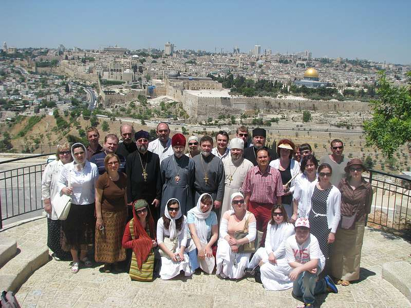
В Иерусалиме находится большое число греческих
храмов, которые принадлежат Иерусалимскому Патриархату. Большинство из
них стоят на местах, связанных с Евангельским повествованием. Вот и в
монастырь Креста паломники устремляются потому, что здесь по преданию
росло то трехсоставное дерево, из которого был сделан Крест Господень.
Раньше этот монастырь принадлежал Грузинской Церкви, и в свое время в
нем подвизался Шота Руставели. Недалеко расположен храм, построенный над
могилой святого Симеона Богоприимца, который принял на свои руки
Богомладенца Иисуса. Вспоминается молитва, звучащая на каждом вечернем
богослужении: «Ныне отпущаеши раба Твоего, Владыко…».
Поздно вечером в субботу мы отправились в храм Гроба Господня
(храм Воскресения), где каждую воскресную ночь совершается православная
литургия. Перед входом в храм мы увидели знаменитую рассечённую и
опаленную колону, из которой в XVI веке вышел благодатный огонь. Это
случилось, когда православного патриарха не пустили внутрь храма армяне,
чтобы самим получить благодатный огонь. Но огонь вышел снаружи храма из
этой колонны, где стояли и с плачем молились православные. Справа при
входе в храм начинаются ступени, ведущие на Голгофу. Здесь теперь
находится один из приделов храма. Там уже собралось множество верующих
разных национальностей, тоже приехавших на ночную службу. Отстояв
небольшую очередь, мы поклонились месту, где стоял крест с телом
распятого на нём Господа. Мне было сложно понять и представить, как под
сводами храма могут располагаться сразу несколько святынь, а именно:
Голгофа, гроб Господень, накрытый часовней - Кувуклией, и место, где
царица Елена в начале IV века нашла честный и животворящий Крест
Господень. Храм на самом деле огромен и внушителен, и имеет множество
приделов, расположенных на разных уровнях. Нам говорили, что когда он
был построен в IV веке, то являл собой великолепное зрелище. Но на
протяжении многовековой истории он неоднократно подвергался нападениям и
разорениям, и от его былой красоты остались лишь мозаика в некоторых
приделах храма, иконы, церковная утварь.
Затем мы прошли в центр храма к Кувуклии, часовне,
построенной над гробом Господним. Придел гроба Господня очень мал:
предваряет его придел Ангела. Одновременно войти могут лишь четыре
паломника, т.е. очередь двигается медленно, а за соблюдением очередности
и порядка строго следит монах Святогробского братства. У нас впереди
была еще вся ночь, чтобы успеть поклониться величайшей для каждого
христианина святыне. Потом я слышала от некоторых членов нашей группы,
что их так переполняли эмоции и радость, что они не успели оглядеться
возле гроба Господня. К счастью Господь даровал нам ещё одну возможность
побывать здесь. А тем временем наши отцы во главе с владыкой Симоном
служили литургию на Голгофе. Причастие паломники смогли принять в двух
местах храма: на Голгофе и в греческом храме напротив Кувуклии. Как же
милосерден к нам грешным Господь, что удостоил такого счастья! После
литургии мы смогли отдохнуть всего несколько часов, потому что впереди
нас ждал святой город Вифлеем.
Кто из нас не
слышал о ветхозаветной встрече святого праотца Авраама и его жены Сарры с
тремя путниками и о том, что та встреча произошла в тени дуба
Мамврийского в местечке Хеврон. Благодаря усилиям начальника Русской
духовной миссии архимандрита Антонина (Капустина) эта земля в XIX веке
была приобретена в собственность миссии, и здесь был построен храм, а
дуб был огорожен. Прошло уже более 4000 лет с той встречи, дуб постарел и
высох, но чудесным образом дал новые ростки. И сейчас возле него растут
два молодых дерева, которые назвали «Авраам» и «Сарра». Листья
Мамврийского дуба – а это так называемый «каменный дуб» - совсем не
похожи на листья русского дуба
- они намного меньше и имеют другую форму.
Ещё одним знаменательным событием явился приём
группы у патриарха Иерусалимского и всея Палестины Феофила. Его
резиденция находится в самом центре Иерусалима возле храма Гроба
Господня. Мы вместе с другими группами православных паломников были
приняты в просторном тронном зале, где к патриарху с приветственным
словом обратился владыка Симон, а отец Григорий преподнёс патриарху
красную головку голландского сыра - как символ пасхального яйца. В
ответном слове патриарх сказал всем присутствующим о значении
Воскресения Христова и о том, что каждый должен постараться сохранить
пасхальную радость в своей душе. По греческой традиции всем
присутствующим был подан греческий коньяк с шоколадом. После
фотографирования с патриархом, каждый из нас получил от него
благословение и маленький подарок в виде пасхального яйца, фотографии
Гроба Господня и брелка с чудотворной иконой Божией Матери
Иерусалимской. Встреча была краткой по времени, но наверняка запомнится
на всю жизнь! «Многая лета!» святейшему патриарху!
Незабываемыми были минуты, когда мы все молча, только творя
внутреннюю молитву, с маленькими крестиками в руках шли по крестному
пути Господа нашего Иисуса Христа - по улице, которая называется Виа
Долороса, т. е. «Скорбный путь». Крест, с которым мой муж прошёл этот
путь, теперь висит у нас дома.
Ах, как же
чудесно было оказаться 6 мая в праздник святого великомученика Георгия
Победоносца в Горненском монастыре! Мне приходилось бывать в разных
монастырях, но ни разу я не имела счастья присутствовать на дне Ангела
игуменьи. Праздничный день начался божественной литургией в главном
соборе, освященном в честь Всех святых в земле Российской проссиявших.
Литургию возглавил владыка Симон; пел хор духовной семинарии из
Тобольска. На праздничной трапезе одна из сестер читала вслух житие
святого Георгия (в монастырях на трапезе всегда читается житие святого,
память которого отмечается в этот день), которое прерывалось
поздравлениями многочисленных гостей и паломников. Матушка
настоятельница получила в этот день множество прекрасных букетов цветов,
подарки (в том числе и Делфтский фарфор от нашей группы), огромный торт
и сердечные поздравления.
А через день за
прощальным ужином несколько сестер монастыря и сама игуменья пели для
нас прощальную песнь "Прощальный час в Иерусалиме". Это было так красиво
и трогательно! У многих из нас навернулись слёзы на глазах. Вот
небольшой отрывок из этой песни: Путник: Сердцу милый, вожделенный,
Иерусалим, святейший град,
Ты прощай, мой незабвенный,
Мой поклон тебе у врат...
Иерусалим: Прощай и ты, любимец мой,
Благополучный тебе путь:
Когда приедешь ты домой,
Меня и там ты не забудь.
ZEVEN HOOGTEPUNTEN VAN MIJN BEDEVAART NAAR HET HEILIGE LAND
Victor van der Kloet
Het verzoek om iets te schrijven over de door mij als meest belangrijk
ervaren gebeurtenissen tijdens mijn bedevaart naar het Heilige Land
heeft mij gebracht tot een selectie van zeven hoogtepunten gedurende
deze reis.
Ik moet daar
onmiddellijk bij opmerken, dat als ik deze hoogtepunten ga beschrijven
misschien wel het belangrijkste element van de bedevaart onbeschreven
dreigt te blijven, en dat zijn de vele reizen die wij gemaakt hebben
naar een groot aantal heilige plaatsen, kerken en kloosters. Reizen door
het Heilige Land is een bijzondere ervaring, omdat het Land erg mooi is
en veel schoonheid heeft, en ook alle heiligdommen, waar wij geweest
zijn, de ikonen die wij gezoend hebben, de heilige resten die wij
vereerd hebben en het interieur van vele kerken van een bijzondere
schoonheid zijn. Ik zou deze beschrijving tekort doen, als ik de
indrukwekkende ervaring van onze reizen niet vooraf zou noemen, omdat
zij zo kenmerkend voor onze bijzondere bedevaart zijn geweest.
Maar mijn verhaal moet kort blijven, en daarom beperk ik
mij verder tot mijn zeven hoogtepunten, die ik in chronologische
volgorde zal beschrijven.
De Jordaan
Vooraf konden wij Jordaanhemden bestellen en dat
had volgens mij ook iedereen gedaan. Het heilige water van de Jordaan
heeft onze groep van 29 personen de kracht gegeven om gezamenlijk onze
reis tot een goede ervaring voor allen te maken. Daarom ben ik erg blij
met onze belevenis in het heilige water van de Jordaan op de eerste dag
van onze bedevaart.
Nachtelijke Liturgie bij het Graf van de Heer
Deze Liturgie in de Heilige Grafkerk in Jeruzalem
was bijzonder indrukwekkend. Het grote aantal gelovigen bijeen in dit
heilige gebouw om samen Christus te vereren, het aanraken van het
Heilige Graf, om op te gaan naar Golgotha en om in deze kerk de Heilige
Communie te ontvangen waren zeer bijzondere ervaringen.
De Heilige Communie was voor mij wel het hoogtepunt, omdat ik
mij deze dag steeds beter was gaan voelen. Door de eerdere nachtelijke
aankomst in Israel met het vliegtuig en de lange busreis van Tiberias
naar Jeruzalem de dag ervoor was ik erg vermoeid geraakt, en begon ik
erg op te zien tegen nog weer een nachtelijke activiteit door naar deze
Liturgie te gaan. Toen ik ook nog die ochtend hoofdpijn kreeg, zag ik
het helemaal niet meer zitten.
Maar toen ik
tijdens de middagdienst in het klooster gebiecht had, verdween de
hoofdpijn, en de uren daarna kon ik zo goed uitrusten, dat ik zonder
vermoeidheid de bus instapte. En tijdens de nachtelijke Liturgie begon
ik mij nog beter te voelen.
Terwijl de Liturgie
voortging, zochten wij naar de plaats waar de Heilige Communie zou
worden uitgedeeld, en min of meer door toeval kwamen wij daar
uiteindelijk ook uit. Deze ruimte was erg mooi, zodat ik mij heel erg
goed en gelukkig voelde, ook in fysieke zin. Het is een wonder van God
hoe een mens soms in korte tijd zo kan veranderen van vermoeid en zwak
in sterk en gezond!
Audientie bij de patriarch van Jeruzalem
Deze audientie was uitgesteld van de dag voor de
nachtelijke Liturgie naar twee dagen later. Wij hadden al op
verschillende andere Grieks-Orthodoxe plaatsen kennis gemaakt met de
Griekse gastvrijheid om ons Griekse koffie in te schenken, ons zoete
lekkernijen aan te bieden en de likeurdrank ouzo.
Ook bij de patriarch werden wij zeer gastvrij onthaald. Natuurlijk was
ik het die de Griekse cognac die geschonken werd over zijn kleren wist
te morsen, maar dit bedrijfsongeval werd ruimschoots goed gemaakt door
de vriendelijkheid die ons ten deel viel. Er waren tolken om het
gesprokene voor onze groep en andere Russische groepen te vertalen, en
allemaal kregen wij van de patriarch een rood paasei en andere attenties
mee.
De kruisweg
Deze belangrijke tocht, die velen als het hoofddoel
van een bedevaart naar Jeruzalem zullen zien, maakten wij 's middags na
de audientie bij de patriarch.
Van tevoren
waren wij gewaarschuwd voor de mogelijke dingen die ons onderweg zouden
kunnen afleiden, zoals de vele koopwaren die op veel plaatsen worden
aangeboden, de handelaren en andere mensen die op ons geld uit kunnen
zijn.
Het eerste deel van de weg was vrij
rustig. Na het bezoek aan het huis van Pilatus bleek echter de SD-kaart
van onze camera helemaal vol te zijn. Wij probeerden er snel een te
kopen, en deze vervolgens ook in de camera te plaatsen. Dat ging echter
niet zo makkelijk, en toen het eenmaal gelukt was, waren wij de rest van
de groep kwijt. Lang leverde ons zoeken niets op, maar uiteindelijk
wist een Arabische koopman ons te vertellen, dat de anderen naar
Lithostrotos waren gegaan. Lithostrotos is de plaats, waar Pilatus als
rechter zitting had. Het gebouw omvat echter ook een complex van gangen,
waardoor vroeger het water voor de Stad zijn weg vond.
Gelukkig waren wij weer herenigd met de groep en na het bezoek
aan Lithostrotos vervolgden wij onze weg. Nu kwamen wij in het drukke
gedeelte met allemaal winkels en stalletjes. De heerlijke geur van vers
gemalen Arabische koffie kwam ons tegemoet, maar met een kruis in de
hand gingen wij door naar ons doel en kwamen uiteindelijk aan bij de
Heilige Grafkerk. Opnieuw gingen wij naar het graf van Jezus om Hem daar
te aanbidden en zijn Liefde tot ons te laten komen.
Liturgie in de kathedraal van het klooster en ontvangst door moeder overste Georgia
Op 6 mei was het de naamdag van moeder Georgia,
overste van het Bergklooster, waar wij te gast waren. Ter ere van de
heilige Georgius Overwinnaar was er een goddelijke Liturgie in de
kathedraal van het klooster. Deze kathedraal is werkelijk schitterend in
zijn schoonheid, zowel van buiten met zijn prachtige koepels op de
helling van de heilige Berg waar hij staat, als van binnen met een hele
mooie ikonostase en ikonen in de kerk. Wij voelden ons tijdens de dienst
heel erg op ons gemak, omgeven als wij waren door zo veel schoonheid in
deze kathedraal.
's Avonds werden wij door
moeder Georgia uitgenodigd om haar te bezoeken. Zij liet ons haar tuin
zien die zij met liefde onderhoudt en die aan bijzondere planten en
bomen plaats biedt. Vanuit haar tuin is er een schitterend uitzicht op
de Stad Jeruzalem. Ook leidde zij ons door haar huis. Wij kwamen in een
grote zaal met mooie ikonen en schilderijen. En vervolgens werd ons de
salon getoond, waar zij graag mensen ontvangt, een aangename en prettige
kamer die sfeervol is ingericht. Daar ontvingen wij allen een
bijzondere attentie: een stukje van de eik van Mamre, die wij twee dagen
eerder hadden bezocht, een boekje over het Bergklooster en een ikoon
van de heilige Moeder Gods die Elisabeth op de Berg ontmoet.
Het was erg prettig om door moeder Georgia te worden
ontvangen, omdat zij zo liefdevol haar gasten toespreekt en al snel haar
liefde en toewijding tot in het hart van iedereen die haar gast is
doordringen.
De zee bij Jaffa
's Middags op 6 mei bezochten wij Lidda, waar een
kerk en het graf van de heilige Georgius Overwinnaar zijn en wij zijn
heilige resten vereerd hebben. Vervolgens reisden wij naar de Russische
Geestelijke Missie "de rechtschapen Tabita" in Jaffa, waar wij gastvrij
werden ontvangen met drankjes en lekkernijen.
Daarna was er tijd om naar het strand aan de Middellandse Zee te gaan.
Vooraf waren wij gewaarschuwd, dat de zee soms gevaarlijk kan zijn en
wel eens mensen heeft meegesleurd, die dit niet overleefden. Toch hadden
wij de zegen gekregen om ons met de nodige voorzichtigheid in zee te
wagen. En dus stond ik daar temidden van broeders, zusters, priesters en
bisschop tegenover golven die aan onze Noordzeekust niet zo'n hoogte
bereiken en ruimschoots groter waren dan wijzelf.
Het was lekker om het spel met de golven aan te gaan, al was de
temperatuur van het water ook daar begin mei redelijk fris. Het was mooi
om op de golven weer richting strand geduwd te worden, maar daarna weer
een paar meter de zee in te gaan en zo de golven toch de baas te zijn.
De kracht van de branding deed goed beseffen hoe klein en nietig wij als
mens aan de ene kant zijn, maar aan de andere kant toch in staat zijn
om de natuur naar onze hand te zetten.
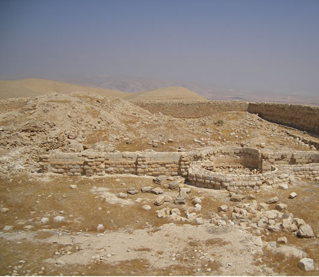
De 40-dagen berg
De laatste dag van onze bedevaart bestond uit een
bezoek aan Jericho en Bethanie. De reis naar Jericho voerde door de
woestijn van Judea, van 800 meter boven zeeniveau naar 300 meter
daaronder. Onderweg zagen wij rondtrekkende Bedoeinen met kamelen en in
Jericho bezochten wij de boom van Zacheus.
Vervolgens gingen wij naar de 40-dagen berg, de plaats waar de duivel
Jezus heeft proberen te verleiden. Op enige afstand van de top staat een
Grieks klooster vanwaar men een goed uitzicht heeft en in de diepte
naar beneden kan kijken.
Wij besloten verder te
gaan en de top van de 40-dagen berg te beklimmen, waarvoor wij echter
een deur van een binnenplaats van het klooster moesten openen. Een
intensieve zoektocht naar de daarvoor bestemde sleutel volgde, totdat de
secretaris van onze kerk voorstelde om toch gewoon de sleutel te
proberen die vlak naast de deur aanwezig was! De deur bood toegang tot
een kronkelig pad naar de top en daar hadden wij op de fundamenten van
een nog ouder klooster een prachtig uitzicht rondom.
Daarna daalden wij weer af en gingen terug naar Jericho. 's Middags
brachten wij een kort bezoek aan de Dode Zee en daarna gingen wij via
Bethanie, waar wij het graf van Lazarus bezochten, terug naar Jeruzalem.
Dit was het laatste deel van onze bedevaart, voordat wij 's nachts naar
Tel Aviv zouden gaan om de terugvlucht te aanvaarden.
Met de zeven voorgaande hoogtepunten hoop ik een
goede indruk te hebben gegeven van de zeer boeiende bedevaart die wij
gemaakt hebben. Een achtste hoogtepunt, dat ik nog zou kunnen noemen is
voor mij de kennismaking met de Palestijnse bevolking. Van tevoren niet
wetende wat te moeten verwachten van het contact met de verschillende
bevolkingsgroepen in Israel, was ik aangenaam verrast door de
vriendelijkheid, die ik op Palestijns gebied ontmoette. De Joden zijn
afstandelijker, hebben hun eigen welvaartsstaat ontwikkeld en lijken
vooral trots daarop en op zichzelf. Natuurlijk was het ook zo, dat in
Palestijns gebied men vooral graag dingen aan ons wilde verkopen, maar
afgezien daarvan heb ik toch het gevoel dat men daar makkelijker contact
met de mensen legt en zij vriendelijker zijn dan in Joods gebied.
Het is jammer, dat het conflict tussen Israeli's en
Palestijnen zo groot is terwijl het toch oplosbaar zou moeten zijn. De
huidige situatie van een staat, waar niet iedereen gelijke rechten
heeft, is duidelijk niet houdbaar, en het dieptepunt tijdens de
bedevaart vond ik dan ook de confrontatie met de afscheidingsmuur, waar
wij op een gegeven moment langsreden. Dit symbool van haat en
tegenstellingen en menselijk onvermogen om in vrede samen te leven is
toch een zaak die eigenlijk niet zou mogen bestaan. Maar laten we hopen,
dat ook deze muur eens zal vallen, en daarbij vrede zal ontstaan!
Ik laat mijn verhaal hierbij. De bedevaart was een
goede en indrukwekkende ervaring en ik kan iedere orthodoxe gelovige
aanbevelen om zich geestelijk voor te bereiden op een bedevaart naar het
Heilige Land.
| 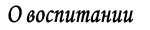 |
КАК МЫ ВОСПИТЫВАЕМ
Лариса Мэулвейк
| В
нашем храме во время совершения литургии всегда присутствует много
детишек. Все они сияют своей беззаботностью, все они старательно убраны
мамами в праздничные наряды. Но, конечно, не все ведут себя
соответственно церковному уставу. Этим они отвлекают от службы всех
присутствующих. И тут каждая мама, наверное, задается вопросом, а все ли
я делаю правильно?
Задача всех родителей:
привести свое чадо к Богу всеми доступными ему средствами – это всем нам
известно. Все прилагают к этому усилия по-своему, у каждого
индивидуальный стиль воспитания. Немалую роль в этом играет личный опыт,
пример собственных родителей и окружающей среды.
Часто возникает конфликт между самими родителями, взгляды расходятся
даже в основных принципах воспитания. Очень важно начать с этого и
договориться между собой, чтобы не было дальнейших разногласий и впредь
придерживаться выбранной линии поведения по отношению к воспитанию
детей. Постоянство в этом случае, как мне кажется, играет определяющую
роль.
Но во главу любого воспитания мы должны,
прежде всего, ставить любовь и терпение. По поводу первой составляющей
есть замечательные слова у Льва Толстого: «Ребенок бережет свою душу,
как веко бережет глаз, и без ключа любви никого не пускает в нее». Еще
говорят, что ребенок нуждается в любви больше всего тогда, когда он
меньше всего ее заслуживает. Не стоит забывать об этом. А о важности
терпения знают все христиане. Его нужно проявлять ко всем ближним, но
прежде всего к детям, ведь их сущность, как чистый лист бумаги, сами они
греха не имеют, за исключением родительского. Через детей Господь нас
испытует и наказует.
Говоря о воспитании, стоит
отметить важность именно дошкольного воспитания. Этот отрезок времени
является определяющим в вопросе формирования характера ребенка. Задатки,
конечно, заложены в большой степени генетически, но среда, в которой
растет ребенок, является не менее важным фактором в последующем
формировании совокупности привычек, которые в дальнейшем будут
доминировать в характере.
Поэтому и любовь к
молитве, уважение и почитание святыни мы должны прививать сразу же с
момента рождения ребенка. А поскольку научно доказан тот факт, что и в
утробе матери ребенок способен сопереживать, то можно в этом смысле
начинать процесс воспитания уже и с этого момента.
Многие родители боятся предлагать малышу поститься. Ведь растущему
организму так необходим определенный набор веществ для его физического
здоровья. Но мы забываем в таком случае о духовном здоровье, которое
объективно гораздо важнее и которое определяет наше физическое здоровье.
На мой взгляд, никогда не будет лишним ограничить
ребенка хотя бы в потреблении сладостей и в количестве просматриваемых
мультфильмов во время постных дней. Ведь информация-то запишется на
бессознательном уровне и уже в более взрослом возрасте не будет таким
переломным периодом начало соблюдения поста.
Главным методом воспитания для меня является беседа и личный пример. Нам
всегда не хватает времени для детей, когда они задают бесконечное
количество вопросов. А потом все меняется своими местами. Когда мы
осознаем необходимость диалога, детям он оказывается ненужным. Мы хотим
говорить, но нас уже не хотят слушать.
Не будем
забывать, как банально это ни звучит, что мы в ответе за души наших
детей перед Богом и с трепетом подойдем к вопросу воспитания наших чад.
Сейчас очень много литературы о воспитании детей,
она доступна. Нужно только немного потрудиться, выделить время и часто,
прочитав книгу, можно сделать для себя важные открытия.
Будет нелишним выписать самое главное в качестве правила и в
трудные моменты, во время конфликтных ситуаций, мысленно представить
перед собой этот лист бумаги с правилом, взятым вами на вооружение. А
еще практичнее просто приклеить этот лист на видном месте, как это
нелепо не звучало бы, и периодически перечитывать написанное, каждый раз
по-новому осмысливая каждую фразу.
Мне кажется,
есть необходимость перечислить 10 наиболее встречающихся ошибок
родителей в воспитании детей (знаю из своего опыта). Надеюсь, что вы
самоутвердитесь в роли родителя, ознакомившись с этим списком, так как
ваш стиль воспитания исключает подобное поведение. 1. Обещание больше не любить ребенка.
2. Безразличие.
3. Слишком много строгости.
4. Излишнее баловство ребенка, посредством чего ребенок становится беспомощным и одиноким.
5. Навязывание роли друга со стороны родителя по отношению к ребенку.
6. Поощрение деньгами.
7. Попытка воплотить наполеоновские планы,
перезагрузка ребенка, в результате чего у ребенка не остается времени
для личных дел.
8. Слишком мало ласки, которая
так необходима и помогает детям чувствовать себя любимыми и придает им
уверенности в себе.
9. Ваше настроение. Еще
А.П. Чехов отмечал, что дети святы и чисты и нельзя делать их игрушкой
своего настроения.
10. Слишком мало времени у родителей для детей, в результате чего дети ищут родственные души среди чужих.
Да, слишком много требований к родителям, скажете вы, но никто и не
говорил, что воспитывать легко. У.Э. Чэннинг сказал по этому поводу
замечательные слова: «Для воспитания ребенка требуется более
проникновенное мышление, более глубокая мудрость, чем для управления
государством». Успехов желаю и вам, дорогие родители, и себе в этом
нелегком деле.
| 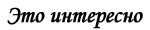 |
О МИСТИЧЕСКОЙ КРАСОТЕ ЦЕРКОВНОГО ЯЗЫКА
Архимандрит Рафаил (Карелин)
| Древний
язык ближе к внутреннему логосу - языку духа, языку религиозной
интуиции и молитвенных созерцаний. Это язык не рассудка, а сердца, язык
глубоких гностических проникновений, язык напряженной духовной энергии и
особой динамики. Древние языки вызывают в человеческой душе нечто вроде
припоминаний о потерянной человеком способности внутренних
непосредственных передач своих мыслей, восприятия другой души и озарений
от Бога.
Есть сокровенный, внутренний язык,
который глубже внешнего языка, нуждающегося в форме слова.
Профористические (внешние) языки все больше отдаляются от своего центра -
духовного логоса, все больше дифференцируются и материализируются.
Новые языки обращены преимущественно к рассудку человека - аналитической
способности его разума, низшей по сравнению с духовной интуицией. Они
способны также выразить эмоциональные и страстные состояния человека; но
для той области духа, которая проявляет себя в молитвенном порыве,
новые языки оказываются вялыми, бессильными, как мышцы дряхлого старика.
Сторонники языковой реформы богослужения
утверждают, что на новом, современном языке литургия будет более
понятной. Но литургия, сама по себе, тайна. Она не может стать понятной
на вербально-семантическом уровне, иначе можно было бы понять и усвоить
литургику с книгой в руках за письменным столом.
Литургия - это ни повествование, которое может быть подробно
разъяснено, ни загадка, которую можно разгадать, ни задача, которую надо
разрешить. Богослужение – это включенность человека в духовную реалию, а
средством для этого является воздействие на душу человека всего
духовного поля Церкви: храмовой архитектуры и убранства, иконописи и
богослужебных напевов, а самое главное - сила молитв священнослужителей и
народа, находящихся в Церкви. Про святого Иоанна Кронштадтского
рассказывали, что когда он совершал литургию или молча молился на
проскомидии, люди чувствовали явно, почти физически, силу его молитв и
благодатную помощь.
Древней язык ближе к
внутреннему логосу, поэтому он имеет большее воздействие на человеческое
сердце. Странное явление: иногда фраза на славянском языке, минуя
аналитический рассудок человека, струей горячего света озаряет, как
будто открывает его сердце, и оно трепещет так, как душа странника,
который после дальнего пути увидел огни отеческого дома. Здесь
происходит то, что мы можем не вполне точно назвать - припоминанием.
Человек вспоминает о потерянном рае и о том языке, которому повиновались
все живые существа, как царю земли, на котором он беседовал с ангелами.
Здесь мистика и обаяние языка: древний священный
язык трогает человеческое сердце, заставляет звучать сокровенные струны
души. Модернисты не знают и не чувствуют этого; они хотят древний язык
заменить новыми языками для того, чтобы была понятнее семантика слова,
которая не делает понятнее тайну богослужения. Кроме того, в
богослужении существует язык обрядов и ритуалов, не менее важный, чем
словесный язык. Этот символический язык еще менее понятен, но он служит
средством включенности человека в живую реалию происходящих событий.
Если мы хотим сделать богослужение доступным для
нашего плоского рассудка, то должны сделать понятными церковные обряды:
заменить их словесной интерпретацией или перевести их на язык
театральной пантомимы, то есть, превратить обряд из многогранного
священного символа, в мимический жест. Что же останется тогда от
литургии - назидательное представление? Когда мы говорим, что литургия
это выражение земной жизни Христа Спасителя, то мы вовсе не имеем в
виду, что литургия - инсценировка Евангелия; литургия - это возможность
для человека посредством священных символов самому стать участником
библейских событий, внутренне воспринять Голгофскую Жертву, как Жертву,
совершенную лично для него, а Воскресение Христа - как воскресение своей
души.
Мы сказали, что древний язык это
напоминание сердцу человека о его древнем отечестве - потерянном рае.
Современный язык - это язык школы и университета, язык улицы и рынка,
фабрики и вокзала. Он не помогает человеку вырваться из плена обыденных
повседневных дел, забот и интересов. Напротив, священный язык как бы
свидетельствует, что в храме мы общаемся с другим миром, с другой,
необычной для нас реалией. Не только между содержанием речи и чувством,
но также самой формой языка и чувством существуют ассоциативные связи.
Вообще форма не может быть совершенно абстрагирована от содержания.
Новый язык, хотим мы этого или нет, будет нести в себе новое содержание,
новую информацию, новый эмоциональный подтекст, выявить и определить
которые невозможно нашему логизирующему рассудку.
Проповедь в храме произносится на современном языке. Но молитву нельзя
смешать с проповедью или богословием. Проповедь рассказывает о духовном
мире, а молитва включает нас в этот мир; богословие указывает путь, а
молитва ведет по этому пути.
Мы говорим о
красоте древних языков. Что мы подразумеваем под этим? Мы думаем, что
это некое тайное созвучие ритмов сердца с ритмами древнего языка, и эта
гармония воспринимается нами как особая красота языка. Прочитаем вслух
внимательно псалмы на новом и древнем языках, какую разницу увидим мы в
своем внутреннем состоянии? Новый язык подобен воде, которая может
утолить жажду, но оставит душу холодной, а древний язык - вино, которое
веселит и радует сердце человека.
Редакция благодарит наших корреспондентов, предоставивших свои материалы для этого номера «Православного собеседника»:
Марию Рзаеву – Ван дер Клут;
Виктора Ван дер Клута;
Ларису Мэулвейк
С нетерпением ждем от прихожан и читателей новых рассказов, а также вопросов, комментариев и предложений.
Материалы принимают в электронном формате.
Рукописи не рецензируются и не возвращаются.
Мнение редакции может не всегда полностью совпадать с мнением авторов материалов.
При использовании авторских материалов нашего издания просьба ссылаться на «Православный собеседник»
Редакционная коллегия:
Протоиерей Григорий Красноцветов
(главный редактор)
Алевтина Захарова
(детский редактор)
Виктория Черепнина
Юлия Эссенберг
(выпускающий редактор)
| | |
|
ЧИТАЙТЕ В НОМЕРЕ: Вы можете скачать Приходской Листок
в формате "pdf" для последующей печати.
Дорогие братья и сестры!
Мы с вами находимся на долгом трудном, но
спасительном пути, пути, который ведет нас ко встрече с пасхальной
радостью, ко встрече с Воскресшим Спасителем! Как поститься? Что делать?
Как спастись? Вопросы, на которые можно долго и подробно со знанием
дела отвечать. Но замечательно просто сказал великий русский старец,
«убогий Серафим»: “Надо почаще спрашивать себя: Господи, как мне умирать
будет?” Если я в своем сегодняшнем состоянии предстану пред Богом – что
я Ему скажу? Что покажу? Чем оправдаюсь? «Как мне умирать будет?»
Попытаться ответить на этот вопрос – может, для кого-то в этом и будет
заключаться смысл Великого поста?!
В нашем
очередном номере особое внимание прошу обратить на объявление о детской
фольклорной группе. Большинство из вас были свидетелями замечательного
выступления маленьких участников этой группы на празднике Масленицы в
нашем приходе. Куда делись боязнь, застенчивость, неуверенность деток?
Все, как один светились радостью, все были РАДЫ участвовать в
выступлении. Молодцы! И еще раз низкий поклон директору русской школы
Алевтине Захаровой и руководителю фольклорной группы Марии Краснобаевой.
Теперь несколько слов о Масленице. В этом году
мы решили не составлять список желающих приготовить что-нибудь для
праздничного стола. Несколько воскресений подряд после проповеди я
объявлял в храме о предстоящем праздновании и просил приносить с собой
блины и другие угощения. Оставшихся совсем без блинов, думаю, не было,
но и сказать, что на столах было всего достаточно, я не могу. В
результате мы возвращаемся к нашей обычной практике – на Пасхальное
разговенье мы будем записывать всех желающих в наш специально для этих
целей разработанный список. Просьба ко всем – участвуйте активно!
На первой седмице Великого поста читался Канон преп.
Андрея Критского. В этом году я использовал перевод митрополита Никодима
(Ротова). Это стало возможным благодаря тому, что владыка Симон (в свое
время он был личным секретарем митр. Никодима, †1978) привез
хранившийся у него в Санкт-Петербурге перевод канона и поручил
священнику антверпенского прихода отцу Андрею Елисееву перепечатать и
разместить на сайте Брюссельской епархии. Что и было сделано. Низкий
поклон за труды!
В нашем храме у икон Спасителя
и Божией Матери (правая и левая стены) теперь висят замечательные
лампады – дар благотворителя! Его же трудами из Москвы привезены новые
венчальные короны! Спаси Господи!
Для нашего
домового храма «Скоропослушницы» на Персейнстраат из Киева старостой
Дмитрием Воронкиным был привезен подсвечник. Еще два новых подсвечника
прихожанка нашего храма Евгения с супругом привезли из Почаева. Оттуда
же ими привезена икона Почаевской Божией Матери, которая была освящена
на мощах преп. Иова Почаевского. А Ксения, у которой недавно родился сын
Максим, подарила храму Жировицкую икону Божией Матери. Благодарим за
дары!
На Светлой седмице, если Господь все
устроит, начнется паломническая поездка во Святую землю большой группы
наших прихожан, которую возглавит владыка Симон. Некоторые изменения
претерпит обычное расписание богослужений на данный период. Следите
внимательно за расписанием! Просим сугубых молитв!
Уважаемые читатели, дорогие братья и сестры!
У редакции имеется лишь одно, но существенное
пожелание. Оно, впрочем, красной нитью проходит во всех редакционных
обращениях: присылайте свои материалы! Давайте совместными усилиями
делать «Собеседник» содержательным, интересным, уникальным! Это может
произойти только благодаря вашему участию в общем деле!
Бог в помощь!
Уважаемые прихожане!
У желающих появилась возможность приобщить детей к
культуре, обычаям и обрядам, к чудодейственной силе русской народной
песни.
Издавна жизнь русского человека с самого
рождения была связана с песней. Песня сопровождала его и в будни, и в
праздники; да и все обычаи и обряды в старину были наполнены песнями.
Ласковая мамина колыбельная остаётся с нами навсегда; подрастают
ребятишки, и звучат весёлые припевки, считалочки, загадки, потешки.
Русская песня многообразна. Яркая многоголосная на
юге, холодноватая скромная на севере, и особенная лихая казачья песня, и
разноголосица других мест России. И всё это богатство сохранило,
донесло до нас устное народное творчество – фольклор.
Русская песня – это русская душа, крепкая своими традициями. А
традиции живут нашими стараниями. Русская школа «Матрёшка» в Роттердаме
предлагает занятия у профессионального педагога-фольклориста
Краснобаевой Марии Алексеевны.
Занятия проходят по субботам с 14.15 до 15.15 по адресу: Stationssingel 70, 3033 HJ Rotterdam
Интернет-сайт: http://www.russischeschool-rotterdam.nl/
Запись и предварительная информация по телефону: 06 27 407856.
Богослужения
совершаются не в наших обыкновенных комнатах и квартирах, а в
специально для этого предназначенных зданиях - храмах, или если нет
храма, в комнате, устроенной особым образом. Почему? Для чего это?
Наша ежедневная жизнь далека обычно от Бога и от
мысли о Нем. Для того, чтобы приблизиться к Нему, нам надо вырваться из
обыкновенной, будничной обстановки и напомнить себе всем окружением о
Боге и Его Царстве. Для этой цели и служит храм.
Храм - это дом Божий, дом молитвы. Он отличается от других зданий на
земле тем, что освящается Божественной благодатью и священнодейственными
молитвами; в нем "всё свято, всё действенно, врачует и спасает
благодатию". Сам Господь дал людям еще в Ветхом Завете через пророка
Моисея указания, каким должен быть храм для богослужений; новозаветный
православный храм устроен по образцу ветхозаветного.
Как ветхозаветный храм (вначале - скиния) разделялся на три части:
святое святых, святилище и двор; так и православный христианский храм
делится на три части: алтарь, средняя часть храма и притвор.
Как святое святых тогда означало, так и теперь алтарь означает - Царство Небесное.
В Ветхом Завете во святое святых никто не мог
входить. И только первосвященник входил туда один раз в год, и то лишь с
кровью очистительной жертвы. Ведь Царство Небесное после грехопадения,
было закрыто для человека. Первосвященник же был прообразом Христа, и
это действие его (вхождение во святая святых) символически напоминало
людям, что придет время, когда Христос (Мессия) через пролитие Своей
крови, страданиями на кресте откроет Царство Небесное для всех. Вот
почему, когда Христос умер на кресте, завеса в храме, закрывавшая святое
святых, разорвалась надвое: с этого момента Христос открыл врата
Царства Небесного для всех, кто с верою приходит к Нему.
Святилищу соответствует в нашем православном храме средняя
часть храма. В святилище ветхозаветного храма никто из народа не имел
право входить, кроме священников. В нашем же храме стоят все верующие
христиане, потому что теперь ни для кого не закрыто Царство Божие.
Двору ветхозаветного храма, где находился весь
народ, соответствует в православном храме притвор, теперь существенного
значения не имеющий. Раньше здесь стояли оглашенные, которые, готовясь
стать христианами, еще не сподобились таинства крещения. Лишь иногда
тяжело согрешивших и отступивших от Церкви теперь временно посылают
стоять в притворе для исправления.
Православные
храмы строятся алтарем на восток - в сторону света, где восходит
солнце: Господь Иисус Христос есть для нас "восток", от Него воссиял нам
вечный Божественный Свет. В церковных молитвах мы называем Иисуса
Христа: "Солнце правды", "Восток имя Ему".
Каждый храм посвящается Богу, в тоже время нося имя в память того или
другого священного события или угодника Божия, например, Троицкий храм,
Преображенский, Вознесенский, Благовещенский, Покровский,
Михаило-Архангельский, и т. д. Если в храме устраиваются несколько
алтарей, каждый из них освящается в память особого события или святого.
Тогда все алтари, кроме главного, называются придельными или приделами.
Храм Божий по своему внешнему виду отличается от
прочих зданий. Большею частью, храм, в своем основании, устраивается в
виде креста. Это означает, что храм посвящен распятому за нас на кресте
Господу и что крестом Господь Иисус Христос избавил нас от власти
диавола. Часто храм устраивается в виде продолговатого корабля, это
означает, что Церковь, подобно кораблю, по образу Ноевого ковчега, ведет
нас по морю жизни к тихой пристани в Царстве Небесном. Иногда храм
устраивается в виде круга, этим напоминается нам вечность Церкви
Христовой. Может храм быть устроен и в виде восьмиугольника, как бы
звезды, означающей, что Церковь, подобно путеводной звезде, сияет в этом
мире.
Здание храма обыкновенно завершается
сверху куполом, изображающим собою небо. Купол же заканчивается вверху
главою, на которой ставится крест, во славу главы Церкви - Иисуса
Христа. Часто на храме строят не одну, а несколько глав, тогда: две
главы означают два естества (Божеское и человеческое) в Иисусе Христе;
три главы - три Лица Св. Троицы; пять глав - Иисуса Христа и четырех
евангелистов, семь глав - семь таинств и семь вселенских соборов, девять
глав - девять чинов ангельских, тринадцать глав - Иисуса Христа и
двенадцать апостолов, а иногда строят и большее количество глав.
Над входом в храм, а иногда рядом с храмом, строится
колокольня или звонница, то есть башня, на которой висят колокола.
Колокольный звон употребляется для того, чтобы
созывать верующих на молитву, к богослужению, равно и для того, чтобы
возвещать о важнейших частях совершаемой в храме службы. Звон в один
колокол называется "благовест" (благостная, радостная весть о
богослужении). Звон во все колокола, выражающий христианскую радость, по
поводу торжественного праздника и т. п., называется "трезвон". Звон
колоколов по поводу печального события называется "перезвон".
Колокольный звон напоминает нам о вышнем, небесном мире.
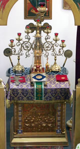Алтарь
Самая главная часть храма - алтарь.
В алтаре священнослужителями совершается богослужение и находится самое
святое место во всем храме - святой престол, на котором совершается
таинство святого Причащения. Алтарь устраивается на возвышении. Он выше
прочих частей храма, чтобы всем было слышно богослужение и видно, что
делается в алтаре. Слово "алтарь" значит возвышенный жертвенник.
Престолом
называется особо освященный четырехугольный стол, находящейся
посередине алтаря и украшенный двумя одеждами: нижней - белой, из
полотна, и верхней, - из более дорогой материи, чаще из парчи. На
престоле таинственно, невидимо присутствует Сам Господь как Царь и
Владыка Церкви. Прикасаться к престолу и целовать его могут только
священнослужители.
На престоле находятся: антиминс, Евангелие, крест, дарохранительница и дароносица.
Антиминсом
называется освященный архиереем шелковый плат (платок), с изображением
положения Иисуса Христа во гроб и, обязательно, с зашитою на другой его
стороне частицей мощей какого-либо святого, так как в первые века
христианства Литургия всегда совершалась на гробницах мучеников. Без
антиминса нельзя совершать Божественной Литургии (слово "антиминс" -
греческое, и означает "вместопрестолие").
Для сохранности антиминс завертывается в другой шелковый плат, называющийся илитоном. Он напоминает нам сударь (плат), которым была обвита голова Спасителя во гробе.
На самом антиминсе лежит губа (губка) для собирания частиц Св. Даров.
Евангелие, это - слово Божие, учение Господа нашего Иисуса Христа.
Крест - меч Божий, которым Господь победил диавола и смерть.
Дарохранительницей
называется ковчег (ящик), в котором хранятся Святые Дары для причащения
больных. Обычно дарохранительница делается в виде маленькой церкви.
Дароносицей называется маленький ковчежец (ящичек), в котором священник носит Святые Дары для причащения больных на дому.
За престолом стоит семисвечник, то есть подсвечник с семью лампадами, а за ним запрестольный крест. Место за престолом у самой восточной стены алтаря называется горним (высоким) местом; оно обычно делается возвышенным.
Налево от престола, в северной части алтаря, стоит
другой небольшой стол, украшенный также со всех сторон одеждою. Этот
стол называется жертвенником. На нем приготовляются дары для таинства
причащения.
На жертвеннике находятся священные сосуды со всеми принадлежностями к ним, а именно:
1. Св. Чаша, или потир,
в который перед Литургией с особыми молитвами вливается вино, смешанное
с водой, прелагаемое потом, во время Литургии, в Кровь Христову.
2. Дискос
- небольшое круглое блюдо на подставке. На нем полагается хлеб для
преложения его на Божественной Литургии в Тело Христово. Дискос
знаменует собою одновременно и ясли и гроб Спасителя.
3. Звездица,
состоящая из двух металлических небольших дуг, соединенных посредине
винтом так, чтобы их можно было или вместе сложить или раздвинуть
крестообразно. Она ставится на дискосе для того, чтобы покров не
прикасался к вынутым из просфор частицам. Звездица знаменует собой
звезду, явившуюся при рождении Спасителя.
4. Копие
- нож, похожий на копье, для вынимания агнца и частиц из просфор. Оно
знаменует то копие, которым воин пронзил ребра Христу Спасителю на
Кресте.
5. Лжица - ложечка, употребляемая для причащения верующих.
6. Губка или плат - для вытирания сосудов.
Малые покровы, которыми покрываются отдельно чаша и дискос, так и называются покровцами. Большой же покров, покрывающий и чашу и дискос вместе, называется возд'ухом,
знаменуя собою то воздушное пространство, в котором явилась звезда,
приведшая волхвов к яслям Спасителя. Все же вместе покровы изображают
пелены, которыми Иисус Христос был повит при рождении, а также и Его
погребальные пелены (плащаницу).
Ко всем этим священным предметам никому нельзя прикасаться, кроме епископов, священников и диаконов. 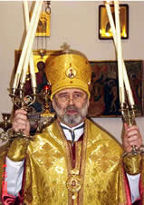В алтаре еще находится кадильница или кадило, употребляемое для каждения фимиамом (ладаном). Каждение установлено еще в ветхозаветной церкви Самим Богом.
Каждение перед святым престолом и иконами выражает
наше почтение и благоговение к ним. Каждение, обращенное к молящимся,
выражает пожелание, чтобы молитва их была усердной и благоговейной и
легко бы возносилась к небу подобно дыму кадильному и чтобы благодать
Божия так осеняла верующих, как окружает их дым кадильный. На каждение
верующие должны отвечать поклоном.
В алтаре также хранятся дикирий и трикирий, употребляемые архиереем для благословения народа, и рипиды.
Дикирием называется подсвечник с двумя свечами, знаменующими два естества в Иисусе Христе - Божеское и человеческое.
Трикирием называется подсвечник с тремя свечами, знаменующими нашу веру в Пресвятую Троицу.
Рипидами
или опахалами называются прикрепленные к рукояткам металлические круги,
с изображением на них херувимов. Раньше они делались из павлиньих
перьев и употреблялись для охранения св. Даров от насекомых. Теперь
веяние рипид имеет символическое значение - оно изображает присутствие
небесных сил при совершении таинства Причащения.
С правой стороны алтаря устраивается ризница.
Так называется помещение, где хранятся ризы, т. е. священные одежды,
употребляемые при богослужении, а также церковные сосуды и книги, по
которым совершается богослужение.
Алтарь отделяется от средней части храма особою перегородкою, которая уставлена иконами и называется иконостасом.
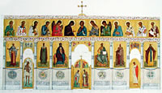В
иконостасе имеются три двери, или трое врат. Средние врата, самые
большие, помещаются в самой середине иконостаса и называются Царскими Вратами,
потому что через них Сам Господь Иисус Христос, Царь Славы, невидимо
проходит в Святых Дарах. Через царские врата никому не разрешается
проходить, кроме священнослужителей. У царских врат, со стороны алтаря,
висит завеса, которая, в зависимости от момента богослужения,
открывается или закрывается. Царские врата украшаются изображением икон:
Благовещения Пресвятой Богородицы и четырех евангелистов, т. е.
апостолов, написавших Евангелие: Матфея, Марка, Луки и Иоанна. Над
царскими вратами чаще всего помещается икона Тайной вечери.
Справа от царских врат всегда помещается икона Спасителя, а слева - икона Божией Матери.
Еще правее от иконы Спасителя находится южная
дверь, а слева от иконы Божией Матери находится северная дверь. На этих
боковых дверях изображаются архангелы Михаил и Гавриил, или первые
диаконы Стефан и Филипп, или же первосвященник Аарон и пророк Моисей,
иногда благоразумный разбойник. Боковые двери называются еще диаконскими вратами, так как через них чаще всего проходят диаконы.
Дальше, за боковыми дверями иконостаса, помещаются
иконы особенно чтимых святых. Первой иконой справа от иконы Спасителя
всегда бывает храмовая икона, то есть изображение того праздника или
того святого, в честь которого освящен храм.
На самом верху иконостаса помещается крест с изображением распятого на нем Господа нашего Иисуса Христа.
Если иконостасы устраиваются в несколько ярусов, т.
е. рядов, тогда обычно во втором ярусе помещаются иконы двунадесятых
праздников, в третьем - иконы апостолов, в четвертом - иконы пророков,
на самом же верху - всегда помещается крест.
Кроме иконостаса, иконы размещаются по стенам храма, в больших киотах,
т. е. в особых больших рамах, а также располагаются на аналоях, т. е. на
особых высоких узких столиках с наклонной поверхностью.
Возвышение, на котором стоит алтарь и иконостас, выступает
значительно вперед, в среднюю часть храма. Это возвышение перед
иконостасом называется солеей.
Середина солеи, напротив царских врат, называется амвоном,
т. е. восхождением. На амвоне диакон произносит ектении и читает
Евангелие. На амвоне же преподается верующим и святое Причастие.
По краям солеи, около стен храма (если есть место), устраиваются клиросы для чтецов и певцов.
У клиросов стоят хоругви,
т. е. иконы на материи или металле, прикрепленные к длинным древкам, в
виде знамен. Их носят во время крестных ходов, как церковные знамена.
В храме имеется канунник
(панихидный столик), на котором стоит изображение распятия и устроена
подставка для свечей. Перед канунником служатся панихиды, т. е.
заупокойные богослужения.
Посредине храма,
вверху, обычно подвешивается паникадило, т. е. большой подсвечник на
множество свечей. Паникадило зажигается в торжественные моменты
богослужения.
| |
О КНИГЕ ПРОТОИЕРЕЯ НИКОЛАЯ АГАФОНОВА «ИОАНН ДАМАСКИН»
Юлия Эссенберг
|
Сегодня в различных издательствах выходит огромное количество книг,
часть из которых маркирована издателями как «православная литература».
Бывает, что по прочтении некоторых таких книг возникает ощущение, что
если бы не написали, что данное произведение принадлежит к жанру
"православной" беллетристики, то никогда бы самостоятельно и не
догадаться об этом. Однако недавно прочитанная мною книга протоиерея
Николая Агафонова «Иоанн Дамаскин» к разряду таких книг никак не
относится. «Иоанн Дамаскин» - это исторический роман о горячо любимом и
чтимом автором христианском святом. По словам самого отца Николая,
«Иоанн Дамаскин» - это, конечно, не житие святого, это поэтическое
историческое повествование, роман, в котором автор делится своим
видением исторического периода, в который жил Иоанн Дамаскин, своим
пониманием его образа, его жизни.
Хочу
признаться, что я неоднократно читала и слышала историю образа иконы
Божией Матери «Троеручица», но всякий раз, как, к сожалению, многое из
прочитанного, детали стирались в памяти, оставляя только едва уловимую
канву, отпечатавшуюся в памяти. К своему стыду я уже не помнила, что
именно на св. Иоанне Дамаскине явила свое чудо Богородица, образ которой
был впоследствии назван «Троеручицей». Думаю, что после прочтения этой
книги в памяти навсегда останется детальное и пронзающее описание и
казни и чудесного исцеления святого, а имя его навсегда неразрывно
свяжется с чудотворным образом Богоматери. Ярко и образно воссоздает
автор исторические сцены романы, которые являются решающими для
понимания характера и подвига св. Иоанна Дамаскина. Из книги вы узнаете,
а, может, просто вновь напомните себе, что перу Иоанна Дамаскина
принадлежат тропари Октоиха, ирмосы канона, который поется на панихиде, и
всеми горячо любимого радостного и жизнеутверждающего Пасхального
канона «Воскресения день».
Думаю, что вы
получите удовольствие от исторического романа отца Николая Агафонова в
не меньшей степени, чем от, ставшими уже «бестселлерами», его коротких
рассказов, за которые он неоднократно был удостоен литературных и
церковных премий. О КНИГЕ «НЕПОЗНАННЫЙ МИР ВЕРЫ»
Мария Ван дер Клут-Рзаева
Книга "Непознанный мир веры" (издания Сретенского монастыря)
предназначена не только для верующих православных христиан, но и для
тех, кто ещё не обрёл веру в Бога, или пребывает в сомнениях, но
искренне и честно хочет разобраться в основном вопросе жизни человека –
вопросе о бытии Бога и отношениях между Богом и человеком. Сборник
содержит статьи на разные темы: чудеса в современном мире; о жизни,
смерти и воскресении; кто такие святые; Церковь и Россия; из жизни
знаменитых людей; путь к Богу.
Со страниц этого
сборника с читателем беседуют учёные, писатели, военоначальники,
общественные деятели. Открываются поразительные факты из истории и
современной жизни христиан, факты, которые тщательно, порой столетиями,
скрывались от большинства людей – богатейший материал для размышлений, а
выводы делать вам.
Физик Альберт Эйнштейн
говорил: "Я верю в Бога как в Личность и по совести могу сказать, что ни
одной минуты моей жизни я не был атеистом". Однажды учёному задали
вопрос, признаёт ли он историческое существование Иисуса Христа:
"Бесспорно! Нельзя читать Евангелие, не чувствуя действительного
присутствия Иисуса. Его Личность пульсирует в каждом слове".
А вот пример из жизни знаменитого святителя Луки
(Войно-Ясенецкого). На одном из официальных государственных приёмов в
конце пятидесятых годов к известному хирургу, профессору, прошедшему
сталинские лагеря и войну, архиепископу Луке подошёл один из членов
советского правительства. Он насмешливо сказал владыке:
- Вот недавно советские спутники летали в космос, а Бога там не обнаружили. Как вы это объясните?
- Будучи хирургом, - отвечал архиепископ, - я много
раз делал трепанацию черепа, но ума там тоже не обнаружил.
Православный читатель найдет в книге также немало полезных,
иногда весьма неожиданных, фактов для укрепления своей веры.
«Сам
Бог имеет великое попечение о воспитании детей. Для того Он и вложил
такое влечение (родителей к детям), чтобы поставить родителей как бы в
неизбежную необходимость пещися о детях». Святитель Иоанн Златоуст
| |
ЧИСТЫЙ ПОНЕДЕЛЬНИК
Иван Шмелев
| 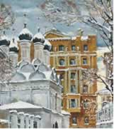Я
просыпаюсь от резкого света в комнате: голый какой-то свет, холодный,
скучный. Да, сегодня Великий Пост. Розовые занавески, с охотниками и
утками, уже сняли, когда я спал, и оттого так голо и скучно в комнате.
Сегодня у нас Чистый Понедельник, и все у нас в доме чистят. Серенькая
погода, оттепель. Капает за окном - как плачет. Старый наш плотник -
"филёнщик" Горкин, сказал вчера, что масленица уйдет - заплачет. Вот и
заплакала - кап... кап…кап... Вот она! Я смотрю на растерзанные бумажные
цветочки, назолоченый пряник "масленицы" - игрушки, принесенной вчера
из бань: нет ни медведиков, ни горок, - пропала радость. И радостное
что-то копошится в сердце: новое все теперь, другое. Теперь уж "душа
начнется", - Горкин вчера рассказывал, -"душу готовить надо". Говеть,
поститься, к Светлому Дню готовиться.
- Косого ко мне позвать! - слышу я крик отца, сердитый.
Отец не уехал по делам: особенный день сегодня,
строгий, - редко кричит отец. Случилось что-нибудь важное. Но ведь он же
его простил за пьянство, отпустил ему все грехи: вчера был прощеный
день. И Василь-Василич простил всех нас, так и сказал в столовой на
коленках - "всех прощаю!". Почему же кричит отец?
Отворяется дверь, входит Горкин с сияющим медным тазом. А, масленицу
выкуривать! В тазу горячий кирпич и мятка, и на них поливают уксусом.
Старая моя нянька Домнушка ходит за Горкиным и поливает, в тазу шипит, и
подымается кислый пар, - священный. Я и теперь его слышу, из дали лет.
Священный... - так называет Горкин. Он обходит углы и тихо колышет
тазом. И надо мной колышет.
- Вставай, милок,
не нежься... - ласково говорит он мне, всовывая таз под полог. - Где она
у тебя тут, масленица-жирнуха... мы ее выгоним. Пришел Пост - отгрызу у
волка хвост. На постный рынок с тобой поедем, Васильевские певчие петь
будут - "душе моя, душе моя" - заслушаешься.
Незабвенный, священный запах. Это пахнет Великий Пост. И Горкин совсем
особенный, - тоже священный будто. Он еще до свету сходил в баню,
попарился, надел все чистое, - чистый сегодня понедельник! - только
казакинчик старый: сегодня все самое затрапезное наденут, так "по закону
надо". И грех смеяться, и надо намаслить голову, как Горкин. Он теперь
ест без масла, а голову надо, по закону, "для молитвы". Сияние от него
идет, от седенькой бородки, совсем серебряной, от расчесанной головы. Я
знаю, что он святой. Такие - угодники бывают. А лицо розовое, как у
херувима, от чистоты. Я знаю, что он насушил себе черных сухариков с
солью, и весь пост будет с ними пить чай - "за сахар".
- А почему папаша сердитый... на Василь-Василича так?
- А, грехи... - со вздохом говорит Горкин. - Тяжело
тоже переламываться, теперь все строго, пост. Ну, и сердются. А ты
держись, про душу думай. Такое время, все равно как последние дни
пришли... по закону-то! Читай - "Господи-Владыко живота моего". Вот и
будет весело.
И я принимаюсь читать про себя
недавно выученную постную молитву. В комнатах тихо и пустынно, пахнет
священным запахом. В передней, перед красноватой иконой Распятия, очень
старой, от покойной прабабушки, которая ходила по старой вере, зажгли
постную, голого стекла, лампадку, и теперь она будет негасимо гореть до
Пасхи. Когда зажигает отец, - по субботам он сам зажигает все лампадки, -
всегда напевает приятно-грустно: "Кресту Твоему поклоняемся, Владыко", и
я напеваю за ним, чудесное: И свято-е... Воскресе-ние Твое Сла-а-вим!
Радостное до слез бьется в моей душе и светит, от
этих слов. И видится мне, за вереницею дней Поста, - Святое Воскресенье,
в светах. Радостная молитвочка! Она ласковым светом светит в эти
грустные дни Поста. Мне начинает казаться, что теперь прежняя жизнь
кончается, и надо готовиться к той жизни, которая будет... где? Где-то,
на небесах. Надо очистить душу от всех грехов, и потому все кругом -
другое. И что-то особенное около нас, невидимое и страшное. Горкин мне
рассказал, что теперь - "такое, как душа расстается с телом". Они
стерегут, чтобы ухватить душу, а душа трепещет и плачет - "увы мне,
окаянная я!" Так и в ифимонах теперь читается.
-
Потому они чуют, что им конец подходит, Христос воскреснет! Потому и
пост даден, чтобы к церкви держаться больше, Светлого Дня дождаться. И
не помышлять, понимаешь. Про земное не помышляй! И звонить все станут:
помни... по-мни!.. - поокивает он так славно.
В доме открыты форточки, и слышен плачущий и
зовущий благовест - по-мни.. по-мни... Это жалостный колокол, по грешной
душе плачет. Называется - постный благовест. Шторы с окон убрали, и
будет теперь по-бедному, до самой Пасхи. В гостиной надеты серые чехлы
на мебель, лампы завязаны в коконы, и даже единственная картина, -
"Красавица на пиру", - закрыта простынею.
Преосвященный так посоветовал. Покачал головой печально и прошептал:
"греховная и соблазнительная картинка!" Но отцу очень нравится - такой
шик!
Закрыта и печатная картинка, которую отец
называет почему-то - "прянишниковская", как старый дьячок пляшет, а
старуха его метлой колотит.
Эта очень
понравилась преосвященному, смеялся даже. Все домашние очень строги, и в
затрапезных платьях с заплатами, и мне велели надеть курточку с
продранными локтями. Ковры убрали, можно теперь ловко кататься по
паркетам, но только страшно, Великий Пост: раскатишься - и сломаешь
ногу. От "масленицы" нигде ни крошки, чтобы и духу не было. Даже
заливную осетрину отдали вчера на кухню. В буфете остались самые
расхожие тарелки, с бурыми пятнышками-щербинками, - великопостные. В
передней стоят миски с желтыми солеными огурцами, с воткнутыми в них
зонтичками укропа, и с рубленой капустой, кислой, густо посыпанной
анисом, - такая прелесть. Я хватаю щепотками, - как хрустит! И даю себе
слово не скоромиться во весь пост.
Зачем
скоромное, которое губит душу, если и без того все вкусно? Будут варить
компот, делать картофельные котлеты с черносливом и шепталой, горох,
маковый хлеб с красивыми завитушками из сахарного мака, розовые
баранки,"кресты" на Крестопоклонной... мороженая клюква с сахаром,
заливные орехи, засахаренный миндаль, горох моченый, бублики и сайки,
изюм кувшинный, пастила рябиновая, постный сахар - лимонный, малиновый, с
апельсинчиками внутри, халва... А жареная гречневая каша с луком,
запить кваском! А постные пирожки с груздями, а гречневые блины с луком
по субботам... а кутья с мармеладом в первую субботу, какое-то "коливо"!
А миндальное молоко с белым киселем, а киселек клюквенный с ванилью,
а... великая кулебяка на Благовещение, с вязигой, с осетринкой! А калья,
необыкновенная калья, с кусочками голубой икры, с маринованными
огурчиками... а моченые яблоки по воскресеньям, а талая, сладкая-сладкая
"рязань"... а "грешники", с конопляным маслом, с хрустящей корочкой, с
теплою пустотой внутри!.. Неужели и т а м, куда все уходят из этой
жизни, будет такое постное! И почему все такие скучные? Ведь все -
другое, и много, так много радостного. Сегодня привезут первый лед и
начнут набивать подвалы, - весь двор завалят. Поедем на "постный рынок",
где стон стоит, великий грибной рынок, где я никогда не был... Я
начинаю прыгать от радости, но меня останавливают:
- Пост, не смей! Погоди, вот сломаешь ногу.
Мне делается страшно. Я смотрю на Распятие. Мучается, Сын Божий! А Бог-то как же... как же Он допустил?..
Чувствуется мне в этом великая тайна - Б о г.
В кабинете кричит отец, стучит кулаком и топает. В
такой-то день! Это он на Василь-Василича. А только вчера простил. Я
боюсь войти в кабинет, он меня непременно выгонит, "сгоряча", - и
притаиваюсь за дверью. Я вижу в щелку широкую спину Василь-Василича,
красную его шею и затылок. На шее играют складочки, как гармонья, спина
шатается, а огромные кулаки выкидываются назад, словно кого-то отгоняют,
- злого духа? Должно быть, он и сейчас еще "подшофе".
- Пьяная морда! - кричит отец, стуча кулаком по столу, на
котором подпрыгивают со звоном груды денег. - И посейчас пьян?! В
такой-то великий день! Грешу с вами, с чертями, прости, Господи! Публику
чуть не убили на катаньи?! А где был болван-приказчик? Мешок с выручкой
потерял... на триста целковых! Спасибо, старик-извозчик, Бога еще
помнит привез... в ногах у него забыл?! Вон в деревню, расчет!..
- Ни в одном глазе, будь-п-кой-ны-с... в баню
ходил-парился... чистый понедельник-с... все в бане, с пяти часов, как
полагается... - докладывает, нагибаясь, Василь-Василич и все отталкивает
кого-то сзади. - Посчитайте... все сполна-с... хозяйское добро у
меня... в огне не тонет, в воде не горит-с... чисто-начисто...
- Чуть не изувечили публику! Пьяные, с гор катали? От
квартального с Пресни записка мне... Чем это пахнет? Докладывай, как
было.
- За тыщу выручки-с, посчитайте. Билеты докажут, все цело. А так было.
Я через квартального, правда... ошибся... ради
хозяйского антиресу. К ночи пьяные навалились, - катай! маслену
скатываем! Ну скатили дилижан, кричат - жоще! Восьмеро сели, а Антон
Кудрявый на коньках не стоит, заморился с обеда, все катал... ну,
выпивши маленько...
- А ты, трезвый?
- Как стеклышко, самого квартального на санках только
прокатил, свежий был... А меня в плен взяли! А вот так-с. Навалились на
меня с Таганки мясники... с блинами на горы приезжали, и с кульками...
Очень я им пондравился...
- Рожа твоя пьяная понравилась! Ну, ври...
- Забрали меня силом на дилижан, по-гнал нас
Антошка... А они меня поперек держут, распорядиться не дозволяют.
Лети-им с гор...не дай Бог... вижу, пропадать нам... Кричу - Антоша,
пятками режь, задерживай! Стал сдерживать пятками, резать... да с ручки
сорвался, под дилижан, а дилижан три раза перевернулся на всем лету,
меня в это место... с кулак нажгло-с...
А там,
дураки, без моего глазу... другой дилижан выпустили с пьяными. Петрушка
Глухой повел... ну, тоже маленько для проводов масленой не вовсе
тверезый... В нас и ударило, восемь человек! Вышло сокрушение, да Бог
уберег, в днище наше ударили, пробили, а народ только пораскидало... А
там третий гонят, Васька не за свое дело взялся, да на полгоре свалил
всех, одному ногу зацепило, сапог валеный, спасибо, уберег от полома. А
то бы нас всех побило... лежали мы на льду, на самом на ходу... Ну,
писарь квартальный стал пужать, протокол писать, а ему квартальный
воспретил, смертоубийства не было! Ну, я писаря повел в листоран, а
газетчик тут грозился пропечатать фамилию вашу...и ему солянки велел
подать... и выпили-с! Для хозяйского антиресу-с. А квартальный велел в
девять часов горы закрыть, по закону, под Великий Пост, чтобы было тихо и
благородно... все веселения, чтобы для тишины.
- Антошка с Глухим как, лежат?
- Уж в бане парились, целы. Иван Иваныч фершал
смотрел, велел тертого хрену под затылок. Уж капустки просят. Напужался
был я, без памяти оба вчерась лежали, от... сотрясения-с! А я все
уладил, поехал домой, да... голову мне поранило о дилижан, память
пропала... один мешочек мелочи и забыл-с... да свой ведь извозчик-то,
сорок лет ваше семейство знает!
- Ступай... -
упавшим голосом говорит отец. - Для такого дня расстроил... Говей тут с
вами!.. Постой... Нарядов сегодня нет, прикажешь снег от сараев
принять... двадцать возов льда после обеда пригнать с Москва-реки, по
особому наряду, дашь по три гривенника. Мошенники! Вчера прощенье
просил, а ни слова не доложил про скандал! Ступай с глаз долой.
Василь-Василич видит меня, смотрит сонно и показывает
руками, словно хочет сказать: "ну, ни за что!" Мне его жалко и стыдно за
отца: в такой-то великий день, грех!
Я долго
стою и не решаюсь - войти? Скриплю дверью. Отец, в сером халате,
скучный, - я вижу его нахмуренные брови, - считает, деньги. Считает
быстро и ставит столбиками. Весь стол в серебре и меди. И окна в
столбиках. Постукивают счеты, почокивают медяки и- звонко - серебро.
- Тебе чего? - спрашивает он строго. - Не мешай.
Возьми молитвенник, почитай. Ах, мошенники... Нечего тебе слонов
продавать, учи молитвы!
Так его все расстроило, что и не ущипнул за щечку.
В мастерской лежат на стружках, у самой печки, Петр
Глухой и Антон Кудрявый. Головы у них обложены листьями кислой капусты,
- "от угара".
Плотники, сходившие в баню,
отдыхают, починяют полушубки и армяки. У окошка читает Горкин Евангелие,
кричит на всю мастерскую, как дьячок. По складам читает. Слушают молча и
не курят: запрещено на весь пост, от Горкина; могут идти на двор.
Стряпуха, стараясь не шуметь и слушать, наминает в огромных чашках
мурцовку-тюрю. Крепко воняет редькой и капустой. Полупудовые ковриги
дымящегося хлеба лежат горой. Стоят ведерки с квасом и с огурцами.
Черные часики стучат скучно. Горкин читает-плачет: - ..и вси...
свя-тии... ангелы с Ним.
Поднимается шершавая
голова Антона, глядит на меня мутными глазами, глядит на ведро огурцов
на лавке, прислушивается к напевному чтению святых слов... - и тихим,
просящим, жалобным голосом говорит стряпухе:
- Ох, кваску бы... огурчика бы...
А Горкин, качая пальцем, читает уже строго:
"Идите от Меня... в огонь вечный... уготованный диаволу и аггелам его!.."
А часики, в тишине, - чи-чи-чи...
Я тихо сижу и слушаю.
После унылого обеда, в общем молчании, отец все еще
расстроен, - я тоскливо хожу во дворе и ковыряю снег. На грибной рынок
поедем только завтра, а к ефимонам рано. Василь-Василич тоже уныло
ходит, расстроенный. Поковыряет снег, постоит. Говорят, и обедать не
садился. Дрова поколет, сосульки метелкой посбивает... А то стоит и
ломает ногти. Мне его очень жалко. Видит меня, берет лопаточку, смотрит
на нее чего-то и отдает – ни слова.
- А за что
изругали! - уныло говорит он мне, смотря на крыши. - Расчет, говорят,
бери... за тридцать-то лет! Я у Иван Иваныча еще служил, у дедушки... с
мальчишек... Другие дома нажили, трактиры пооткрывали с ваших денег, а я
вот... расчет! Ну, прощусь, в деревню поеду, служить ни у кого не
стану. Ну, пусть им Господь простит...
У меня перехватывает в горле от этих слов. За что?! и в такой-то день!
Велено всех прощать, и вчера всех простили и Василь-Василича.
- Василь-Василич! - слышу я крик отца и вижу, как
отец, в пиджаке и шапке, быстро идет к сараю, где мы беседуем. - Так как
же это, по билетным книжкам выходит выручки к тысяче, а денег на триста
рублей больше? Что за чудеса?..
- Какие есть -
все ваши, а чудесов тут нет, - говорит в сторону, и строго,
Василь-Василич. - Мне ваши деньги... у меня еще крест на шее!
- А ты не серчай, чучело... Ты меня знаешь. Мало ли у человека неприятностей.
- А так, что вчера ломились на горы, масленая... и
задорные, не желают ждать... швыряли деньгами в кассыю, а билета не
хотят... не воры мы, говорят! Ну, сбирали кто где. Я изо всех сумок
повытряс. Ребята наши надежные... ну, пятерку пропили, может... только и
всего. А я... я вашего добра... Вот у меня, вот вашего всего!.. - уже
кричит Василь-Василич и враз вывертывает карманы куртки.
Из одного кармана вылетает на снег надкусанный кусок черного
хлеба, а из другого огрызок соленого огурца. Должно быть, не ожидал
этого и сам Василь-Василич. Он нагибается, конфузливо подбирает и
принимается сгребать снег. Я смотрю на отца. Лицо его как-то осветилось,
глаза блеснули. Он быстро идет к Василь-Василичу, берет его за плечи и
трясет сильно, очень сильно. А Василь-Василич, выпустив лопату, стоит
спиной и молчит. Так и кончилось. Не сказали они ни слова. Отец быстро
уходит. А Василь-Василич, помаргивая, кричит, как всегда, лихо:
- Нечего проклажаться! Эй, робята... забирай лопаты, снег убирать... лед подвалят - некуда складывать!
Выходят отдохнувшие после обеда плотники. Вышел
Горкин, вышли и Антон с Глухим, потерлись снежком. И пошла ловкая
работа. А Василь-Василич смотрел и медленно, очень довольный чем-то,
дожевывал огурец и хлеб.
- Постишься, Вася? -
посмеиваясь, говорит Горкин. - Ну-ка покажи себя, лопаточкой-то...
блинки-то повытрясем.
Я смотрю, как взлетает
снег, как отвозят его в корзинах к саду. Хрустят лопаты, слышится
рыканье, пахнет острою редькой и капустой.
Начинают печально благовестить - помни... по-мни... - к ефимонам.
- Пойдем-ка в церкву, Васильевские у нас сегодня поют, - говорит мне Горкин.
Уходит приодеться. Иду и я. И слышу, как из окна сеней отец весело кличет:
- Василь-Василич... зайди-ка на минутку, братец.
Когда мы уходим со двора под призывающий благовест,
Горкин мне говорит взволнованно, - дрожит у него голос:
- Так и поступай, с папашеньки пример бери... не обижай
никогда людей. А особливо, когда о душе надо... пещи. Василь-Василичу
четвертной билет выдал для говенья... мне тоже четвертной, ни за что...
десятникам по пятишне, а робятам по полтиннику, за снег. Так вот и
обходись с людьми. Наши робята хо-рошие, они це-нют...
Сумеречное небо, тающий липкий снег, призывающий благовест...
Как это давно было! Теплый, словно весенний, ветерок... - я и теперь его
слышу в сердце. 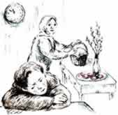
В доме суета. Мы торопимся на Пасхальную службу. Церковь далеко,
транспорт уже не ходит. Нам повезло: друзья тоже собираются в церковь –
обещали подвезти нас на своей машине. Муж укладывает в корзину,
застеленную чистым полотенцем, куличи, разноцветные яйца, у меня еще
более ответственная миссия – разместить в отдельной коробке пирамидки
творожных пасх. Наконец все уложено, и мы садимся в машину.
Сергей и Татьяна – наши друзья. Мы дружим, несмотря на
большую разницу в возрасте. Под нашим влиянием они даже венчались,
несколько раз ездили в монастырь, иногда посещают богослужения, но
дальше этого дело не идет.
У них растет сын
Виталий, умный, послушный ребенок, ему уже десять лет. Когда Виталик был
маленьким, его крестили, и я беседовала с ним о Боге. Он слушал с
интересом, а однажды сказал мне: «Тетя Лена! Вы говорите, что Бог есть, а
мне все время говорит кто-то другой: его нет, его нет!» Тогда Виталик
еще задумывался над такими вопросами, потому что, как все дети этого
возраста, был философом. Я помню, как поразили меня его слова. В сердце
маленького человечка, как на поле брани, шла борьба между Богом и тем
«другим». Теперь Виталик повзрослел и думать о Боге перестал. Сегодня
родители приказали ему ехать в церковь. Он с недовольным видом сидит в
машине. Мы стараемся растормошить ребенка. Я демонстрирую призовой фонд –
горсть шоколадных конфет, для тех, кто выстоит службу. Мать обещает
какой-то подарок, отец шутливо грозит поркой.
В
храме праздничная атмосфера, все оживлены, скоро начнется крестный ход.
Грустный Виталик сидит на лавочке. И вот все началось! Много веков
назад установлен этот порядок богослужения. Эта служба радостная,
Господь воскрес две тысячи лет назад и обещал, что все мы тоже
воскреснем. Смерти нет, ребята!
В середине
службы наваливается усталость. Надо подбодрить ребенка. Родители
отправляют его посмотреть машину, все ли в порядке, я выдаю несколько
самых вкусных конфет. Вернувшись с улицы, Виталик выглядит более
оживленным, но интересуется, скоро ли конец. Его искренне жаль. Мне
хорошо известно, как трудно стоять на службе, когда не понимаешь ее
смысла. Я стараюсь тихонько пояснять ребенку некоторые моменты уже
начавшейся утрени, а потом и литургии. Ему не интересно, но я продолжаю.
Когда хор запел: «Тебе поем», я шепчу Виталику: «Это самый главный
момент богослужения, твоя молитва идет прямо к Господу, на небо. Проси у
Бога то, чего тебе хочется больше всего». Ребенок поднимает на меня
свои большие измученные глаза и шепчет в сердечной простоте: «Спать!»
«Невольник – не богомольник» – говорит народная
мудрость. Служба закончилась, осталось только освятить приношения.
Родители отправляют Виталика в машину, и мы вскоре тоже идем к ней. На
заднем сиденье в неловкой позе спит наш невольник. Исполнилась его
молитва.
Время бежит быстро. Виталик уже
студент. В церковь он, конечно, не ходит. Обидно! Наверное, пока тот,
«другой», одерживает победу в его сердце. Буду надеяться, что, как
всякий русский человек, он задумается когда-нибудь о смысле жизни. Он
спросит себя: «Для чего живет человек – величайшее творение? Неужели для
того только, чтобы носить фирменные джинсы, есть пиццу по утрам,
смотреть комедии, жениться, сделать карьеру, а потом умереть и сгнить в
могиле под дорогим памятником?» Он обязательно найдет правильный ответ,
потому что путь русского интеллигента – от философии к Богу. Вот тогда и
придет он к Творцу, только уже настоящим богомольцем, а не невольником,
как в детстве. А то мучительное стояние в церкви, ради послушания
родителям, уже зачтено ему первой маленькой жертвой Богу.
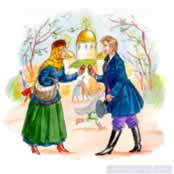 БАБУШКИНЫ РАССКАЗЫ
Елена Григорян
Расскажу вам про то, детки, как в стародавнее время праздновали у нас в
России великий праздник – Пасху Господню. За неделю до нее Господь
Иисус Христос въехал на ослике в Иерусалим, и все, от мала до велика,
встречали Его с радостью, устилали Ему путь пальмовыми ветками. А у нас
Христа встречают вербой. Возвратясь из храма в Вербное воскресенье,
деревенские бабы хлестали освященной вербой своих ребятишек,
приговаривая: «Верба хлест, бей до слез!» На Георгин день, 6 мая
по-нынешнему, выпускали впервые после зимы коровушек пастись на воле. И
их тоже похлестывали хозяйки освященной вербой со словами: «Благослови
тебя Господи и будь здорова!» А в больших городах на вербной неделе были
детские базары. Торговали там игрушками, вербой, цветами и сластями –
то-то было радости детворе!
А уж на Пасху в
русских городах и селах царило веселье! На Светлой неделе в городах для
простого народа устраивались качели, карусели, балаганы. Вся земля
Русская оглашалась радостным колокольным звоном – храмов-то ведь было
великое множество, и каждый мог в эти святые дни звонить в колокола. В
деревнях забавлялись разными играми, и не только ребятишки, а и взрослые
дяди: бились красными яйцами, катали их с горок – чье прокатится скорее
и дальше. А как же было не радоваться народу – ведь все тогда верили в
сердечной простоте, что до самого Вознесения сатана в аду лежит, не
шелохнется, а воскресший Господь ходит по Русской земле. То ли
странником, то ли нищим горемыкой Он покажется людям. Вот потому и
любили на Руси привечать странников и помогать беднякам: а вдруг это Сам
Господь?
А еще на Пасху солнышко играет, и до сих пор. Только не все это видят. Может быть, вы, ребятки, видели? ПРО МИТЮШУ
Елена Григорян
Федя как-то пожаловался бабушке на свою новую учительницу, мол, все ей
не так: пишу коряво, у доски стою криво, говорю себе под нос. «А может,
Федя, так оно и есть? – спросила бабушка. – Что носом-то зашмыгал?
Угадала? А ты попробуй-ка писать аккуратно, урок отвечать четко и стоять
у доски по-солдатски – вот увидишь, учительница к тебе и переменится.
Вот расскажу тебе историю.
Жили на свете мать с
отцом да их сын Митюша, семи лет. Хорошим человеком был Емельян –
работящим, грамотным, и любил посещать храм Божий. К тому же приучил он и
сынишку. Идут, бывало, из церкви в праздничный день, а дома уже обедать
приготовлено, и хозяйка, в чистом переднике, дожидается мужа с сыном у
ворот.
Счастливо жил Емельян, но в скором
времени он овдовел и остался с сыном. С год прожил Емельян вдовым, а
потом скучно стало без хозяйки, и надумал жениться во второй раз. Всем
хороша была молодая девица Мария, только не любила ребятишек. И когда
попросил ее Емельян не обижать Митюшку, Марья подумала про себя: «Как
же, дожидайся, по головке буду гладить твоего Митюшку, больно он мне
нужен». На Митюшку и глядеть не хочет, так в сторону и отворачивается.
Видел это Емельян и думал про себя: ничего, обойдется. А Митюшка решил
по-своему: «Надо угождать ей, а то бить будет – не родная». И начал, как
умел, угождать. Смотрит, бывало, за какое дело принимается мачеха,
сейчас и сам берется за то же. Воды ли принести, дровец, каморку ли
подмести, уж он скорее предлагает свои услуги: «Маменька, давай я
сделаю». А Марье нравится, что ее маменькой пасынок называет, перестала
коситься.
Через год брат у Митюшки родился –
Вася. Митюшка рад: принялся люльку качать, на руках носить, соски жевать
из баранок. Если бывало, прикрикнет на него за что-нибудь мачеха – он
скорее прощенья просить. Привязалась Марья к пасынку и не знала,
которого из двоих больше любит: своего ли Васю-крикуна или тихого,
послушного Митюшку. Бывало, купит Емельян кусок ситца, а Марья ему
первому сошьет рубашку и ворот красиво прострочит. Полюбил и Митюшка
мачеху. Бывало, сядет Марья на скамью кормить Васю, тут же и Митюша
прижмется рядышком; положит на ее плечо голову и начнет рассказывать,
что в азбуке вычитал. Емельян не раз заставал такую картину, и
радовалось его сердце.
Время летит быстро.
Вырос Митюшка, уехал из родительского дома, большим человеком стал.
Марья сильно по нему скучала, ждет не дождется, когда же приедет домой.
Вот так и получилось, что лучше родного сына стал
Митюша своей мачехе», – закончила бабушка свой рассказ. «Бабушка, –
спросил Федя, – а разве хорошо, что Митюшка был таким добрым и
почтительным из-за страха, что мачеха его поколотит?» – «Да, но только
вначале. А потом умягчилось сердце мачехи, и они полюбили друг друга».
| |
В ГОСТЯХ У ПРЕПОДОБНОГО СЕРАФИМА
Алевтина Захарова (окончание)
| 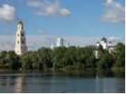
«Счастлив всяк, кто у убогого Серафима в Дивееве пробудет... от утра и
до утра, ибо Матерь Божия, Царица Небесная, каждые сутки посещает
Дивеево»
Преподобный Серафим Саровский
Второй день моего пребывания в Дивееве начался рано: на исповедь перед
литургией можно приходить с 5 часов утра. Помолившись и неспешно
собравшись, выхожу из гостиничного комплекса… Батюшки, ну и красота!
Раннее летнее утро в российской глубинке – посреди колосящегося поля с
васильками и ромашками вьется дорога к реке. За рекой, в буйной зелени,
несказанной красоты храмы Дивеевской обители. Замираю в восхищении и от
ощущения, что видела это и прежде. Конечно, как похоже на картину И.
Левитана «Тихая обитель». И река, и мостик, и храмы вдали. Из-за своей
тяги к путешествиям я много видела потрясающих видов в разных странах,
но этот, в силу глубокой духовной связи, задевает особенно, как-то
пронзительно. Слава Тебе, Господи! Подхожу к деревне, а навстречу мне
деревенское стадо. Пастух, щелкая кнутом, направляет его на выгон. Всё
как и 300 лет назад. Обращаю внимание на пастушьего помощника – рыжего
лохматого пса. Этот свое дело знает, снует среди коров и не дает ни
одной из них задержаться, травы с обочины ухватить.
По пути к монастырю сворачиваю на тропинку, ведущую к святому
источнику преподобной Александры. Окунаться в источник буду позже,
сейчас только лицо умою.
Заступница Усердная рода христианского
В Троицком соборе находится чудотворная икона
Божией Матери «Умиление» – «Всех радостей Радость», список с келейной
иконы преподобного, пред которой всегда молился и коленопреклоненно
скончался батюшка Серафим. На этом образе Богородица изображена в момент
произнесения Ею слов архангелу Гавриилу при Благовещении: «Се раба
Господня, буди Мне по глаголу твоему». Многих исцелял преподобный,
помазывая елеем из лампады перед образом Царицы Небесной. Дивеевским
сестрам батюшка говорил: «Вручаю вас Самой Царице Небесной Умилению, Она
вас не оставит!» Каждое воскресенье перед литургией по заповеди
преподобного пред иконой служится нараспев Параклисис - молебный канон.
После благодарственных молитв мы с матерью
Натальей, уединившись на монастырском кладбище, предавались беседам о
Серафимо-Дивеевской обители, о промысле Божьем, по которому это
удивительное место устроено. Так как время наше было ограничено и летело
оно очень быстро, я попросила монахиню посоветовать мне книги об
истории монастыря. Книги эти, среди них «Летопись Серафимо-Дивеевского
монастыря» (составил ныне прославленный священномученик митрополит
Серафим (Чичагов), я передала в библиотеку нашего прихода и рекомендую
для прочтения всем, кого заинтересовал этот рассказ. В «Летописи»
содержатся жития преподобного Серафима, преподобных жен Дивеевских и вся
история Дивеевской обители, а также пророчества святого старца о
будущих временах и его поучения.
Расставшись на
время с матерью Натальей, иду к источнику преподобной Александры
самостоятельно. Жаркий летний день в разгаре, и у источника, в отличие
от моего утреннего посещения, масса паломников. Спасаясь от жары и
ожидая очереди в купальню, народ ведет себя достаточно шумно. В
особенности несколько мужчин без возраста, которые «проповедуют» о конце
света, о сатанинском происхождении ИНН, паспортов и современного
мироустройства. Народ со смущением внимает всем этим речам; только с
появлением у источника священника «кликуши» спешно спасаются бегством, и
воцаряется благоговейная тишина, приличествующая святому месту. На
самом деле некая истеричность присутствует в Дивееве, и сталкивается с
этим всякий побывавший там. Как и испокон века на Руси у святых мест
всегда бывает странный люд. Мы беседовали с матерью Натальей об этом, и
она сетовала на такое веяние времени. Так, в некогда тихой деревне вдруг
лихорадочно стали скупать недвижимость, исходя из превратно
истолкованных пророчеств преподобного Серафима и надеясь таким образом
на спасение при окончании времен.
Теме этой
посвящены многие проповеди священников обители и их вразумления в таких
безумствах. Истинно православные христиане готовятся к радости грядущего
пришествия Христа Бога и Спасителя нашего в молитвах, посте и покаянии.
Надежды спастись от прихода антихриста, скупая дома в Дивееве или
других святых местах, – самообман и великое искушение. Спаси, Господи,
люди Твоя и благослови достояние Твое!
Вкус послушания
Среди множества чудесных и поучительных историй,
рассказанных мне матерью Натальей, была история об одной монахине
Феофании, которая подвизалась в монастыре еще при жизни преподобного.
Она несла послушание в трапезе – готовила еду для паломников.
Незатейливая монастырская каша из двух самых простых круп с добавлением
лишь воды и соли славится как удивительно вкусная среди паломников
обители по сей день. Как-то раз матушка Феофания стала роптать о своей
тяжкой доле в недовольстве послушанием, определенным ей. В это время
навестила ее другая монахиня, Прасковья Семеновна, которая раньше тоже
работала на кухне. С этой инокиней произошел чудесный случай, о котором
она и рассказала м. Феофании. В один из обычных дней, когда работы на
кухне было особенно много, управившись со всеми делами, полезла
Прасковья Семеновна на печь отдыхать. Вдруг дверь отворилась, и в кухню
вошли две Госпожи. И выглядело так, как будто одна из них была у другой в
гостях. Монахиня наша на печи сидит и робеет показаться – уж больно
необычными ей показались посетительницы. В это время Госпожи, негромко
переговариваясь, стали пробовать приготовленную еду. «Как вкусно все у
них!», – похвалила гостья. Тогда одна Госпожа сказала: «Все это потому
хорошо, говорю тебе, что это у них делается за святое послушание, с
постоянною молитвою и с благословения великого старца».
На следующий день позвал батюшка Серафим Прасковью Семеновну к
себе, а сам веселый такой, и говорит: «Великое дело – послушание,
матушка! Паче поста и молитвы! Ведь Сама Царица Небесная вашу пищу
пробовала и хвалила вас! Великое дело – послушание!»
Необыкновенной этой каши захотелось и мне отведать. С неким
скептицизмом направляюсь к трапезной для паломников. Рассуждаю по пути
так: паломникам, потрудившимся и проголодавшимся, любая каша, а еще и с
благословением, покажется пирожным. Я вот не перетрудилась, и накормили
меня уже в школьной трапезной замечательно, пойду попробую, что за каша
такая.
Трапезная для паломников под открытым
небом: только высокие столы и навесы. Людей очень много, несмотря на то,
что в Дивееве нет недостатка в пунктах питания – на соседних улицах
масса кафе, ресторанов и недорогих столовых. И очередей там нет. Все
вместе молимся перед раздачей еды. Трудники подносят новые котлы взамен
опустевших. Подходит и моя очередь: «Мне немного, пожалуйста». Еле
нахожу местечко, чтобы поставить миску с кашей. На вид – ничего
особенного, а на вкус – поверить не могу! Наверное, именно так мы
ощущали вкус еды в детстве, когда рецепторы не были еще испорчены
вкусовыми изысками. Почему-то становится горько при воспоминании о
посещении лучших ресторанов и недовольстве «недостаточной изысканностью
соуса».
Невесты Христовы
Среди мирян считается неэтичным спрашивать у
монаха, почему именно он избрал свой путь. Выбор этот, как мне кажется,
есть личная тайна между человеком и Богом, призвавшим его на это
служение.
Узнав, что я намерена написать
рассказ о паломничестве в Дивеево для «Православного собеседника»,
матушка Наталья рассказала немного о себе.
По
профессии она – учитель младших классов. Сразу после окончания
педагогического училища она получила благословение на монашеский путь. С
тех пор, говорит м. Наталья, ни разу Господь не попустил ей искушения в
виде сомнений в ее монашеском предназначении. Была только одна причина,
которая смущала: ее горячо любимая мама всегда мечтала о том, что дочь
сделает карьеру в сфере образования, станет директором школы. А в то
время юная послушница трудилась на постройке Дивеевского монастыря и не
вспоминала о дипломе учителя. Была только горечь, что ее любовь к Богу и
монашеству послужила поводом к огорчению близкого человека. Это
противоречие казалось неразрешимым, и обращалась инокиня со своей бедой в
молитвах ко Христу и к заступничеству батюшки Серафима, надеясь и веря,
что боль матери уймется со временем. Однако вскоре всё сложилось ещё
более чудесным образом. Была основана монастырская школа, и мать Наталья
получила новое послушание – стала учительствовать, а затем, по
благословению настоятельницы монастыря, стала директором быстро
развивающейся школы и студенткой заочного отделения Арзамасского
педагогического университета.
Матушка Наталья
напомнила мне, что, по словам о. Иоанна (Крестьянкина), есть два вида
крестоношения – это монашество и семейная жизнь. Поминая в молитвах
своих замужних подруг и родственниц, она скорбит о тех житейских
тяготах, которые тем приходится нести. «Монашеский путь – путь радости»,
– говорит она. «Наш Небесный Жених никогда не разлюбит, не отвергнет
послушных Его воле. Поэтому нам, монахиням, что на стройке работать, что
детишек учить – всё великое счастье и благость во славу Божию!
Монахини, как девы разумные, стремятся держать свой светильник всегда
наполненным елеем в ожидании Жениха. Потому как весь смысл недолгой
земной жизни в этом радостном ожидании. И всё в монастыре этому
способствует. А в миру, в супружестве столько суеты и искушений. Тяжело
ведь!» – сочувствует она. «Вот для нас, сестёр обители, по молитвам
батюшки Серафима, все Господь устраивает, только бы мы не отвлекались от
наших молитв и делания».
В таких беседах,
простых и задушевных, я постигала и поражалась огню Веры и Любви этой
русской девушки – инокини Натальи.
Мне
предстоял отъезд, а уезжать совсем не хотелось. Перед отъездом я
запланировала выполнить просьбы наших прихожан – подать записки на
литургию, заказать молебны и акафисты. С большой пачкой списков имен
подходим в лавочку. Монахиня Марфа, разбирая списки, интересуется, что
это у меня, мол, так много близких? Да, отвечаю, – прихожане нашего
прихода святого благоверного Александра Невского в Роттердаме. Матушка
Марфа, молится за наш приход и велит всем передавать поклоны. «И всем
расскажите там о нашей обители, это важно», – напутствует она.
«Расскажу, матушка, обязательно!»
Мать Наталья, совсем по-матерински, осеняет меня крестным знамением перед дорогой.
«Уж и не знаю, увидимся ли еще», – говорю я.
«Даст Бог – увидимся. А молитвенно мы уже будем соединены навсегда!»
| 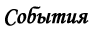 |
О ПОЕЗДКЕ НА ВСЕМИРНЫЙ РУССКИЙ НАРОДНЫЙ СОБОР
Юлия Эссенбергн |
Сообщение о XII Всемирном Русском Народном Соборе, проходившем в конце
февраля в Москве, хотелось бы начать с краткого определения того, что
такое этот Собор.
«Всемирный Русский Народный
Собор (http://www.vrns.ru/) — это международная общественная организация
и форум, место встречи людей, которые объединены единой целью — заботой
о настоящем и будущем России. В заседаниях Собора участвуют
представители власти, лидеры общественных объединений, высшее
духовенство традиционных религий России, деятели науки и культуры,
делегаты русских общин из ближнего и дальнего зарубежья. Региональные
отделения Собора открыты во многих городах России. ВРНС существует с
1993 года. Согласно Уставу организации, ежегодно под председательством
Главы Собора Святейшего Патриарха Московского и всея Руси Алексия II
проводятся Соборные съезды. Последний XI Соборный съезд ВРНС проходил в
Москве в период с 20 по 22 февраля 2008 года. 21 июля 2005 года
Всемирному Русскому Народному Собору был предоставлен специальный
консультативный статус при Организации Объединенных Наций».
XII Собор, проходивший в этом году, был посвящен теме молодежи.
Среди выступлений, прозвучавших на Соборе, особый
интерес для нас, живущих на чужбине, имеет, возможно, слово Первоиерарха
Русской Зарубежной Церкви митрополита Лавра (владыка Лавр скончался 16
марта в Неделю Торжества Православия. Упокой, Господи, душу раба
твоего!). Мне хотелось бы привести цитату из его выступления: «В наших
зарубежных условиях Церковь всегда была тем стержнем, вокруг которого
строилась наша жизнь. Церковь поддерживала русские благотворительные,
культурно-общественные, молодежные, спортивные и другие организации.
Церковь создавала сеть русских церковно-приходских школ и привлекала
детей к деятельному участию в церковной жизни в качестве алтарных
прислужников, чтецов и певцов. Ежегодно проводятся съезды для молодежи
по разной тематике — как епархиальные, так и всезарубежные. Устраиваются
паломничества, церковно-певческие конференции и т. д. Результаты всей
этой работы очевидны: молодежь, близкая Церкви уже в четвертом
поколении, сохранила свою веру, свою русскость и свой язык. Один ныне
покойный батюшка Русской Зарубежной Церкви, бывший священником в Шанхае у
святителя Иоанна (Максимовича), а потом и в Харбине, и в Австралии,
молодых людей всегда наставлял так: «Если вы будете участвовать в
церковной жизни, к примеру, петь в хоре или прислуживать, принимать
участие в работе прицерковного братства или сестричества, вы никогда не
будете отставать в русском языке, будете хорошо говорить по-русски и
никогда не отойдете от Церкви».
Многое из
сказанного на Соборе поражало сочетанием простоты и разумности, казалось
порой: как просто, а ведь своими словами так и не выразишь.
Митрополит Смоленский и Калининградский Кирилл (он в 2004
году возглавлял освящение нашего храма) большую часть своего выступления
в первый день работы Собора посвятил теме веры. «В детстве и юности,
даже если мы не получили никакого религиозного воспитания, каждый
интуитивно ощущает духовное измерение мира. Молодой человек неведомым
образом знает, что он не есть только материальное существо, а мир не
состоит только из видимых вещей. Нельзя пренебрегать этой интуицией.
Важно следовать ей. Как мы развиваем свою речь и мыслительную
способность, так необходимо откликаться и на духовные движения нашей
природы. Без усилий с нашей стороны эти способности останутся
неразвитыми или искаженными. Их уровень будет заметно снижаться вплоть
до полной потери.
Просвещенные умы человечества
никогда не отвергали духовной стороны человеческой природы. Например,
известный немецкий философ Иммануил Кант в одном из своих произведений
писал: «Признаюсь, что я очень склонен к утверждению о существовании в
мире нематериальных существ и к причислению к этим существам собственной
моей души».
Религия содержит знания о мире и
человеке не только как о материальных явлениях, но и как о творениях
Божиих, имеющих высокую цель и предназначение. Именно этому учит
православное христианство, к которому принадлежит большинство из
присутствующих на Соборе. Жизнь Церкви является той формой, в которой
люди совместно могут раскрывать свою духовную природу.
Но что такое Церковь? Церковь — это не здание определенной
архитектуры, не священник или епископ. Это только ее элементы. Церковь —
это форма жизни, возникающая из союза Бога и людей. Каждый верующий
человек является представителем Церкви. Церковь — это не нечто внешнее
по отношению к человеку; он сам — ее часть. Иногда люди говорят, что у
них «Бог в душе», и этого достаточно, а молиться с другими людьми в
храме или разделять с ними общее дело во имя веры не нужно. А разве
человеку не хочется разделить свою веру с другими? Человек — существо
общественное. Более того, Сам Бог явил Свое желание общаться с нами и
давать Свою помощь при условии, что мы будем любить не только Его, но и
наших ближних.
Сегодня многие молодые люди
обращаются к вере, к Церкви. Но еще большее число их сверстников
продолжает оставаться вне церковной жизни, несмотря на то, что они
являются людьми крещеными, считают себя православными. Но почему же
молодежь с таким трудом находит путь к храму, к живой, а не к формальной
вере? Наверное, можно назвать много причин. Но главная, на мой взгляд,
заключается в том, что, к сожалению, в Церкви недостает пастырей и людей
старшего поколения, которые могли бы со вниманием отнестись к молодому
человеку и помочь ему сделать первые шаги в вере. Из-за разрыва
преемственности поколений в атеистическое время сами взрослые люди
только недавно пришли к вере. Мало кто из них способен передать свой
опыт молодому поколению.
Есть еще одна причина, о которой мне хотелось бы сказать особо.
Некоторых молодых людей Церковь и в целом религиозный образ жизни
смущает тем, что он сопряжен с исполнением целого ряда правил. Кто-то
думает, что священники только тем и занимаются, что выдумывают разного
рода запреты. Наверное, для молодого человека нет ничего скучнее, чем
разговор о нравственности. Ведь в молодости много энергии и сил, каждому
хочется познать все в этом мире. А Церковь предлагает какие-то
ограничения.
Представим себе, что кто-то из
ребят решил заняться футболом. Он идет к тренеру, чтобы последний обучил
его мастерству. И первое, чему учит его тренер — правила игры. Он
говорит: руками мяч не трогать! С мячом нельзя заходить за
ограничительную линию! Не хватать противника за форму! И самое главное:
если вы хотите не просто играть в футбол, но и выигрывать, то вы не
должны курить, вам следует не ложиться поздно спать, не есть много
сладостей, не употреблять спиртного. Много ограничений, очень много.
Никто не спорит, можно всем этим себя не утруждать и пинать мяч без
всяких правил, кому как нравится. Но можно ли будет назвать эту игру
футболом? Конечно, нет. Ничего нельзя достичь в жизни всерьез без
усердия, прилежания и подвига. Когда мальчик решается начать играть в
футбол, его нисколько не смущают все эти правила, потому что он хочет
научиться играть и даже стать профессиональным футболистом.
Заметим, далеко не все люди хотят стать футболистами, но
все люди хотят быть счастливыми, успешными. По-настоящему счастливым
человек может быть, только если он сумеет удовлетворить свои как
духовные, так и материальные потребности. И здесь не обойтись без
соблюдения определенных принципов и норм, хранительницей которых и
выступает Церковь. Моральные нормы — это не внешние запреты, которыми
кто-то захотел испортить нашу жизнь. Это — указатели того, где находится
добро, куда направлять нашу свободу.
Но
посмотрите на это с другой стороны. Именно потому, что у вас много сил и
энергии, жалко ее тратить на вещи, которые завтра превратятся в дым и
окажутся призрачными. Было бы правильно направить силы на что-то
реальное, что останется с нами навсегда, в вечности. Нравственные
принципы, которые хранит и проповедует Церковь, являются такими
ориентирами для строительства полнокровной человеческой жизни. Бог,
обращаясь к нам, как бы говорит: «Я тебе помогу, человек. Не надо
тратить время на поиск нормы жизни, она уже есть. Используй свою жизнь
для созидания и творческой реализации этих принципов». Нравственные
нормы приобщают к заботе о слабых, учат не гордиться имеющейся властью,
не унижать другого человека, не лгать, не стремиться к бездумной наживе,
не брать взяток. Открывается широкая перспектива для положительной
деятельности. Человек призван познавать этот мир, украшать его и
поддерживать в нем жизнь. Нравственные нормы учат нас разрабатывать
новые формы общения, проявления сотрудничества и дружбы, создавать семьи
и растить детей.
Вера
в Бога задает человеку предельную систему координат, как бы вручая ему
карту видимой и невидимой вселенной, делает его способным пройти путь от
земли до Неба.
Давайте ценить свою традицию,
давайте защищать наше общее духовное наследие и строить личную и
общественную жизнь, руководствуясь нормами веры. Вдохновляясь именно
верой, наши предки сумели создать великую культуру и великую державу».
Может и нам, родителям, старшим прихожанам, следует
взять на заметку аргументы и рассуждения, приведенные выше. Как это
тяжело - помочь и направить, где это необходимо, вовремя сдержаться и
промолчать, не обидеть и не сломить, не уничтожить в молодых детскую
веру.
Помимо услышанного и увиденного на
Соборе, хотелось бы отметить то, что вынесено мною лично в качестве
урока. Начну издалека, на примере нашего издания. Зачастую, прочитав ту
или иную статью или заметку в листке, прихожане в частной беседе делятся
своими рассказами, поразившим их опытом жизни в Церкви, маленьком чуде,
свидетелями которого они явились, но если я начинаю «приставать» с
просьбой описать пережитое для большей аудитории, в девяноста процентах
случаев я сталкиваюсь с вежливыми отказами по причине собственной
немощи. В русском языке есть множество поговорок: «Кто ищет – то всегда
найдет», «Под лежачий камень – вода не течет». Почему же мы так часто
продолжаем оставаться «лежачими камнями»? Изменить себя и начать с себя,
вот чему меня научил Собор. Не смешно что-то сделать, даже если это
получится не очень умело, а плохо – не сделать вообще. Пройти мимо, не
обратить внимание. Среди выступавших в день открытия Собора были
учащиеся школ, кадетских корпусов, детских театров, молодежных
коллективов. Это были коллективы, отмеченные наградами Собора. Съехались
они из разных мест, выступления, представленные участникам Собора, были
разнообразны по характеру, но одинаковы профессионально и безупречно
качественно подготовлены. Подобные организации служат ориентирами для
своих коллег. Но ведь они существуют благодаря усилиям людей, людей не
ленивых, не лежащих камнем поперек ручья.
Давайте начинать с себя. Со своей семьи, своего прихода, своей общины. Бог нам всем в помощь!
В каждый свой приезд мы спешим в это тихое место. Шелестят берёзы –
лёгко и грустно, печалятся склонённые ивы, как будто совсем не случайно
заселившие узкие тропинки меж невысоких решёток. Да и то сказать, каким
ещё деревам расти на погосте. На сельском русском погосте. Но как
отрадно было однажды увидеть золочёный купол стройной часовенки над ним.
Умиротворение и покой стали завершёнными. И теперь, издали глядя на
светящийся купол, улетаешь душой к ивам и берёзам у родных решёток
прежде, чем успеваешь переступить эту зыбкую грань, отделяющую мир,
оставшийся здесь, и мир пребывающий там… И словно паутинка всплывают
строки, чётко выписанные рукой свечницы из часовенки. Её несуетливая
приветливость согревает, и, кажется, что именно нас она и поджидала. И
хотя мы не вступаем в многословные разговоры - здесь они ни к чему -
как-то она и в самом деле захотела поделиться неожиданной находкой.
Весточкой, как она считает, от своей умершей подруги – инокини Епифании:
«Открываю забытую книгу и вдруг вижу – лежат в ней стихи, написанные её
рукой. Не хотите ли прочесть?» Она подала мне ровно исписанный листок. Я
поняла: стихи должны быть услышаны. Нам кажется, завтра мы будем прилежней
И лучше, полезней, бодрей.
Сегодня мы грубы, а завтра – мы нежны,
И завтра мы будем добрей.
Мы завтра поедем в далёкие страны
Туземцам о Боге вещать.
И завтра начнём перевязывать раны,
В больницах больных посещать.
Мы завтра проведаем старого друга
И завтра напишем родным,
И завтра кому-то окажем услугу,
Не только своим – и чужим.
Мы завтра друг друга простим без упрёка
И завтра друг друга поймём.
И завтра весь опыт духовных уроков
Применим и в жизнь проведём.
Мы завтра поймём, что такое спасенье,
И завтра пойдём за Христом.
И завтра пред Богом падём на колени.
Не ныне, а завтра, потом…
Так в планах на завтра
Всё скрыто в тумане,
За годом уносится год.
А что если ЗАВТРА возьмёт и обманет?
Возьмёт и совсем не придёт?..
Редакция благодарит наших корреспондентов,
предоставивших свои материалы специально для этого номера «Православного
собеседника»:
Алевтину Захарову,
Людмилу Лысову,
Марию Ван дер Клут-Рзаеву.
С нетерпением ждем от прихожан и читателей новых рассказов, а также вопросов, комментариев и предложений.
Материалы принимают в электронном формате.
Рукописи не рецензируются и не возвращаются.
Мнение редакции может не всегда полностью совпадать с мнением авторов материалов.
При использовании авторских материалов нашего издания просьба ссылаться на «Православный собеседник»
Редакционная коллегия:
Протоиерей Григорий Красноцветов
(главный редактор)
Алевтина Захарова
(детский редактор)
Виктория Черепнина
Юлия Эссенберг
(выпускающий редактор)
| | |
|
|
|
|
<< Первая < Предыдущая 1 2 3 Следующая > Последняя >>
|
|
Страница 1 из 3 |
|
|
|
|


")

")